Rules from the GDD of 22 Nov 2026, with the changes decided on 25 Nov 2026 · Sections 2.1, 2.2, 2.3, 2.5.5 and 3.3
This lo-fi covers what happens between missions: the campaign map, checkpoints, the Shop, the medkit, the check-in and Apocalypse Mode. Missions are not played here. For each stage you pick a result, and the lo-fi shows what it does to progress, the wallet and the medkit.
Changed on 25 Nov 2026, not yet in the GDD
- Temporary items are removed.
- The Shop sells boons for pine nuts, at 100 pine nuts for each cell a boon takes up.
- Bobbles are used for the skill tree only.
- Droid boons are removed, so every boon is for the whole squad.
- Pine nuts are earned from completing a stage, from survivors rescued and from hazards solved. Replaying a stage pays again.
The loop
- HQ: review and plan. After each mission the player returns to the HQ, reviews stars, feedback and rewards, then picks the next stage on the campaign map. GDD 2.1.1
- Upgrades. The player prepares with the skill tree and boons. The Shop opens at every checkpoint. GDD 2.1.2 changed 25 Nov
- Droid drafting. Selecting a stage opens a popup where the player chooses up to 4 droids. The medkit can be rearranged here. GDD 2.1.3, 3.3.3
- Mission. One droid is active at a time and the player switches between them on the spot. GDD 2.1.4
- Return to HQ. A completed mission returns the player with results and rewards. A failed mission sends them back to the last checkpoint. GDD 2.1.5, 2.5.5
What is kept and what is lost GDD 2.3, 2.5.5, 3.3.1, 3.3.6
| How it is earned in the campaign | Failed campaign stage | Apocalypse run ends | |
|---|---|---|---|
| Bobbles | 1 per star. A replay only pays for stars beyond the best result. Spent on the skill tree only | Kept. The failed attempt pays none | Kept |
| Pine nuts | Completing a stage, survivors rescued and hazards solved. A replay pays again | Kept | Lost |
| Boons | Bought with pine nuts at the Shop, or found in levels | Kept | Kept |
| Progress | Saved at each checkpoint | Back to the last checkpoint reached | Star total recorded as the score |
Apocalypse Mode GDD 2.3, 3.3.8
An endless mode, unlocked by finishing a full campaign run. A run repeats one loop for as long as the player survives.
- Start at a checkpoint with a starting amount of pine nuts, so boons can be bought before the first stage.
- Clear 3 stages in a row. Each round, 2 to 3 incidents appear on the map with a rough briefing, and the player picks one.
- Reach the next checkpoint. The Shop opens.
- Repeat from step 2. Each checkpoint passed makes the next three stages harder.
- Stars. Each stage awards 0 to 3 stars. They add up into the run's score, and at each checkpoint the stars earned since the last one become bonus pine nuts.
- Bobbles. Stars are not turned into bobbles here. Each checkpoint passed pays 1 bobble, plus 1 more if all 9 stars since the last checkpoint were earned.
- Ending a run. A run ends as soon as any stage is failed. Bobbles are kept. Pine nuts belong to the run and are lost. They never carry over to the campaign, and campaign pine nuts cannot be brought into a run.
Using the lo-fi
- Hover or tap a red node on the map, then pass the stage with 1 to 3 stars or fail it.
- Clear stage 3 to reach Checkpoint 1. The Shop opens, then the check-in.
- Drag the Campaign stage slider to jump ahead. At 14 the campaign counts as finished, so the side quests and the Apocalypse tab appear.
- Medkit in the top bar opens the medkit at the HQ. Reset starts a new save.
Where the lo-fi differs from the GDD
- Passing with no stars. The GDD passes a stage whenever the mission is completed, even with 0 stars (3.2.1). The lo-fi only offers 1 to 3 stars or a fail.
- Stars to pine nuts in Apocalypse Mode. The GDD turns the stars earned since the last checkpoint into bonus pine nuts. The lo-fi no longer does, because the three pine nut sources decided on 25 Nov do not include it.
- Check-in results. The GDD keeps check-in answers hidden from the player (3.2.4). The lo-fi shows them in the Responder profile panel.
Not in this lo-fi
Missions, droid drafting, the skill tree and skill points, and boons found in levels. Bobbles are earned here but have nothing to be spent on yet, because the skill tree is not designed.
Still to define in the GDD
- Starting pine nuts for an Apocalypse run
- How many pine nuts each source pays. The lo-fi uses 100 for the stage, 15 for each survivor rescued and 30 for a solved hazard as placeholders
- How Apocalypse Mode works after the currency change
- How quickly Apocalypse difficulty rises
- The stages at which medkit cells unlock
Rules from the GDD of 22 Nov 2026, with the changes decided on 25 Nov 2026 · Sections 3.3.2, 3.3.3 and 3.3.4
The medkit is the squad's shared kit: a 5 × 4 grid where every boon takes up space according to its shape. Stronger boons take more room, so the player can never carry everything and has to choose what to pack for the incident ahead.
Changed on 25 Nov 2026, not yet in the GDD
- Temporary items are removed, so the medkit and the inventory hold boons only.
- Droid boons are removed. Anything about one droid now belongs to its skill tree, and every boon is for the whole squad.
- 14 example boons were added, including two new groups, Rescue and Awareness, and boons of 5 and 6 cells. They are examples being considered and are not confirmed.
- The 20 boons take 61 cells in total and the medkit has 20, so a full medkit forces a choice.
- Boons are bought with pine nuts, at 100 pine nuts for each cell.
Medkit rules GDD 3.3.3
- One shared medkit. The whole party uses the same medkit.
- A fixed grid with locked cells. The grid is 5 × 4. Only a few cells are open at the start. More unlock as the player completes key stages, until all 20 are open by the end of the campaign.
- Placing. The player drags an item from the inventory onto the grid. It must fit entirely within open cells without overlapping another item.
- Rotating. A held item rotates 90° with the rotate button on mobile, or R on a keyboard.
- When it can be changed. At the HQ and in the droid drafting popup before a mission. It is locked during a mission.
- Removing. Dragging an item out of the medkit returns it to the inventory.
Inventory rules GDD 3.3.4
The inventory holds every boon the player owns that is not packed. Boons arrive here when they are bought or found.
- Where it opens. Alongside the medkit at the HQ and in the droid drafting popup. It cannot be opened during a mission.
- Capacity. No size limit. Each boon is owned only once.
- Filtering. Boons can be filtered by group, such as QoL or Performance.
- New arrivals. Newly bought or found items are marked as new until the player has looked at them.
| Where an item is | How it gets there | Does it take effect? |
|---|---|---|
| Inventory | Bought, found in a level, or removed from the medkit | No |
| Medkit | Moved in from the inventory at the HQ or before a mission | Yes |
Boons GDD 3.3.2 changed 25 Nov
Boons are small permanent trinkets. A boon does nothing until it is placed in the medkit, and each boon is owned only once. Every boon has a fixed shape, and stronger boons have larger shapes.
- QoL boons improve how all droids move and use their abilities.
- Performance boons make treatment minigames more forgiving.
- Rescue boons protect survivors and droids while a rescue is under way. Example group, not confirmed.
- Awareness boons help the squad find and read survivors and hazards sooner. Example group, not confirmed.
| Shape | Boon | Type | Cells | Effect | From |
|---|
Using the lo-fi
- Drag an item from the inventory onto the grid, or tap it and then tap a cell.
- Press R or the Rotate button while holding an item. Tap a packed item to send it back to the inventory.
- Drag the Campaign stage slider to see cells unlock. The schedule below is a placeholder.
- Sandbox puts every boon in the inventory, so any layout can be tried.
| Stage | Open cells in the lo-fi |
|---|
Where the lo-fi differs from the GDD
- Filtering. The GDD lets the player filter the inventory by group. The lo-fi shows one list.
Still to define in the GDD
- The stages at which medkit cells unlock
- Final boon numbers
Rules from the GDD of 22 Nov 2026, with the changes decided on 25 Nov 2026 · Sections 2.2, 2.5.5, 3.2.1, 3.2.4 and 3.3.1
The campaign is played on a map of a solarpunk Singapore. Each node is a stage, and the first playthrough is a path of 14 stages, split into four runs by checkpoints.
Runs and checkpoints GDD 2.2.1
| Run | Stages | Ends at |
|---|---|---|
| 1 | 1 to 3 | Checkpoint 1 |
| 2 | 4 to 6 | Checkpoint 2 |
| 3 | 7 to 10 | Checkpoint 3 |
| 4 | 11 to 14 | End of campaign |
- Within a run the player must keep succeeding to reach the next checkpoint.
- Failing any stage sends the player back to the start of that run: the last checkpoint reached, or stage 1 in the first run.
- Reaching a checkpoint saves progress and opens the Shop.
- After leaving the Shop at a checkpoint they have just cleared, the player answers the check-in.
Forks GDD 2.2.1
- The path forks at stages 2, 4, 7 and 12. The map offers a second route as a grey path, marked 2B, 4B, 7B and 12B.
- The player chooses the main stage or its fork. Clearing either one moves them on, so a playthrough is still 14 stages long.
- Every fork stage is a different stage from the one it replaces, with its own mission, location and hazards.
- The same rules apply to a fork: failing it sends the player back to the last checkpoint, and its stars count for that stage.
Stars and rewards GDD 3.2.1, 3.3.1
- Each stage is rated 0 to 3 stars. Stars decide rewards, not whether the stage is passed.
- Every star is worth 1 bobble. A replay only pays for stars beyond the player's best on that stage, so the campaign pays up to 42 bobbles. Bobbles are spent on the skill tree only. changed 25 Nov
- Pine nuts are earned from completing a stage, from each survivor rescued and from each hazard solved. Replaying a stage pays pine nuts again, and what replays pay should be tracked. changed 25 Nov
Failing a stage GDD 2.5.5, 3.3.5
| Lost | Only the progress since the last checkpoint. Temporary items, which used to be lost here, were removed on 25 Nov |
|---|---|
| Kept | Boons, bobbles, skill points and pine nuts |
| Not awarded | Bobbles and skill points for the failed attempt |
| Next | Back to the last checkpoint, where the Shop opens again |
Checkpoint check-in GDD 3.2.4
- Campaign only. It does not appear in Apocalypse Mode.
- When it appears. Only at a checkpoint the player has just reached by clearing the run before it, not when they are sent back after a failed run.
- What it asks. Two questions picked at random: one on competency and one on personality.
- How it is recorded. The answers are kept as a separate metric. They do not change the Competency or Personality results earned through play, and they are hidden from the player.
After the campaign GDD 2.2.2
- Finishing stages 1 to 14 unlocks the blue icons on the map. Each one is a side quest with an alternative storyline.
- A side quest is a single stage with no checkpoint before or after it, so failing one only means trying again.
- A side quest pays the same as any other stage: its stars pay bobbles and its mission result pays pine nuts. changed 25 Nov
- Finishing the campaign also unlocks the yellow area of the map, where Apocalypse Mode is played.
Using the lo-fi
- Numbered nodes are the main path. Smaller B nodes on grey paths are the forks.
- Hover or tap the pulsing node, then pass with 1 to 3 stars or fail. Where two nodes pulse, pick either route.
- CP flags mark the checkpoints. The panel on the right tracks the four runs and logs every result.
- Drag the Campaign stage slider to jump to any stage. At 14 the side quests appear.
Where the lo-fi differs from the GDD
- Passing with no stars. The GDD passes a stage whenever the mission is completed, even with 0 stars (3.2.1). The lo-fi only offers 1 to 3 stars or a fail.
- Check-in results. The GDD keeps check-in answers hidden from the player (3.2.4). The lo-fi shows them in the Responder profile panel.
Still to define in the GDD
- The 14 stages and their mission briefs
- The number and content of the side quests. The lo-fi shows 8 as a placeholder
- How many pine nuts each source pays. The lo-fi pays 100 for the stage, 15 for each survivor rescued and 30 if the hazard is solved, and picks the survivors and the hazard at random
Rules from the GDD of 22 Nov 2026, with the changes decided on 25 Nov 2026 · Sections 3.3.1, 3.3.5, 3.3.6 and 3.3.8
There is one Shop. It opens at every checkpoint and sells boons for pine nuts. Everything bought goes straight to the inventory.
Changed on 25 Nov 2026, not yet in the GDD
- Temporary items are removed.
- The Shop sells boons for pine nuts, at 100 pine nuts for each cell a boon takes up.
- Bobbles are used for the skill tree only.
- Droid boons are removed, so every boon is for the whole squad.
- Pine nuts are earned from completing a stage, from survivors rescued and from hazards solved. Replaying a stage pays again.
- At later levels the Shop has a higher chance to sell boons of 5 cells and above.
Shop rules GDD 3.3.5 changed 25 Nov
- When it opens. At every checkpoint, including when the player is sent back to one after a failed run. It first opens after stage 3.
- Boons. Permanent trinkets for the medkit, bought with pine nuts. A boon costs 100 pine nuts for each cell it takes up, so a 1 × 1 boon costs 100, a 4-cell boon such as Gentle Hands costs 400 and a 6-cell boon such as Golden Hour costs 600.
- Range. At later levels the Shop has a higher chance to sell boons of 5 cells and above. The example boons of that size are Big Batteries, Second Wind, Command Link and Golden Hour, and the lo-fi puts them on sale from checkpoint 3.
- Owned boons. They are shown as owned and cannot be bought again.
Currencies GDD 3.3.1 changed 25 Nov
| Currency | Earned from | Spent on |
|---|---|---|
| Bobbles | Completed stages, 1 per star earned | The skill tree only |
| Pine nuts | Completing a stage, survivors rescued and hazards solved | Boons, at the Shop |
| Tokens | Spawn randomly throughout levels decided 25 Nov | Cosmetics |
- Bobbles and pine nuts can only be earned through play.
- Unspent pine nuts carry over from one checkpoint to the next. They are not lost when a run fails.
- Replaying a stage pays pine nuts again. Pine nuts earned from replays should be tracked, so farming can be seen and the payouts balanced.
- Each currency has one job: pine nuts for boons, bobbles for the skill tree and tokens for cosmetics.
- Tokens are not in the lo-fi yet.
Pine nut payouts in the lo-fi
| Source | Pine nuts |
|---|---|
| Completing the stage | 100 |
| Each survivor rescued | 15 |
| Hazard solved | 30 |
Boons on sale by checkpoint
| From | Boons added to the Shop |
|---|
In Apocalypse Mode GDD 2.3, 3.3.8
- The Shop opens at the starting checkpoint and again after every 3 stages.
- Pine nuts belong to the run and are lost when it ends.
- Bobbles earned in a run are kept, for the skill tree.
- How Apocalypse Mode works after the currency change is still open.
Using the lo-fi
- Click a card to buy it. What you buy lands in the inventory, marked New.
- Pack it in the medkit before leaving. The hint in the top bar counts what is still unpacked.
- Demo currency adds 500 pine nuts and 5 bobbles.
- Drag the Campaign stage slider to change the checkpoint, the stock and the open medkit cells.
Where the lo-fi differs from the GDD
- Undo. The lo-fi lets the player undo a purchase before leaving the Shop. The GDD does not describe an undo.
Still to define in the GDD
- How many pine nuts each source pays
- Whether the Shop’s stock is random at each visit
- Which boons go on sale at each checkpoint
Rules from the GDD of 22 Nov 2026, with the changes decided on 25 Nov 2026 · Sections 2.3 and 3.3.8
Changed on 25 Nov 2026, not yet in the GDD
- Temporary items are removed, and the Shop sells boons for pine nuts.
- Bobbles earned in a run are for the skill tree only.
- How the mode works after this change is still open: its Shop, its run-only pine nuts and its bobble rewards.
Apocalypse Mode is an endless mode, unlocked by finishing a full campaign run (Section 2.2.2). It tests how long a player can keep responding as emergencies get harder.
The loop. A run repeats one loop for as long as the player survives:
- Start at a checkpoint. The run begins at a checkpoint with a starting amount of pine nuts, so the player can buy boons before the first stage. (Amount to be balanced.)
- Clear 3 stages. The player plays three normal stages in a row, collecting pine nuts as usual.
- Reach the next checkpoint. The Shop opens, and the player spends pine nuts to prepare for the next three stages.
- Repeat from step 2.
The map. Apocalypse Mode doesn't follow a fixed path like the campaign. Each new stage and checkpoint appears as a node somewhere on the map. Node positions come from a set of handcrafted layouts rather than being generated at random, so every layout can be tested and balanced, while still feeling different from run to run.
Choosing an incident. Each round, 2 to 3 incidents appear at different spots on the map. The player sees only a rough briefing for each (the hazards, roughly how many survivors and how critical they might be) and picks one to respond to. The others disappear, and a new set appears in new spots after every completed stage.
Rising difficulty. Each checkpoint passed makes the next three stages harder. Difficulty rises through more survivors with a higher share in critical condition, hazards that spread and escalate sooner, and tougher layouts. (How quickly each rises is to be balanced.)
| Checkpoints passed | Difficulty |
|---|---|
| 0 | Starting level, similar to the early campaign |
| 1 to 2 | Mid-campaign challenge |
| 3 or more | Late-campaign challenge and beyond, rising with every checkpoint |
Stars. Each stage awards 0 to 3 stars. Stars add up across the run into a total score, kept as the player's personal best and compared on a leaderboard. At each checkpoint, the stars earned since the last one are turned into bonus pine nuts. Stars also earn bonus bobbles (Section 3.3.8).
Ending a run. A run ends as soon as the player fails any stage. The run's star total is recorded as their score, and bobbles earned are kept. Pine nuts belong to the run and are lost when it ends. They never carry over to the campaign, and campaign pine nuts can't be brought into a run.
Bobbles in Apocalypse Mode GDD 3.3.8
Bobbles are earned differently in Apocalypse Mode (Section 2.3). Stages still award stars, but stars are not turned into bobbles. Bobbles are awarded at checkpoints instead:
| At each checkpoint | Bobbles |
|---|---|
| Checkpoint passed | 1 |
| All 9 stars earned since the last checkpoint | +1 |
Bobbles earned in a run are kept when the run ends and are used for the skill tree, so a longer and cleaner run means more skills back in the campaign.
Using the lo-fi
- The run starts at a checkpoint Shop with 300 pine nuts. Buy and pack, then start the run.
- Lettered nodes are the incidents on offer. Hover or tap one to read its rough briefing, then pass it with 1 to 3 stars or fail it.
- After 3 stages the checkpoint pays bobbles and opens the Shop.
- Failing any stage ends the run. Start a new run from the result card.
- This page opens the mode as a preview, even when the campaign in the lo-fi is not finished. All 20 medkit cells are open here.
Where the lo-fi differs from the GDD
- Passing with no stars. The GDD awards 0 to 3 stars for a stage. The lo-fi only offers 1 to 3 stars or a fail.
- Incident positions. The GDD places nodes from handcrafted layouts. The lo-fi picks spots at random from 12 fixed positions.
- Stars to pine nuts. The GDD turns the stars earned since the last checkpoint into bonus pine nuts. The lo-fi no longer does, because the three pine nut sources decided on 25 Nov do not include it.
Not in this lo-fi
The personal best and the leaderboard.
Still to define in the GDD
- Starting pine nuts for a run. The lo-fi uses 300 as a placeholder
- How the mode works after the currency change: its Shop, its run-only pine nuts and its bobble rewards
- How quickly difficulty rises after each checkpoint
Rules as written in the GDD on 22 Nov 2026 · Section 2.4
The core rescue takes roughly five minutes. The stages below are not strictly sequential. The player moves between them as survivors are found and as hazards change the situation.
Assess and Search GDD 2.4.1
The player checks for danger before entering an area, reads clues in the environment such as signboards and visible hazards, and searches for survivors, who are not visible at the start. The number of survivors depends on the level design and is different in every level. It is never shown, so the player cannot know when the search is complete and must decide for themselves when they have found enough. Hazards and survivors are tagged as they are found. The player must navigate obstacles and hazards without making the situation worse.
Prioritize GDD 2.4.2
With survivors and hazards identified, the player decides what to deal with first: which survivor is most at risk, which hazard is about to escalate or block a route, and how to best use their droids and abilities. This is the triage thinking of a real first responder, and it carries as much weight as treatment.
Diagnose GDD 2.4.3
The player works out what is wrong with a survivor in the survivor menu (Section 3.7.1), using the three diagnosis tools: talk, X-ray and stethoscope (Section 3.7.2). There are six conditions, and a survivor can have more than one. Each condition gives its own set of clues:
| Condition | What the survivor says (Talk) | X-ray | Stethoscope |
|---|---|---|---|
| Cardiac arrest | No reply. Talk shows that the survivor is unresponsive and not breathing normally | Nothing | Nothing |
| Bleeding | "I'm bleeding a lot!" "It won't stop… I'm feeling weak." | Nothing | Nothing |
| Choking | Gasping and choking sounds, "…can't… breathe…" | Nothing | A sound at the lungs |
| Head or neck injury | "My head and neck really hurt." "I feel dizzy… please don't move me." | Shows at the head | Nothing |
| Fracture | "My arm hurts really badly!" "I heard something crack when I fell." | Shows at an arm | A sound at the bone |
| Panic | "I can't calm down… my heart is racing." "Please stay with me, I'm scared." | Nothing | Nothing |
- Seen on the body. Bleeding is the only condition with a visible wound. The other five have to be found with the tools.
- Facial expression. The survivor's face shows their most serious untreated condition, in this order: cardiac arrest, choking, head or neck injury, bleeding, fracture, panic.
- Similar clues. Cardiac arrest, bleeding and panic show nothing on the X-ray or the stethoscope, so the player tells them apart by what the survivor says and by the wound.
- Committing to a diagnosis. There is no separate step for naming the condition. The player commits by choosing a treatment (Section 2.4.5), and a treatment that does not match any of the survivor's conditions is recorded as a misdiagnosis (Section 3.7.4).
Manage Hazards GDD 2.4.4
Running alongside every other stage, hazards spread, escalate and close off routes. The player uses droid abilities and tools in the environment to contain or resolve them, and adapts when a planned route or approach stops working (see Section 3.1).
Treat GDD 2.4.5
The player chooses the treatment that matches their diagnosis and performs it through a short minigame. The treatments and how each minigame plays are described in Section 3.7.3.
Extract GDD 2.4.6
A survivor is rescued by carrying them to the ambulance, which is parked in the level with its rear doors facing the extraction zone. Extraction routes can change during the mission.
- Carrying. A droid picks up the nearest survivor with the Carry button and puts them down with the same button. A droid carries one survivor at a time. A survivor who is in the middle of a treatment, or already in another droid's arms, cannot be picked up.
- Treated or not. A living survivor can be extracted at any time, whether or not their conditions have been treated.
- Putting down and dropping off. Away from the ambulance, a survivor who is put down stays on the ground and can be treated or picked up again. At the ambulance, the Interact button becomes Drop off while the droid is carrying a survivor (Section 3.1.4). Tapping it extracts the survivor: the droid loads them through the ambulance's rear doors and they leave the level.
- What counts at extraction. The survivor's remaining health and how many of their conditions were treated are measured at the moment they are extracted. Scoring is covered in Section 3.2.
- Ending the mission. The player ends the mission by walking up to the ambulance and tapping Interact, which reads End mission when the droid is not carrying a survivor (Sections 3.1.2 and 3.1.4). Survivors left in the level are not extracted. The droids then board the ambulance, which drives away.
Rules from the GDD of 22 Nov 2026, with the changes decided on 25 Nov 2026 · Sections 3.1 and 3.1.1
Hazard rules decided on 25 Nov 2026, not yet in the GDD
- Always solvable. Every hazard can be solved with or without the matching droid ability or skill. Without it, the solution is in the level itself, through the environment and items, and takes more thinking and awareness.
- More dangerous later. Hazards get more dangerous in later levels and call for better and different tools. Tools means droid abilities, skills, items and the environment.
- Readable. The player can tell what a hazard is and where it comes from before it hurts. An electrical fire and an oil fire look different.
- The wrong method teaches. Using the wrong method makes the hazard worse, and never ends the mission by itself.
- One new twist at a time. A later hazard is a hazard the player already knows plus one new twist. The player meets each new form once on its own before it is combined with others or put under time pressure.
Each rule, with a question to check a hazard against, is under Hazard design rules.
Changed on 27 Nov 2026, not yet in the GDD
- The fire solutions below name Fish’s water cannons. On 27 Nov 2026 the cannons were dropped and Fish now sprays a water stream.
- Later levels bring fires that water does not solve, such as oil, electrical and gas fires. These are candidates that go with Fish’s upgrades. See Fire.
Levels are where the player's decisions play out. Each one combines hazards that threaten survivors and routes, an environment the player can read and use, items they can pick up, and the droids' own abilities. This section sets out how each of these works and how they interact, so that every level gives the player several ways to solve the same problem. The Hawker Centre Fire mission is used as the example throughout; its full walkthrough will be in the separate level design document (Section 3.6).
Levels are handcrafted, each with a fixed location and built around a hazard. They start with everyday city hazards and progress to major ones. Earlier levels feature victims with non-critical injuries; later levels feature more victims with a higher chance of critical injury. Each level drops the player into a situation that is unclear at first, with guiding features that help them get their bearings, much like a puzzle room.
Hazards GDD 3.1.1
Hazards replace the earlier idea of randomized disasters. A hazard is an intentionally designed challenge, closer to a trap or enemy than a random event. It has a source, behaves in learnable ways and rewards players who read it well. Hazards exist to test assessment, prioritization and decision-making, not to add chaos for its own sake.
Hazard design framework
Every hazard is defined by the same six fields.
| Field | Question | Example: hawker centre fire |
|---|---|---|
| Source | What causes it? | A cooking accident in a stall. |
| Trigger | What activates it? | The incident that opens the mission. |
| Behaviour | How does it function or spread? | Spreads faster counter-clockwise over bushes and slower in both directions through stalls. Generates smoke, which clears as fires are put out. |
| Escalation | How does it become more dangerous? | Left alone, structural damage breaks the fireproof battery container, exposing the battery and causing an explosion. |
| Consequences | How does it affect survivors, droids and the environment? | Burn damage over time to droids and survivors. Smoke reduces visibility and makes droids overheat. |
| Solutions | What can the player do? | Use Fish's water cannons, carry a fire extinguisher to the fires, turn on the sprinklers or use a fire hydrant. Putting out the source stops further spread, but fires already spreading must also be put out. |
Dangers and their effects
Rush Rescue is moving away from large-scale disasters, such as earthquakes and meteors, towards the kinds of emergencies people see in the news every day: a kitchen fire in a hawker centre, an e-bike battery catching fire, a crowd crush at a concert, a fall on a slippery floor. Familiar situations make each lesson easier to carry into real life, because the player is more likely to come across something similar themselves.
A danger is what a hazard leaves in the level. Dangers damage droids and survivors, or make it harder to see and move.
Note: Fire is used here as an example only. Many more hazards are planned, such as floods, electrical faults, gas leaks and crowd incidents, and each will add its own dangers to this table.
| Danger | Effect |
|---|---|
| Fire | Burns droids and survivors caught in it, dealing damage over time. A burning droid keeps burning until its burn timer runs out. |
| Smoke | Reduces visibility, and droids in thick smoke overheat, taking damage over time. |
| Wet surfaces | Puddles make droids slide (Section 3.1.4): they keep moving in the direction they entered, faster but with less control. Puddles dry up after about 10 seconds. |
| Debris | Blocks or narrows routes. Some debris can be pushed or cleared, and loose objects can stun droids that collide with them. |
Triggers and escalation
Every trap in a level is triggered in one of four ways, all seen in the Hawker Centre Fire mission:
| Trigger type | What sets it off | Example |
|---|---|---|
| Proximity | The player reaches a place | A crowd rushes out as the player nears the entrance. |
| Progress | The player reaches a point in the mission | A support beam falls after the fourth survivor is treated, sealing the main entrance. |
| Player action | Something the player does | Turning on the sprinklers creates slippery puddles about 10 seconds later. |
| Time and neglect | A hazard left alone | A fire left unchecked escalates to a battery explosion. |
Players should be able to anticipate escalations, with warning signs and a window to react, so that spotting a danger early is rewarded. This matches the behaviours the game wants to encourage, such as discovering the fire source early and removing obstacles before they become dangerous.
Design rules
- Every hazard has a purpose. It tests a specific skill, such as hazard assessment or choosing between routes.
- Different hazards call for different solutions, and most have more than one approach (Plan A, B and C) with trade-offs. For example, sprinklers reduce smoke but create slippery puddles.
- Solutions can cause consequences, so hazards and tools interact.
- People come first. A hazard matters through what it does to survivors and routes. Hazard escalation after all savable survivors are rescued is not penalized (Section 2.5.3).
Rules as written in the GDD on 22 Nov 2026 · Sections 3.1.2, 3.1.3 and 3.1.4
Changed on 26 and 27 Nov 2026, not yet in the GDD
- Buttons. The text below turns the ability button into a use button and adds a drop button. The playable lo-fis keep one layout for every droid instead: the ability buttons stay, with a fixed Interact button and a fixed Carry button beside them. This layout is a proposal.
- Tag. Every droid still tags what comes into its view. Cam’s Tracker upgrade, a candidate, adds to this: what Cam’s highlight shows is tagged too.
- Carrying a survivor. Base rules were decided on 26 Nov. They are under What every droid can do.
Environment Interactions GDD 3.1.2
The environment gives the player information and tools that are fixed in place. Players who look before they act find them sooner, which reflects the habit of checking for danger first. How often the player uses the environment counts towards the Resourceful trait (Section 3.2.2).
| Interaction | What it does | How the player uses it |
|---|---|---|
| Signboards | Show information such as a floor plan with the exits, fire extinguisher and sprinkler controls | Walk up and tap Interact. A floor plan opens and the game pauses; tap outside it to close. |
| Sprinkler controls | Turn the sprinklers on for 10 seconds, putting out some fires and reducing smoke, then turn off by themselves. They don't work on the fire's source. | Walk up and tap Interact. A cooldown timer then shows above the controls until they can be used again. If the player hasn't found them by halfway through the mission, they turn on once by themselves. |
| Fire hydrants | Put out fires in the area around them | Walk up and tap Interact. |
| Alternative routes | Back doors and other exits that matter when the main route is blocked | Found by exploring or from a signboard. |
| Ambulance | Ends the mission | Walk up and tap Interact. |
Obstacles. Furniture and debris come in four weights, which decide how the player and the level can move them. Light and medium obstacles can be pushed into a crowd's path to redirect it, or pushed away so a crowd doesn't send them flying.
| Weight | Example | Carried by a droid | Pushed by a droid | Pushed by crowds | Slides on wet floors | Moved by hazards | Stuns on fast collision | Damages on fast collision |
|---|---|---|---|---|---|---|---|---|
| Light | Small debris | Yes | Yes | Yes | Yes | Yes | Yes | No |
| Medium | Chairs | No | Yes | Yes | Yes | Yes | Yes | Yes |
| Heavy | Tables | No | Yes, slowly | No | No | Yes | Yes | Yes |
| Fixed | Support beams | No | No | No | No | Yes | No | No |
Item Interactions GDD 3.1.3
Items are tools the player picks up and carries to where they're needed. Carrying an item changes the droid's buttons until it's dropped (Section 3.5.1).
| Item | What it does | How the player uses it |
|---|---|---|
| Fire extinguisher | Puts out fire permanently at short range, including the fire's source | Walk up and tap Interact to pick it up. While carrying it, the ability button becomes a use button and a drop button appears. |
Droid Interactions in the Level GDD 3.1.4
Droids are how the player touches the level. Along with each droid's own ability (Section 3.4.1), every droid can do the following:
| Interaction | What it does |
|---|---|
| Tag | Survivors and hazards are tagged with a floating marker of their type once they come into the droid's view. Tagging everything early lets the player plan, and counts towards the Thorough and Alert traits (Section 3.2.2). |
| Honk (proposed) | A weaker version of Bee's ability that every droid has. NPCs in a small area around the droid move away from it. Players can clear crowds even without Bee in the party, and it counts towards the Purposeful trait (Section 3.2.2). |
| Push | Moving into an obstacle pushes it, depending on its weight (Section 3.1.2). |
| Carry | Droids pick up survivors to carry them to the ambulance (Section 2.4.6), and pick up light obstacles and items. Droids can't switch while carrying a survivor (Section 3.4.2). |
| Slide | On wet floors, a droid keeps moving in the direction it entered, faster but with less control. Hitting an obstacle while sliding can stun and damage it. |
The Interact button. When a droid is close to something it can interact with, the ability button becomes an Interact button. The button changes to show what will happen:
| Button | Appears near | Result |
|---|---|---|
| Talk | NPCs with a speech bubble | Opens a dialogue panel and pauses the game |
| Use | Signboards, sprinkler controls, hydrants | Uses it |
| Pick up | Items and light obstacles | Picks it up; a drop button appears |
| Survivor | A survivor | Shows Treat and Carry |
| Drop off | The ambulance, while carrying a survivor | Drops the survivor off there |
| End mission | The ambulance | Ends the mission |
Commanding NPCs. Talking to an NPC lets the player delegate a task, as a real first responder works with bystanders:
| Command | What the NPC does |
|---|---|
| Call 995 | Calls for an ambulance |
| Get the AED | Fetches the nearest AED |
| Make space | Clears the area around a survivor |
| Help to transport | Helps carry a survivor |
Some NPCs won't help, such as onlookers who only want to watch, and the player has to ask someone else. Commanding NPCs counts towards the Purposeful and Social traits (Sections 3.2.2 and 3.2.3).
Rules as written in the GDD on 22 Nov 2026 · Section 3.7
Once the player reaches a survivor, they can diagnose and treat them from one screen, the survivor menu. The hi-fi flow in Figma shows the screens. The rules and numbers in this section follow the Unity project, which is the source of truth where the two differ. The flow and the in-game UI say "victim", which means the same as "survivor" in this document.
Opening the Survivor Menu GDD 3.7.1
- The player walks up to a survivor and the Interact button lights up.
- Tapping Interact fans out its sub-buttons. The player taps Treatment.
- The survivor menu opens, showing a 3D model of that survivor.
- The player swipes left and right to rotate the model and look for visible signs.
The menu has diagnosis tools on the left and treatments on the right. The survivor's status bar stays on top at all times.
Diagnosis Tools GDD 3.7.2
| Tool | What the player does | What it tells them |
|---|---|---|
| X-ray | Drags a window around the body to reveal the skeleton underneath | Where a fracture or foreign object is, or that there is none |
| Stethoscope | Picks the lungs, stomach, heart or a bone and listens there. A spot with nothing to hear shows an error wave | The sound and soundwave of the condition at that spot, if there is one |
| Talk | Taps to hear the survivor speak. Tapping again gives a different line | A spoken hint about their condition, with a few variations per condition |
Treatment Minigames GDD 3.7.3
Each treatment has its own minigame. Mistakes do not end a minigame straight away. They make the condition worse (Section 3.7.5), and the minigame is failed if the condition gets as bad as it can.
| Treatment | Treats | How it's played | What makes the condition worse |
|---|---|---|---|
| CPR | Cardiac arrest | Hearts flow across the screen to a beat. Press while a heart is inside the target zone. The run ends with a final AED icon that must be hit to finish. | A heart that passes without a press, or a press with no heart in the zone. Missing the final icon restarts the run. |
| Pressure | Bleeding | A needle swings and drifts. Push a handle up or down to keep it in the stable zone for 4 seconds in a row. | Losing blood while the needle is out of the zone. Progress resets when the needle leaves the zone, and the minigame fails if the blood bar runs out. |
| Heimlich | Choking | Swipe a handle along a curved bar fast enough. Three good thrusts clear the airway. | A thrust that is too slow, or letting go part-way through. |
| Stabilize | Head or neck injury | Move two sliders to bring the head to a hidden target position, then hold it there for half a second. | Moving the head too roughly. |
| Splint | Fracture | Drag the household item that matches the limb's length onto the dotted area and hold it there for 1.5 seconds. | Time passing before the splint is on. A wrong item shakes, turns red and returns to the pile. |
| Calm | Panic | Trace a shape with a finger, keeping pace with the guide. Three completed traces finish it. | A failed trace. |
Rules Shared by All Minigames GDD 3.7.4
- Starting. The player picks a treatment in the survivor menu. If the survivor has that condition, a "Get ready" banner shows and the minigame begins.
- Wrong treatment. If the survivor does not have that condition, the minigame does not start and the pick is recorded as a misdiagnosis for the debrief (Section 2.5.4). It does not currently cost the survivor any health.
- Passing. The condition is cleared, the survivor regains 30 health, and that treatment's button is disabled. The "Victim Saved" banner shows once the survivor has no conditions left.
- Failing. A "Treatment Failed" banner shows and the player returns to the survivor menu. The condition stays, worse than before, and can be attempted again.
- Leaving. The Back button returns to the survivor menu and the X button closes it. Neither carries a penalty. Walking the droid away in the middle of a treatment makes the condition worse.
- No pause. The mission keeps running during diagnosis and treatment, and the survivor keeps losing health.
- Droid switching is blocked during a minigame (Section 3.4.2).
- Performance boons make specific minigames more forgiving (Section 3.3.2).
Survivor Health and Escalation GDD 3.7.5
Every survivor has a health bar, called vitality elsewhere in this document, and one or more conditions. Each condition has its own escalation level, which measures how bad it has become.
Health
- A survivor starts with 90 to 100 health out of 100.
- Health falls in steps. Every 3 seconds a survivor loses 1 health, plus a small extra amount for each untreated condition (see the table below).
- A survivor with no untreated conditions is stabilised and stops losing health.
- Apart from this normal loss, a survivor's health can still be affected by external sources, such as fire or smoke (Section 3.1.1).
- Passing a treatment restores 30 health, once per condition.
- At 0 health the survivor dies. A "Victim Died" banner shows and any treatment in progress closes.
- A setting can slow health loss for survivors the player is not near, carrying or treating. It is currently off, so every survivor loses health at the same rate.
Escalation
A condition's escalation runs from 0 to 400 in four tiers of 100. The level sets how severe each condition is when the survivor appears. A higher tier costs more health at each step:
| Escalation tier | Escalation value | Extra health lost every 3 seconds, per condition |
|---|---|---|
| 1 | 0 to 99 | 0.05 |
| 2 | 100 to 199 | 0.10 |
| 3 | 200 to 299 | 0.20 |
| 4 | 300 to 400 | 0.25 |
Escalation changes during treatment:
| Event | Change to that condition's escalation |
|---|---|
| CPR: a heart passes without a press | +10 |
| CPR: a press with no heart in the zone | +10 |
| CPR: a well-timed press | -40 |
| Heimlich: a failed thrust | +20 |
| Calm: a failed trace | +30 |
| Pressure: while blood is being lost | Up to +10 per second |
| Splint: while the splint is not yet on | +10 every 2 seconds |
| Stabilize: while the head is being moved too roughly | +5 per second |
| Leaving a treatment unfinished by walking away, or failing it | +25 |
When a condition's escalation reaches 400, the minigame treating it is failed.
All numbers are the current tuning values in the Unity project and are expected to change with balancing.
Rules from the GDD of 22 Nov 2026, with the changes decided on 25 Nov 2026 · Section 2.5
Changed on 25 Nov 2026, not yet in the GDD
- Temporary items are removed, so a failed mission no longer costs the player any items.
- What a failed run costs now is still open.
Failure in Rush Rescue is part of the learning experience, not just a punishment. The game separates three different things that should not be treated as equivalent: losing a survivor, making a poor decision and failing the mission.
Survivor Loss GDD 2.5.1
Each survivor has a vitality meter reflecting how critical their condition is. Vitality falls over time and falls faster when the survivor is exposed to hazards such as fire or smoke, or as their conditions get worse (Section 3.7.5). If vitality runs out before the survivor is treated appropriately, the survivor is lost. A single loss does not fail the mission by itself.
Poor Decisions GDD 2.5.2
Poor decisions do not cause failure directly. They worsen the situation, which can then cause losses. Examples are choosing a treatment that doesn’t match the diagnosis or neglecting a hazard that is draining survivors’ vitality. Each of these is recorded for the debrief (see Section 2.5.4) and affects the stars earned, but poor decisions do not fail the mission on their own.
Mission Failure GDD 2.5.3
A mission fails when all survivors are lost or when time runs out.
Hazards do not fail a mission on their own. The player’s role is first response, and people come first. A hazard only matters through what it does to survivors and routes: if it threatens survivors, blocks extraction or drains vitality, managing it becomes part of saving people. If the player has saved everyone who could be saved and a hazard then escalates, the player is not penalized. Staying in a level to look for boons is a choice with its own risk, but it is not a mark against rescue performance.
Time pressure comes from both falling survivors’ vitality and the mission timer.
Failure Feedback GDD 2.5.4
Every mission ends with the same debrief, whether the player succeeded or failed, so players learn from both. The debrief covers:
- Survivors lost: who was lost, their condition and the signs they showed.
- Decisions made: the choices that mattered, such as diagnosis, treatment, prioritization and routes.
- Lessons learnt: what would have been better and why, tied back to the learning goals in Section 1.2 and the DRSABC sequence.
Retry and Progression GDD 2.5.5
After a failed mission the player returns to the HQ, reviews the debrief and restarts from the last checkpoint reached (Section 2.2.1). The player keeps everything: boons, bobbles, skill points and pine nuts. Bobbles and skill points are only awarded for a completed attempt.
Rules from the GDD of 22 Nov 2026, with the changes decided on 25 Nov 2026 · Section 3.2
Changed on 25 Nov 2026, not yet in the GDD
- Each star is still worth 1 bobble, and bobbles are now used for the skill tree only.
Scoring has three parts. Stars rate how well each mission was handled. Competency and personality build up across missions into a report about the player as a first responder.
Mission Stars GDD 3.2.1
At the end of each stage the player earns up to 3 stars, one for each aspect of the rescue:
| Star | Earned for | Notes |
|---|---|---|
| Awareness | Finding and rescuing every survivor who could be saved | Survivors left unfound cost this star, but do not count as lost |
| Accuracy | Diagnosing and treating correctly, and managing hazards | Hazards count only where they affected survivors or routes |
| Speed | Acting promptly once a problem is identified | Threshold to be defined |
Stars decide rewards, not whether the stage is passed. A stage is passed when the mission is completed without failing (Section 2.5.3), even if no stars are earned. Each star is worth 1 bobble (Section 3.3.1), and the end-of-mission debrief (Section 2.5.4) explains why each star was or wasn't earned.
To be reviewed: the three aspects and what earns each star will be revisited together with the level design and learning design. The 3-star system itself stays.
Competency GDD 3.2.2
Competency measures five traits of a good first responder, known as PARTS. They build up over many missions, and a strong competency profile makes the player more likely to see prompts to volunteer with their local Red Cross.
| Trait | What is measured | Example player behaviour |
|---|---|---|
| Purposeful | How often the player takes control of a situation, and how little they hesitate | Commanding NPCs to call 995 or fetch the AED. Honking to clear a path. Picking a treatment soon after opening the diagnosis screen, with few misclicks. |
| Alert | How quickly the player notices and responds to danger, including danger to their own droids | Finding the source of a hazard or a gathering crowd early. Tagging survivors early. Not standing in fire or repeatedly sliding into obstacles. |
| Resourceful | How often the player uses the environment to their advantage | Using fire hydrants, extinguishers and sprinklers. Moving obstacles to redirect crowds. Reading signboards and asking NPCs for information. |
| Thorough | How much information the player gathers before acting | Tagging all survivors and hazards. Exploring most of the map. Checking several hazards before choosing which to solve. |
| Savvy | How well the player prioritizes | Dealing with active hazards and critical survivors first. Choosing the right treatment on the first try. Removing obstacles before they become a problem. |
Personality GDD 3.2.3
Personality describes the player's style. Neither end of a scale is better than the other. The report updates at the end of each stage.
| Scale | What is measured | One end | The other end |
|---|---|---|---|
| Social or Independent | How often the player involves NPCs | Social: talks to NPCs, continues conversations, delegates tasks to bystanders | Independent: clears crowds without talking, skips optional dialogue, treats and carries survivors alone |
| Brave or Cautious | How often the player takes a faster but riskier route | Brave: walks through thick smoke or a flooded area to reach a goal sooner | Cautious: goes around hazards, keeps droid health high, tags hazards before solving them |
| Compassionate or Pragmatic | How often the player considers how survivors and NPCs feel | Compassionate: chooses kinder dialogue options, gives candy, guides crowds to safety | Pragmatic: chooses direct dialogue options, treats without talking, pushes crowds aside |
Checkpoint Check-in GDD 3.2.4
After leaving the Shop at a checkpoint, the player answers a short check-in survey.
- Campaign only. The check-in is part of the campaign. It does not appear in Apocalypse Mode (Section 2.3).
- When it appears. Only at a checkpoint the player has just reached by clearing the run before it, not when they are sent back to a checkpoint after a failed run.
- What it asks. Two questions picked at random: one on competency and one on personality.
- How it is recorded. The answers are kept as a separate metric. They do not change the Competency (Section 3.2.2) or Personality (Section 3.2.3) results earned through play, and they are hidden from the player.
Rules from the GDD of 22 Nov 2026, with the changes decided on 25 Nov 2026 · Section 3.4
Abilities decided on 26 and 27 Nov 2026, not yet in the GDD
- Red. A calming aura that settles agitated victims around it. The table below still says to be defined.
- Cam. A highlight that shows victims with their type, interactables and key items. Cam also sees clearer in low visibility.
- Crab. A grip: light objects are carried and medium objects are dragged.
- Orb. An aimed charge that destroys the first heavy obstacle it hits. Each destroyed obstacle counts as property damage.
- Fish. A water stream, stated on 27 Nov. The twin water cannons below are dropped. Whether the stream moves a crowd is not defined.
- Bee. The swarm is played as Herd: people inside it walk away from Bee.
- Skill trees. Every droid has a linear chain of candidate upgrades, on its Skill tree tab under Droids. None is confirmed.
Changed on 25 Nov 2026, not yet in the GDD
- Skill tree direction. Hazards evolve in the later levels, and the skill tree is built around that. The same hazard comes back in different forms that need different ways to solve it. Example: a fire that comes from an electrical source and a fire that comes from oil are solved differently.
- Bobbles. Bobbles are used for the skill tree only. Whether they replace skill points is still open.
Droid Abilities GDD 3.4.1
The game features six playable droids, each with a unique ability. Abilities run on a bar that drains while the ability is in use and recharges when it isn't, so there are no fixed cooldowns.
| Droid | Ability | Ability bar | Activation |
|---|---|---|---|
| Red | To be defined | To be defined | To be defined |
| Crab | To be defined | To be defined | To be defined |
| Fish | Two water cannons that put out fires and push back crowds | Drains while firing. Recharges faster if the bar was not fully emptied, and slower if it was. | Press and hold |
| Cam | To be defined | To be defined | To be defined |
| Orb | To be defined | To be defined | To be defined |
| Bee | A swarm in a radius around Bee that pushes past and disperses crowds | Drains while active. Recharges faster if the bar was not fully emptied, and slower if it was. | Tap to toggle on or off |
Drain and recharge rates are to be balanced.
Droid Switching GDD 3.4.2
Droids have no AI. The player controls one droid at a time and swaps between them instantly.
- Party. Before a mission the player chooses a party of up to 4 droids, similar to the party in Genshin Impact. During the mission the HUD lists the party, and tapping another droid swaps it in (Section 3.5.1).
- No switch cooldown. Switching is instant, but it is blocked during treatment minigames and while carrying a survivor.
- Position. The new droid appears where the current droid is standing. Droids are never spread across the map.
- Abilities. Switching turns off any active ability. Each droid keeps its own ability bar, which keeps recharging while that droid is out of play.
- Health and effects. Each droid has its own health bar. Burning, slipping and stun effects stay with the droid that suffered them, and a burning droid keeps burning after it is switched out, until its burn timer runs out.
- Droid down. When the droid being controlled reaches zero health, the game switches automatically to the next droid in the party. This continues until every droid in the party is down.
- Why it matters. The skill is choosing the right droid for the moment, such as Fish for a spreading fire or Bee to move a crowd. The choice is made twice: when building the party and again in the field.
Droid Skill Tree GDD 3.4.3
The player spends skill points at the skill tree to upgrade droids permanently and unlock abilities. A maximum number of skill points is awarded once per stage, so the total is fixed and the player has to choose where to invest.
Skill trees to be added. How skill points are earned from a stage is still to be decided. What each skill does will be designed together with the level design (Section 3.1), so that skills answer the hazards and challenges the levels actually contain.
Rules as written in the GDD on 22 Nov 2026 · Section 3.5
Mobile Controls GDD 3.5.1
The mobile controls are designed such that the player can play the game without needing to change their grip on the phone. An isometric mobile game with the movement control (on screen joystick) on the left and an interact / ability button on the right. There is also the panel of droids which the player can choose from and switch into.
Upon entering the vicinity of anything interactable like a victim or the environment, the ability button becomes an interact button.
For items that can be picked up, eg the fire extinguisher, a secondary drop button appears, allowing the player to return to their ability button. Otherwise, pressing the main button uses the item.
Near a survivor, tapping Interact fans out its sub-buttons. Treatment opens the survivor menu, where the player diagnoses and treats them (Section 3.7).
Accessibility & Input Options
To be defined.
Rules from the GDD of 22 Nov 2026, with the changes decided on 25 Nov 2026 · Section 3.8
Changed on 25 Nov 2026, not yet in the GDD
- Tokens spawn randomly throughout levels and are used to buy cosmetics.
- The cosmetics themselves are listed under Cosmetics, in two groups: HQ related and droid related.
Cosmetics change how the game looks and never how it plays. They give no advantage in a mission, so they sit outside boons and the skill tree. There are two kinds:
- Droid cosmetics. Skins that change a droid's appearance. A skin belongs to one droid, and the droid keeps the same abilities, health and controls whichever skin it wears.
- HQ cosmetics. Decorations and themes for the HQ, including each droid's personal corner.
- Ownership. A cosmetic is kept permanently once unlocked. It is not lost when a run fails.
- Where they are changed. At the HQ.
The full list of cosmetics will be added later.
To be added soon.
Mission sheet read on 25 Nov 2026. Figma and the GDD read on 23 Nov 2026, with the GDD’s fork rule as changed on 25 Nov
All levels
ACT 1: The City of Pith. The mission sheet has 19 mission columns: M0, M1, M2A, M2B, M3, M4A, M4B, M5, M6, M7A, M7B, M8, M9, M10, M11, M12A, M12B, M13, M14. 10 of them say what the mission is, and the rest have only an ID. Level 9 · Bypass Firewall is the one level drawn in Figma. 8 branches unlock after the campaign.
| Level | ID | Name | Type | Hazards | District · Area | Victims | Run | Checkpoint, fork or note |
|---|---|---|---|---|---|---|---|---|
| Tutorial | M0 | Systems Start | Search & Save | Fire, Flood, Falling Building, Burst Pipe | Trumpet Town · Droid HQ | 9 | ||
| Level 1 | M1 | Enter Password | Breakthrough | None | Trumpet Town · HDB | 2 | Run 1 | |
| Level 2A | M2A | Factory Reset | Search & Save | Blackout, Damaged Wiring | Trumpet Town · Factory | 3 | Run 1 | Fork: pick 2A or 2B |
| Level 2B | M2B | Reroute Path | Escort | Bridge Collapse, Chemical Spill | Shawlside · River Crossing | 3 | Run 1 | Fork: pick 2A or 2B |
| Level 3 | M3 | Secure Connection | Diffuse Tension | Rain, Fight | Shawlside · Playground | 3 | Run 1 | Checkpoint 1 after it |
| Level 4A | M4A | Crash Logs | Setup Safe Zones | Vehicle Crash, Chemical Spill | Shawlside · Riverside Park | 4 | Run 2 | Fork: pick 4A or 4B |
| Level 4B | M4B | Error Report | Search & Save | Fire, Malfunctioning Drones | Jambu Street · Market | 4 | Run 2 | Fork: pick 4A or 4B |
| Level 5 | M5 | Secure Target | Blackout, Riot | Jambu Street · Science Lab | 3 | Run 2 | ||
| Level 6 | M6 | Flood | 0 | Run 2 | Checkpoint 2 after it | |||
| Level 7A | M7A | Run 3 | Fork: pick 7A or 7B | |||||
| Level 7B | M7B | Run 3 | Fork: pick 7A or 7B | |||||
| Level 8 | M8 | Run 3 | ||||||
| Level 9 | M9 | Bypass Firewall | Contain Hazards | Fire | Sunshine Estate · Hawker Center | 5 | Run 3 | Headed M6 in the sheet, a typo |
| Level 10 | M10 | Run 3 | Checkpoint 3 after it | |||||
| Level 11 | M11 | Run 4 | ||||||
| Level 12A | M12A | Run 4 | Fork: pick 12A or 12B | |||||
| Level 12B | M12B | Run 4 | Fork: pick 12A or 12B | |||||
| Level 13 | M13 | Run 4 | ||||||
| Level 14 | M14 | Run 4 | End of campaign | |||||
| Branch 1 | After the campaign | |||||||
| Branch 2 | After the campaign | |||||||
| Branch 3 | After the campaign | |||||||
| Branch 4 | After the campaign | |||||||
| Branch 5 | After the campaign | |||||||
| Branch 6 | After the campaign | |||||||
| Branch 7 | After the campaign | |||||||
| Branch 8 | After the campaign |
Where the sheet needs a second look
- M9 is headed M6 in the sheet. Level 9 · Bypass Firewall is M9. The sheet’s header is a typo, confirmed on 25 Nov 2026 and still to be fixed in the sheet.
- Traps Catalogue tab. Its one example still calls the Hawker Center fire “M1: Fire in the Hawker Center (placeholder name)”.
Mission types
The sheet’s Mission Details Catalogues tab names 8 mission types: Search & Save, Breakthrough, Escort, Contain Hazards, Setup Safe Zones, Secure Target, Diffuse Tension, Race Against Time. They will be described on the Mission types page.
The campaign is four runs. A checkpoint with the Shop follows Levels 3, 6 and 10, and failing a level sends the player back to the start of its run. At Levels 2, 4, 7 and 12 the map forks: the player plays the A or the B version, which are different stages, so one playthrough is still 14 levels. More on the Campaign page.
Branches are the side quests that unlock once the player has finished one full campaign. The campaign map shows 8 blue side quest icons, so there are 8 branches. The map does not number them, so Branch 1 to 8 are only labels for now.
Tutorial · Systems Start
M0 in the mission sheetSearch & SaveHazards: Fire, Flood, Falling Building, Burst PipeTrumpet Town · Droid HQ
Mission overview
| Group | Field | In the sheet |
|---|---|---|
| ID | Number | M0 |
| Type | Search & Save | |
| Name | Systems Start | |
| Variables | Events | None |
| Hazards | Fire, Flood, Falling Building, Burst Pipe |
Status
| Group | Field | In the sheet |
|---|---|---|
| Status | Implemented | No |
| Balanced | No |
Learning
| Group | Field | In the sheet |
|---|---|---|
| Learning Objectives | Gameplay | Gameplay Flow & Core mechanics:
|
| First Response |
|
Mission
| Group | Field | In the sheet |
|---|---|---|
| Location | District | Trumpet Town Sheet note: for lore purposes. |
| Area | Droid HQ Sheet note: informs level design. | |
| Indoor/Outdoor | Indoor | |
| Mission Brief | Description (For internal use) | HQ power generator malfunction, causing periodic shocks from explosions which spread fire, and burst pipes that cause indoor flooding. Player must navigate through each room to treat and extract all the victims. |
| Victims | Total Number | 9 |
| Potential Conditions | Cardiac Arrest (Normal), Heavy bleeding, Choking, Skull Fracture, Limb Fracture, Minor wounds, Burns, Heatstroke, Panic |
Map
| Group | Field | In the sheet |
|---|---|---|
| Extraction Zones | 6 | |
| Map Size | Large |
Empty in the sheet for this level: MOP Breakdown (PARTS): Purposeful, MOP Breakdown (PARTS): Alert, MOP Breakdown (PARTS): Resourceful, MOP Breakdown (PARTS): Thorough, MOP Breakdown (PARTS): Savvy, Personality Tracking Breakdown: Social vs Independent, Personality Tracking Breakdown: Brave vs Cautious, Personality Tracking Breakdown: Compassionate vs Pragmatic, Mission Brief: Forecast, Mission Brief: Map Selection, Traps & Opportunities: Trigger-based, Traps & Opportunities: Time-based, Obstacles: Light, Obstacles: Medium, Obstacles: Heavy, Obstacles: Fixed, NPCs, Tools, Info, Other set pieces, Draft Design, Unlocks, NPCs, Trophies, Boons.
Level 1 · Enter Password
M1 in the mission sheetBreakthroughHazards: NoneTrumpet Town · HDBRun 1
| In the campaign | GDD 2.2.1 |
|---|---|
| Run | Run 1, Levels 1 to 3. |
| If failed | Back to Level 1, the start of Run 1. |
Mission overview
| Group | Field | In the sheet |
|---|---|---|
| ID | Number | M1 |
| Type | Breakthrough | |
| Name | Enter Password | |
| Variables | Events | None |
| Hazards | None |
Status
| Group | Field | In the sheet |
|---|---|---|
| Status | Implemented | No |
| Balanced | No |
Learning
| Group | Field | In the sheet |
|---|---|---|
| Learning Objectives | Gameplay |
|
| First Response |
|
Mission
| Group | Field | In the sheet |
|---|---|---|
| Location | District | Trumpet Town Sheet note: for lore purposes. |
| Area | HDB Sheet note: informs level design. | |
| Indoor/Outdoor | Indoor | |
| Mission Brief | Description (For internal use) | In HDB house, 2 victims: 1 suffered cardiac arrest behind a locked door, 1 with sprain from trying to reach other victim, cannot move. Player has to find key to open door, save first victim, then save second. |
| Victims | Total Number | 2 |
| Potential Conditions | Cardiac Arrest (Normal), Sprains, Panic | |
| Traps & Opportunities | Trigger-based |
|
Map
| Group | Field | In the sheet |
|---|---|---|
| Extraction Zones | 1 | |
| Map Size | Small |
Empty in the sheet for this level: MOP Breakdown (PARTS): Purposeful, MOP Breakdown (PARTS): Alert, MOP Breakdown (PARTS): Resourceful, MOP Breakdown (PARTS): Thorough, MOP Breakdown (PARTS): Savvy, Personality Tracking Breakdown: Social vs Independent, Personality Tracking Breakdown: Brave vs Cautious, Personality Tracking Breakdown: Compassionate vs Pragmatic, Mission Brief: Forecast, Mission Brief: Map Selection, Traps & Opportunities: Time-based, Obstacles: Light, Obstacles: Medium, Obstacles: Heavy, Obstacles: Fixed, NPCs, Tools, Info, Other set pieces, Draft Design, Unlocks, NPCs, Trophies, Boons.
Level 2A · Factory Reset
M2A in the mission sheetSearch & SaveHazards: Blackout, Damaged WiringTrumpet Town · FactoryRun 1Fork with Level 2B
| In the campaign | GDD 2.2.1 |
|---|---|
| Run | Run 1, Levels 1 to 3. |
| Fork | The main route at this point of the map. The player picks this or Level 2B, and clearing either moves them on to Level 3. |
| If failed | Back to Level 1, the start of Run 1. |
Mission overview
| Group | Field | In the sheet |
|---|---|---|
| ID | Number | M2A |
| Type | Search & Save | |
| Name | Factory Reset | |
| Variables | Events | None |
| Hazards | Blackout, Damaged Wiring |
Status
| Group | Field | In the sheet |
|---|---|---|
| Status | Implemented | No |
| Balanced | No |
Learning
| Group | Field | In the sheet |
|---|---|---|
| Learning Objectives | Gameplay |
|
| First Response |
|
Mission
| Group | Field | In the sheet |
|---|---|---|
| Location | District | Trumpet Town Sheet note: for lore purposes. |
| Area | Factory Sheet note: informs level design. | |
| Indoor/Outdoor | Indoor | |
| Mission Brief | Description (For internal use) | Unusual power outage causes damage to factory machines, workers refuse to evacuate and leave injured comrades behind. Player must save all victims while controlling the concerned crowd. |
| Victims | Total Number | 3 |
| Potential Conditions | Skull Fracture, Concussion, Limb Fracture, Cardiac Arrest (Electrocution) | |
| Traps & Opportunities | Trigger-based |
|
Map
| Group | Field | In the sheet |
|---|---|---|
| Extraction Zones | 1 | |
| Map Size | Small |
Empty in the sheet for this level: MOP Breakdown (PARTS): Purposeful, MOP Breakdown (PARTS): Alert, MOP Breakdown (PARTS): Resourceful, MOP Breakdown (PARTS): Thorough, MOP Breakdown (PARTS): Savvy, Personality Tracking Breakdown: Social vs Independent, Personality Tracking Breakdown: Brave vs Cautious, Personality Tracking Breakdown: Compassionate vs Pragmatic, Mission Brief: Forecast, Mission Brief: Map Selection, Traps & Opportunities: Time-based, Obstacles: Light, Obstacles: Medium, Obstacles: Heavy, Obstacles: Fixed, NPCs, Tools, Info, Other set pieces, Draft Design, Unlocks, NPCs, Trophies, Boons.
Level 2B · Reroute Path
M2B in the mission sheetEscortHazards: Bridge Collapse, Chemical SpillEvent: River CleanupShawlside · River CrossingRun 1Fork with Level 2A
| In the campaign | GDD 2.2.1 |
|---|---|
| Run | Run 1, Levels 1 to 3. |
| Fork | The second route at this point of the map, drawn as a grey path. The player picks this or Level 2A, and clearing either moves them on to Level 3. |
| How it plays | A different stage from Level 2A, with its own mission, location and hazards. |
| Stars | Count for stage 2 of the campaign, whichever version was played. |
| If failed | Back to Level 1, the start of Run 1. |
Mission overview
| Group | Field | In the sheet |
|---|---|---|
| ID | Number | M2B |
| Type | Escort | |
| Name | Reroute Path | |
| Variables | Events | River Cleanup |
| Hazards | Bridge Collapse, Chemical Spill |
Status
| Group | Field | In the sheet |
|---|---|---|
| Status | Implemented | No |
| Balanced | No |
Mission
| Group | Field | In the sheet |
|---|---|---|
| Location | District | Shawlside Sheet note: for lore purposes. |
| Area | River Crossing Sheet note: informs level design. | |
| Indoor/Outdoor | Outdoor | |
| Mission Brief | Description (For internal use) | The sides of a bridge partially collapse, leaving some people stranded in the middle, and others washed away downstream. Player has to secure floating victims before they crash into rocks and drown, then carry the everyone to the other side of the riverbank safely. |
| Victims | Total Number | 3 |
| Potential Conditions | Cardiac Arrest (Drowning), Heavy bleeding, Limb Fracture, Sprains, Minor wounds | |
| Traps & Opportunities | Time-based |
|
Map
| Group | Field | In the sheet |
|---|---|---|
| Extraction Zones | 1 | |
| Map Size | Small |
Empty in the sheet for this level: Learning Objectives: Gameplay, Learning Objectives: First Response, MOP Breakdown (PARTS): Purposeful, MOP Breakdown (PARTS): Alert, MOP Breakdown (PARTS): Resourceful, MOP Breakdown (PARTS): Thorough, MOP Breakdown (PARTS): Savvy, Personality Tracking Breakdown: Social vs Independent, Personality Tracking Breakdown: Brave vs Cautious, Personality Tracking Breakdown: Compassionate vs Pragmatic, Mission Brief: Forecast, Mission Brief: Map Selection, Traps & Opportunities: Trigger-based, Obstacles: Light, Obstacles: Medium, Obstacles: Heavy, Obstacles: Fixed, NPCs, Tools, Info, Other set pieces, Draft Design, Unlocks, NPCs, Trophies, Boons.
Level 3 · Secure Connection
M3 in the mission sheetDiffuse TensionHazards: Rain, FightEvent: PartyShawlside · PlaygroundRun 1Checkpoint 1 after this level
| In the campaign | GDD 2.2.1 |
|---|---|
| Run | Run 1, Levels 1 to 3. |
| Checkpoint | Checkpoint 1 opens after this level, with the Shop. |
| If failed | Back to Level 1, the start of Run 1. |
Mission overview
| Group | Field | In the sheet |
|---|---|---|
| ID | Number | M3 |
| Type | Diffuse Tension | |
| Name | Secure Connection | |
| Variables | Events | Party |
| Hazards | Rain, Fight |
Status
| Group | Field | In the sheet |
|---|---|---|
| Status | Implemented | No |
| Balanced | No |
Mission
| Group | Field | In the sheet |
|---|---|---|
| Location | District | Shawlside Sheet note: for lore purposes. |
| Area | Playground Sheet note: informs level design. | |
| Indoor/Outdoor | Outdoor | |
| Mission Brief | Description (For internal use) | A kids party descends into chaos as two teams start fighting on top of playground equipment. Rain starts pouring halfway through, making things slippery. Player has to stop the fighting so they can get to the victims and treat them. |
| Victims | Total Number | 3 |
| Potential Conditions | Heavy bleeding, Concussion, Limb Fracture, Sprains, Minor wounds, Asthma, Panic |
Map
| Group | Field | In the sheet |
|---|---|---|
| Extraction Zones | 1 | |
| Map Size | Small |
Empty in the sheet for this level: Learning Objectives: Gameplay, Learning Objectives: First Response, MOP Breakdown (PARTS): Purposeful, MOP Breakdown (PARTS): Alert, MOP Breakdown (PARTS): Resourceful, MOP Breakdown (PARTS): Thorough, MOP Breakdown (PARTS): Savvy, Personality Tracking Breakdown: Social vs Independent, Personality Tracking Breakdown: Brave vs Cautious, Personality Tracking Breakdown: Compassionate vs Pragmatic, Mission Brief: Forecast, Mission Brief: Map Selection, Traps & Opportunities: Trigger-based, Traps & Opportunities: Time-based, Obstacles: Light, Obstacles: Medium, Obstacles: Heavy, Obstacles: Fixed, NPCs, Tools, Info, Other set pieces, Draft Design, Unlocks, NPCs, Trophies, Boons.
Level 4A · Crash Logs
M4A in the mission sheetSetup Safe ZonesHazards: Vehicle Crash, Chemical SpillEvent: Dragon Boat FestivalShawlside · Riverside ParkRun 2Fork with Level 4B
| In the campaign | GDD 2.2.1 |
|---|---|
| Run | Run 2, Levels 4 to 6. |
| Fork | The main route at this point of the map. The player picks this or Level 4B, and clearing either moves them on to Level 5. |
| If failed | Back to Checkpoint 1, the start of Run 2. |
Mission overview
| Group | Field | In the sheet |
|---|---|---|
| ID | Number | M4A |
| Type | Setup Safe Zones | |
| Name | Crash Logs | |
| Variables | Events | Dragon Boat Festival |
| Hazards | Vehicle Crash, Chemical Spill |
Status
| Group | Field | In the sheet |
|---|---|---|
| Status | Implemented | No |
| Balanced | No |
Mission
| Group | Field | In the sheet |
|---|---|---|
| Location | District | Shawlside Sheet note: for lore purposes. |
| Area | Riverside Park Sheet note: informs level design. | |
| Indoor/Outdoor | Outdoor | |
| Mission Brief | Description (For internal use) | Two boats have crashed against each other mid-race, causing victims to get knocked into the river. Crowds gather to try and help. Player has to control the crowd, identify safe zones, and set up triage tents. Members of the crowd can be tasked to bring victims over. |
| Victims | Total Number | 4 |
| Potential Conditions | Cardiac Arrest (Drowning), Heavy bleeding, Concussion, Limb Fracture, Sprains, Minor wounds, Panic |
Map
| Group | Field | In the sheet |
|---|---|---|
| Extraction Zones | 0 | |
| Map Size | Medium |
Empty in the sheet for this level: Learning Objectives: Gameplay, Learning Objectives: First Response, MOP Breakdown (PARTS): Purposeful, MOP Breakdown (PARTS): Alert, MOP Breakdown (PARTS): Resourceful, MOP Breakdown (PARTS): Thorough, MOP Breakdown (PARTS): Savvy, Personality Tracking Breakdown: Social vs Independent, Personality Tracking Breakdown: Brave vs Cautious, Personality Tracking Breakdown: Compassionate vs Pragmatic, Mission Brief: Forecast, Mission Brief: Map Selection, Traps & Opportunities: Trigger-based, Traps & Opportunities: Time-based, Obstacles: Light, Obstacles: Medium, Obstacles: Heavy, Obstacles: Fixed, NPCs, Tools, Info, Other set pieces, Draft Design, Unlocks, NPCs, Trophies, Boons.
Level 4B · Error Report
M4B in the mission sheetSearch & SaveHazards: Fire, Malfunctioning DronesEvent: Food BazaarJambu Street · MarketRun 2Fork with Level 4A
| In the campaign | GDD 2.2.1 |
|---|---|
| Run | Run 2, Levels 4 to 6. |
| Fork | The second route at this point of the map, drawn as a grey path. The player picks this or Level 4A, and clearing either moves them on to Level 5. |
| How it plays | A different stage from Level 4A, with its own mission, location and hazards. |
| Stars | Count for stage 4 of the campaign, whichever version was played. |
| If failed | Back to Checkpoint 1, the start of Run 2. |
Mission overview
| Group | Field | In the sheet |
|---|---|---|
| ID | Number | M4B |
| Type | Search & Save | |
| Name | Error Report | |
| Variables | Events | Food Bazaar |
| Hazards | Fire, Malfunctioning Drones |
Status
| Group | Field | In the sheet |
|---|---|---|
| Status | Implemented | No |
| Balanced | No |
Mission
| Group | Field | In the sheet |
|---|---|---|
| Location | District | Jambu Street Sheet note: for lore purposes. |
| Area | Market Sheet note: informs level design. | |
| Indoor/Outdoor | Indoor | |
| Mission Brief | Description (For internal use) | While covering the event, a paparazzi drone malfunctions and rams into the dining area, causing some injuries, a small spreading fire, and crowd panic. Player has to treat and extract all victims while containing the fire. (Bonus if player can save and extract the drone too!) |
| Victims | Total Number | 4 |
| Potential Conditions | Choking, Limb Fracture, Sprains, Minor wounds, Burns, Asthma, Panic, Cardiac Arrest (Electrocution) |
Map
| Group | Field | In the sheet |
|---|---|---|
| Extraction Zones | 2 | |
| Map Size | Medium |
Rewards
| Group | Field | In the sheet |
|---|---|---|
| NPCs | Nugget (Reporter) |
Sheet notes on rewards
| Row | Note in the sheet |
|---|---|
| All rewards | Max amount of earnable baubles and nuts are the same across every mission, tied to player performance. Gives incentive for player to replay a mission to earn the max amount These rewards are separate from that, unique to each individual mission, and are only earnable once |
| NPCs | Unlocking the NPC as a known character to the player, chance of them appearing in the HQ every time players return from a mission Their character bio also now appears in the player index |
Empty in the sheet for this level: Learning Objectives: Gameplay, Learning Objectives: First Response, MOP Breakdown (PARTS): Purposeful, MOP Breakdown (PARTS): Alert, MOP Breakdown (PARTS): Resourceful, MOP Breakdown (PARTS): Thorough, MOP Breakdown (PARTS): Savvy, Personality Tracking Breakdown: Social vs Independent, Personality Tracking Breakdown: Brave vs Cautious, Personality Tracking Breakdown: Compassionate vs Pragmatic, Mission Brief: Forecast, Mission Brief: Map Selection, Traps & Opportunities: Trigger-based, Traps & Opportunities: Time-based, Obstacles: Light, Obstacles: Medium, Obstacles: Heavy, Obstacles: Fixed, NPCs, Tools, Info, Other set pieces, Draft Design, Unlocks, Trophies, Boons.
Level 5
M5 in the mission sheetSecure TargetHazards: Blackout, RiotJambu Street · Science LabRun 2
| In the campaign | GDD 2.2.1 |
|---|---|
| Run | Run 2, Levels 4 to 6. |
| If failed | Back to Checkpoint 1, the start of Run 2. |
Mission overview
| Group | Field | In the sheet |
|---|---|---|
| ID | Number | M5 |
| Type | Secure Target | |
| Variables | Events | None |
| Hazards | Blackout, Riot |
Status
| Group | Field | In the sheet |
|---|---|---|
| Status | Implemented | No |
| Balanced | No |
Learning
| Group | Field | In the sheet |
|---|---|---|
| Learning Objectives | Gameplay |
|
Mission
| Group | Field | In the sheet |
|---|---|---|
| Location | District | Jambu Street Sheet note: for lore purposes. |
| Area | Science Lab Sheet note: informs level design. | |
| Indoor/Outdoor | Indoor | |
| Mission Brief | Description (For internal use) | A riot forms in front of the lab, blocking the scientists from escaping. One scientist and a few protesters are injured in the scuffle. Player has to wade through the crowd, pick up the scientists, and carry them through an alternate path in the lab to safety. |
| Victims | Total Number | 3 |
| Potential Conditions | Cardiac Arrest (Normal), Concussion, Sprains, Minor wounds, Limb Fracture, Heatstroke, Asthma |
Map
| Group | Field | In the sheet |
|---|---|---|
| Extraction Zones | 2 (ambulance for scientists, triage zone for protesters) | |
| Map Size | Medium |
Empty in the sheet for this level: ID: Name, Learning Objectives: First Response, MOP Breakdown (PARTS): Purposeful, MOP Breakdown (PARTS): Alert, MOP Breakdown (PARTS): Resourceful, MOP Breakdown (PARTS): Thorough, MOP Breakdown (PARTS): Savvy, Personality Tracking Breakdown: Social vs Independent, Personality Tracking Breakdown: Brave vs Cautious, Personality Tracking Breakdown: Compassionate vs Pragmatic, Mission Brief: Forecast, Mission Brief: Map Selection, Traps & Opportunities: Trigger-based, Traps & Opportunities: Time-based, Obstacles: Light, Obstacles: Medium, Obstacles: Heavy, Obstacles: Fixed, NPCs, Tools, Info, Other set pieces, Draft Design, Unlocks, NPCs, Trophies, Boons.
Level 6
M6 in the mission sheetHazards: FloodRun 2Checkpoint 2 after this level
| In the campaign | GDD 2.2.1 |
|---|---|
| Run | Run 2, Levels 4 to 6. |
| Checkpoint | Checkpoint 2 opens after this level, with the Shop. |
| If failed | Back to Checkpoint 1, the start of Run 2. |
Mission overview
| Group | Field | In the sheet |
|---|---|---|
| ID | Number | M6 |
| Variables | Hazards | Flood |
Status
| Group | Field | In the sheet |
|---|---|---|
| Status | Implemented | No |
| Balanced | No |
Mission
| Group | Field | In the sheet |
|---|---|---|
| Victims | Total Number | 0 |
Map
| Group | Field | In the sheet |
|---|---|---|
| Extraction Zones | 2 |
Empty in the sheet for this level: ID: Type, ID: Name, Variables: Events, Learning Objectives: Gameplay, Learning Objectives: First Response, MOP Breakdown (PARTS): Purposeful, MOP Breakdown (PARTS): Alert, MOP Breakdown (PARTS): Resourceful, MOP Breakdown (PARTS): Thorough, MOP Breakdown (PARTS): Savvy, Personality Tracking Breakdown: Social vs Independent, Personality Tracking Breakdown: Brave vs Cautious, Personality Tracking Breakdown: Compassionate vs Pragmatic, Location: District, Location: Area, Location: Indoor/Outdoor, Mission Brief: Description (For internal use), Mission Brief: Forecast, Mission Brief: Map Selection, Victims: Potential Conditions, Traps & Opportunities: Trigger-based, Traps & Opportunities: Time-based, Obstacles: Light, Obstacles: Medium, Obstacles: Heavy, Obstacles: Fixed, NPCs, Tools, Info, Other set pieces, Map Size, Draft Design, Unlocks, NPCs, Trophies, Boons.
Level 7A
M7A in the mission sheetRun 3Fork with Level 7B
Not designed yet. The mission sheet has a column for this level with only its ID, and there is no Figma board.
| In the campaign | GDD 2.2.1 |
|---|---|
| Run | Run 3, Levels 7 to 10. |
| Fork | The main route at this point of the map. The player picks this or Level 7B, and clearing either moves them on to Level 8. |
| If failed | Back to Checkpoint 2, the start of Run 3. |
Level 7B
M7B in the mission sheetRun 3Fork with Level 7A
Not designed yet. The mission sheet has a column for this level with only its ID, and there is no Figma board.
| In the campaign | GDD 2.2.1 |
|---|---|
| Run | Run 3, Levels 7 to 10. |
| Fork | The second route at this point of the map, drawn as a grey path. The player picks this or Level 7A, and clearing either moves them on to Level 8. |
| How it plays | A different stage from Level 7A, with its own mission, location and hazards. |
| Stars | Count for stage 7 of the campaign, whichever version was played. |
| If failed | Back to Checkpoint 2, the start of Run 3. |
Level 8
M8 in the mission sheetRun 3
Not designed yet. The mission sheet has a column for this level with only its ID, and there is no Figma board.
| In the campaign | GDD 2.2.1 |
|---|---|
| Run | Run 3, Levels 7 to 10. |
| If failed | Back to Checkpoint 2, the start of Run 3. |
Level 9 · Bypass Firewall
M9 · headed M6 in the sheet, a typoContain HazardsHazards: FireSunshine Estate · Hawker CenterRun 3
| In the campaign | GDD 2.2.1 |
|---|---|
| Run | Run 3, Levels 7 to 10. |
| If failed | Back to Checkpoint 2, the start of Run 3. |
Mission overview
| Group | Field | In the sheet |
|---|---|---|
| ID | Number | M6 |
| Type | Contain Hazards | |
| Name | Bypass Firewall | |
| Variables | Events | None |
| Hazards | Fire |
Status
| Group | Field | In the sheet |
|---|---|---|
| Status | Implemented | No |
| Balanced | No |
Learning
| Group | Field | In the sheet |
|---|---|---|
| Learning Objectives | Gameplay |
|
| First Response |
| |
| MOP Breakdown (PARTS) | Purposeful |
|
| Alert |
| |
| Resourceful |
| |
| Thorough |
| |
| Savvy |
| |
| Personality Tracking Breakdown | Social vs Independent |
|
| Brave vs Cautious |
| |
| Compassionate vs Pragmatic |
|
Mission
| Group | Field | In the sheet |
|---|---|---|
| Location | District | Sunshine Estate Sheet note: for lore purposes. |
| Area | Hawker Center Sheet note: informs level design. | |
| Indoor/Outdoor | Mixed | |
| Mission Brief | Forecast | [BREAKING NEWS] "Our beloved Trumpet Hawker Center has caught on fire! Dozens of diners are still at risk. Early reports suggest a faulty biogas stove may have caused the disaster." Sheet note: shown on TV in HQ as a news channel report given by Peacock. |
| Victims | Total Number | 5 |
| Potential Conditions | Cardiac Arrest (Normal), Choking, Limb Fracture, Sprains, Minor wounds, Burns, Heatstroke, Asthma, Panic | |
| Traps & Opportunities | Trigger-based | |
| Time-based |
Environment
| Group | Field | In the sheet |
|---|---|---|
| Obstacles | Light | N/A |
| Medium |
| |
| Heavy |
| |
| Fixed |
| |
| NPCs |
| |
| Tools |
| |
| Info |
| |
| Other set pieces |
|
Map
| Group | Field | In the sheet |
|---|---|---|
| Extraction Zones | 2 (ambulance, 1 triage tent) | |
| Map Size | Medium |
Rewards
| Group | Field | In the sheet |
|---|---|---|
| Unlocks | Medkit skin 1 | |
| NPCs | Trader | |
| Trophies | Catkoi Fountain | |
| Boons | Speed boon |
Sheet notes on rewards
| Row | Note in the sheet |
|---|---|
| All rewards | Max amount of earnable baubles and nuts are the same across every mission, tied to player performance. Gives incentive for player to replay a mission to earn the max amount These rewards are separate from that, unique to each individual mission, and are only earnable once |
| NPCs | Unlocking the NPC as a known character to the player, chance of them appearing in the HQ every time players return from a mission Their character bio also now appears in the player index |
| Trophies | A unique object, a symbol of the player's achievement/progress Appears physically in the HQ once earned, either acts as decor or displayed in a trophy case. Entry in player index is also unlocked, along with unique lore Doesn't have to look like a trophy (e.g. could be an old sketchbook full of lore, or a gift from an NPC) |
| Boons | Equippable boons that boost certain stats during gameplay Can be used in any game mode, as long as medkit has slots to equip them in They are rare random drops that spawn within the mission area |
Empty in the sheet for this level: Mission Brief: Description (For internal use), Mission Brief: Map Selection, Draft Design.
The sheet gives this level 2 (ambulance, 1 triage tent) as its extraction zones and a medium map. Its Draft Design row is empty, so the current draft is the blockout in Figma.
What each label on the blockout stands for is under Environments, Hawker Center.
The sheet’s Mission Specific Traps tab lists 7 traps for this level, under “Mission 6”, a typo for Mission 9. Each trap’s full row, with its learning objectives, measurable traits and solutions, is on its own page.
| ID | Trap | Type | Prerequisites | When / where |
|---|---|---|---|---|
| 1 | Escaping Crowd | Trigger | Crowds | When player is in range of a bottleneck where crowds will pass through |
| 2 | Fire Escape Plan | Trigger | Signboards, Chairs | After player enters the hawker centre |
| 3 | Smoke from One Direction | Time | Fire | After player enters the hawker centre |
| 4 | Smoky Forked Paths | Time | Fire | After player moves towards the smoky area |
| 5 | Putting Out the Fire | Time | Fire | After player discovers the source of the fire |
| 6 | Falling Support Beam | Trigger | Falling Debris | After treating the fourth victim, the path to and from the front entrance gets sealed off |
| 7 | Puddles from Sprinklers | Trigger, Time | Fire, Sprinklers | 10 seconds after activating the sprinkler system |
1. Escaping Crowd Trigger-based
| Column | In the Mission Specific Traps tab |
|---|---|
| ID | Mission 9, trap 1 The tab says “Mission 6”, a typo. |
| Type | Trigger |
| Prerequisites | Crowds |
| When / where | When player is in range of a bottleneck where crowds will pass through |
| Description | A crowd bursts through the entrance of the hawker centre and rushes out as the player tries to enter |
| Obstacles |
|
| Learning objectives | Measurable traits | Solutions |
|---|---|---|
| Thorough |
|
| Savvy |
|
| Purposeful, Compassionate/Pragmatic |
|
| Brave/Cautious |
|
2. Fire Escape Plan Trigger-based
| Column | In the Mission Specific Traps tab |
|---|---|
| ID | Mission 9, trap 2 The tab says “Mission 6”, a typo. |
| Type | Trigger |
| Prerequisites | Signboards, Chairs |
| When / where | After player enters the hawker centre |
| Description | An interactable signboard at the entrance shows a rough floor plan with the locations of the:
|
| Obstacles |
|
| Learning objectives | Measurable traits | Solutions |
|---|---|---|
| Resourceful |
|
3. Smoke from One Direction Time-based
| Column | In the Mission Specific Traps tab |
|---|---|
| ID | Mission 9, trap 3 The tab says “Mission 6”, a typo. |
| Type | Time |
| Prerequisites | Fire |
| When / where | After player enters the hawker centre |
| Description | Smoke that causes low visibility only obscures the right side of the map, while the left side is clear, allowing player to see multiple victims with non critical conditions |
| Obstacles |
|
| Learning objectives | Measurable traits | Solutions |
|---|---|---|
| Alert, Thorough |
|
4. Smoky Forked Paths Time-based
| Column | In the Mission Specific Traps tab |
|---|---|
| ID | Mission 9, trap 4 The tab says “Mission 6”, a typo. |
| Type | Time |
| Prerequisites | Fire |
| When / where | After player moves towards the smoky area |
| Description | Two paths: 1 narrow but empty path filled with thick smoke, suggesting that its a direct path to the fire 1 wide path with much less smoke, but many moveable tables in the way as obstacles |
| Obstacles |
|
| Learning objectives | Measurable traits | Solutions |
|---|---|---|
| Brave/Cautious, Savvy |
|
| Savvy, Purposeful |
|
5. Putting Out the Fire Time-based
| Column | In the Mission Specific Traps tab |
|---|---|
| ID | Mission 9, trap 5 The tab says “Mission 6”, a typo. |
| Type | Time |
| Prerequisites | Fire |
| When / where | After player discovers the source of the fire |
| Description | Fire stems from a cooking accident within a stall, spreads and generates smoke
|
| Obstacles |
|
| Learning objectives | Measurable traits | Solutions |
|---|---|---|
| Thorough, Alert |
|
| Purposeful, Alert, Resourceful, Thorough, Savvy |
If player hasn’t discovered sprinkler controls halfway through the mission, it will turn on automatically once, then turn off again after a while |
6. Falling Support Beam Trigger-based
| Column | In the Mission Specific Traps tab |
|---|---|
| ID | Mission 9, trap 6 The tab says “Mission 6”, a typo. |
| Type | Trigger |
| Prerequisites | Falling Debris |
| When / where | After treating the fourth victim, the path to and from the front entrance gets sealed off |
| Description | A support beam falls amd blocks the path to the main entrance when the player comes within range after treating 4th victim, the player now has to find an alternative route |
| Obstacles |
|
| Learning objectives | Measurable traits | Solutions |
|---|---|---|
| Alert, Thorough |
|
7. Puddles from Sprinklers Trigger-basedTime-based
| Column | In the Mission Specific Traps tab |
|---|---|
| ID | Mission 9, trap 7 The tab says “Mission 6”, a typo. |
| Type | Trigger, Time |
| Prerequisites | Fire, Sprinklers |
| When / where | 10 seconds after activating the sprinkler system |
| Description | When turned on for the first time, sprinklers create small puddles underneath them
|
| Obstacles |
|
| Learning objectives | Measurable traits | Solutions |
|---|---|---|
| Alert, Brave/Cautious |
|
| Purposeful | Move across puddles carefully while adjusting trajectory
|
The order below is the sheet’s: trigger-based first, then time-based. The steps are the captions from the Figma boards.
1. Escaping crowd Trigger-based
When the player comes into range of the front entrance, the crowd inside starts running out.
Tagging the crowd
- The player walks near a window to check the situation indoors.
- The crowd is tagged once it is in range.
- With Cam in the party: the player walks forward until the crowd is in range, or uses Cam’s ability to tag the crowd and everything else in range.
Pushing objects
- Move into range of the chairs (medium obstacle).
- Move towards the chairs to push them out of the crowd’s path.
Directing the crowd
- Honk. Press the honk button (this might change to pressing on the droid itself) for a mini version of Bee’s crowd control. It has a small range centred on the player, and nearby NPCs move away.
- Bee. Switch to Bee if available and use its ability.
- Fish. Switch to Fish if available and use the force of the splash cannons to knock NPCs out of the way. The board notes this is “not very nice”. Changed on 27 Nov 2026: the cannons are dropped and Fish now sprays a water stream. Whether the stream moves a crowd is not defined.
Getting through the crowd
- Push through to get inside faster (brave). Crowd NPCs that are moving quickly have a chance of knocking back and stunning the player. They can also knock into and push chairs, which can then knock into and push the player. A player knocked at high speed into another obstacle may also be damaged.
- Wait for the crowd to pass before entering (cautious).
2. Fire escape plan Trigger-based
- Walk towards the signboard until it is in range and gets tagged as interactable.
- Once close enough to the signboard, the Interact button is highlighted.
- Pressing Interact opens a 2D panel showing the floorplan and key areas. Select X to close it and go back to the mission.
3. Falling support beam Trigger-based
Falling beam
- After extracting 3 victims and interacting with the 4th, the player makes their way to the entrance and comes into visible range of it.
- Before they can get any closer, the world shakes and a support beam falls from the ceiling, blocking the main entrance. The board uses a boulder as a stand-in for the beam.
- When the player comes closer, an NPC runs up to the other side of the beam with a dialogue icon over their head. In range of the NPC, the Interact button shows its Talk variant.
- Talking opens a dialogue box. Good Samaritan: “Hey, the ambulance driver is making her way to the back entrance. She wants you to bring the victims there instead!” The player closes it with X, or a close equivalent, to return to gameplay. Talking again shows the same line or a similar random one.
Back entrance
- The player moves away from the fallen beam to explore the rest of the map and find the back entrance.
- They find their way to the back entrance, where the triage tent is.
- After a while the ambulance also arrives at the back entrance, so the player can end the mission there if they choose to.
4. Sprinkler puddles Trigger-based
Sprinklers leave small puddles underneath them when they run. The sprinklers themselves are under “Using the sprinklers” in the stove fire.
Sliding over puddles
- Players can walk around puddles to avoid sliding (cautious).
- Players can also walk through them, with less control over direction: moving over a puddle makes the player slide forward faster in the direction they were first travelling in.
- With enough force, or the right skill and timing, players should still be able to swerve into a different direction while sliding.
- Players can use the momentum from sliding to get from one point to another much faster (brave).
Dashing over puddles
- A highly risky move that shouldn’t be encouraged, as it would be dangerous in real life. The player speeds up significantly more and has less control over direction, which commonly causes overshooting.
- Hitting a small to medium obstacle while still moving fast: a chance the player is stunned, and a chance the obstacle is pushed further away.
- Hitting a heavy or solid obstacle at high speed: a chance the player is damaged.
5. Smoke from one direction Time-based
- Past the entrance area there are 2 paths before the roundabout. The left side has visible victims. The right side has smoke that slowly fills the room.
- Spending more time on the right side at the start of the mission, to deal with the smoke, shows good prioritization of active dangerous hazards.
- Spending more time on the left side while neglecting the smoke may suggest a lack of good prioritization and situational awareness.
6. Smoky forked paths Time-based
- On the right there are 2 more paths. The top path is mostly clear of smoke but has more obstacles to go around or push away. The bottom path is clear of obstacles but filled with smoke.
- Top path. The player can spend more time going around the tables and chairs, or push the moveable tables and chairs aside to make a more direct path. Either way they can then get close enough to locate and identify the source of the fire without sustaining much harm.
- Bottom path. The player slowly overheats the longer they stay in the smoke and their vision is clouded, but the path is straightforward with no obstacles in the way. They have to get close enough to discover and tag the source of the fire while staying inside the smoke.
7. Stove fire Time-based
The sheet’s “Stove fire” covers two Figma boards: how the fire spreads, and the three ways to put it out.
Fire spreading behaviour
- Fire spreads faster counter-clockwise: it catches and spreads quickly onto the indoor plants, and at a moderate speed between hawker stalls.
- Fire spreads slower clockwise between stalls, and takes a long time (maybe 2+ minutes) to spread from the leftmost stall to the entrance plants.
Putting out the fire: using Fish
- The player switches to Fish and uses the Splash Cannons ability.
- The player aims and shoots water to put out the fires.
Putting out the fire: using the fire extinguisher
- The player moves away from the fire to explore the rest of the map and find different solutions.
- The player discovers and tags the fire extinguisher. The Interact button (take variant) is highlighted.
- The player picks it up. The Interact button becomes the Drop variant. Dropping the extinguisher leaves it on the ground to be picked up again.
- The player brings it back to the source of the fire, or towards any spreading fire. In range of fire, the Interact button changes to the touch variant.
- The player uses it on the fire, which is put out after a while. Each fire patch generates its own share of smoke, which fades after the fire is put out. The extinguisher has a charge bar that drops the more it is used, until it goes into a short cooldown.
- It can’t be used while on cooldown, and the Interact button changes back to the Drop variant. Once the cooldown (maybe 2 seconds) is over, the charge replenishes fully and it is ready to be used again.
Putting out the fire: using the sprinklers
- The player moves away from the fire to explore the rest of the map and find different solutions.
- The player discovers and tags the sprinkler controls. The Interact button (touch variant) is highlighted.
- Interacting turns on the sprinklers across the map. They can put out non-source fires, clear smoke and create small puddles underneath them, which dry up after a while. The sprinklers shut off automatically after about 10 seconds. The controls go into cooldown once pressed, and can be used again when it finishes.
- If the player hasn’t activated the sprinklers at all after 2+ minutes in the mission, they turn on automatically just once, to teach the player they exist, then turn off again after a while. The sprinklers are overhead and might not be visible to the player until water starts coming down.
Where the sources differ for this level
- Level number. This is Level 9. The sheet still heads its column M6 and its traps tab says “Mission 6”. Both are typos for M9, confirmed on 25 Nov 2026 and still to be fixed in the sheet. The sheet’s Assets Catalogue tab already says M9, and the Traps Catalogue tab still calls this level M1.
- District. The sheet puts the Hawker Center in Sunshine Estate. Its forecast for the same level says “Trumpet Hawker Center”, and Trumpet Town is the district of the tutorial, Level 1 and Level 2A.
- When the beam falls. The sheet and the GDD say after the fourth victim is treated. Figma says after extracting 3 victims and interacting with the 4th.
- Closing the fire escape plan. Figma closes it with an X button. The GDD closes it by tapping outside the panel, and says the game pauses while it is open.
- Sprinklers turning on by themselves. The sheet and the GDD say halfway through the mission if the player hasn’t found the controls. Figma says after 2+ minutes without the player using them.
- Fire extinguisher buttons. In Figma the Interact button itself changes between take, drop and touch variants. In the GDD the ability button becomes a use button and a separate drop button appears.
- Cause of the fire. The sheet’s forecast says a faulty biogas stove, and its traps tab says a cooking accident within a stall, as the GDD does. The GDD adds an escalation to a battery explosion that is not in the sheet or in Figma.
- Fire hydrant. The GDD lists a fire hydrant as one way to put out this fire. It is not in the sheet’s tools for this level and not on the Figma map.
- Rewards. The sheet gives this level a medkit skin to unlock, a Trader, a trophy and a boon, and its notes mention Tokens earned from quizzes. The GDD has no Trader or Tokens, and says learning is not delivered through quizzes. Decided on 25 Nov 2026: tokens spawn randomly throughout levels and are used to buy cosmetics, see Tokens. The sheet’s notes still say they are earned from quizzes.
- Names. The sheet names the mission “Bypass Firewall”. The GDD calls it the Hawker Centre Fire mission. The sheet’s notes say “baubles and nuts” where the GDD says bobbles and pine nuts.
Open in the sheet
- The mission brief’s Description and Map Selection, and the map’s Draft Design, are empty for this level.
- Light obstacles are “N/A”.
Level 10
M10 in the mission sheetRun 3Checkpoint 3 after this level
Not designed yet. The mission sheet has a column for this level with only its ID, and there is no Figma board.
| In the campaign | GDD 2.2.1 |
|---|---|
| Run | Run 3, Levels 7 to 10. |
| Checkpoint | Checkpoint 3 opens after this level, with the Shop. |
| If failed | Back to Checkpoint 2, the start of Run 3. |
Level 11
M11 in the mission sheetRun 4
Not designed yet. The mission sheet has a column for this level with only its ID, and there is no Figma board.
| In the campaign | GDD 2.2.1 |
|---|---|
| Run | Run 4, Levels 11 to 14. |
| If failed | Back to Checkpoint 3, the start of Run 4. |
Level 12A
M12A in the mission sheetRun 4Fork with Level 12B
Not designed yet. The mission sheet has a column for this level with only its ID, and there is no Figma board.
| In the campaign | GDD 2.2.1 |
|---|---|
| Run | Run 4, Levels 11 to 14. |
| Fork | The main route at this point of the map. The player picks this or Level 12B, and clearing either moves them on to Level 13. |
| If failed | Back to Checkpoint 3, the start of Run 4. |
Level 12B
M12B in the mission sheetRun 4Fork with Level 12A
Not designed yet. The mission sheet has a column for this level with only its ID, and there is no Figma board.
| In the campaign | GDD 2.2.1 |
|---|---|
| Run | Run 4, Levels 11 to 14. |
| Fork | The second route at this point of the map, drawn as a grey path. The player picks this or Level 12A, and clearing either moves them on to Level 13. |
| How it plays | A different stage from Level 12A, with its own mission, location and hazards. |
| Stars | Count for stage 12 of the campaign, whichever version was played. |
| If failed | Back to Checkpoint 3, the start of Run 4. |
Level 13
M13 in the mission sheetRun 4
Not designed yet. The mission sheet has a column for this level with only its ID, and there is no Figma board.
| In the campaign | GDD 2.2.1 |
|---|---|
| Run | Run 4, Levels 11 to 14. |
| If failed | Back to Checkpoint 3, the start of Run 4. |
Level 14
M14 in the mission sheetRun 4End of campaign
Not designed yet. The mission sheet has a column for this level with only its ID, and there is no Figma board.
| In the campaign | GDD 2.2.1 |
|---|---|
| Run | Run 4, Levels 11 to 14. |
| Checkpoint | The campaign ends after this level. |
| If failed | Back to Checkpoint 3, the start of Run 4. |
Branch 1 side quest in the GDD
After the campaignSingle stage
Not designed yet. The mission sheet has no column for branches, and there is no Figma board. This is one of the 8 blue side quest icons on the campaign map. The map does not number them, so the number here is only a label.
| After the campaign | GDD 2.2.2 |
|---|---|
| Unlocks | Once the player has finished one full campaign, from Level 1 to Level 14. It then shows as a blue icon on the campaign map. |
| What it is | A side quest with an alternative storyline, giving more of the world’s lore and the droids’ personalities. |
| How it is played | A single stage, played on its own from the map. There is no checkpoint before or after it. |
| If failed | The player just tries it again. |
| Rewards | The same as any other stage: its stars pay bobbles and its mission result pays pine nuts. Decided on 25 Nov 2026. The GDD says bobbles and skill points. |
Branch 2 side quest in the GDD
After the campaignSingle stage
Not designed yet. The mission sheet has no column for branches, and there is no Figma board. This is one of the 8 blue side quest icons on the campaign map. The map does not number them, so the number here is only a label.
| After the campaign | GDD 2.2.2 |
|---|---|
| Unlocks | Once the player has finished one full campaign, from Level 1 to Level 14. It then shows as a blue icon on the campaign map. |
| What it is | A side quest with an alternative storyline, giving more of the world’s lore and the droids’ personalities. |
| How it is played | A single stage, played on its own from the map. There is no checkpoint before or after it. |
| If failed | The player just tries it again. |
| Rewards | The same as any other stage: its stars pay bobbles and its mission result pays pine nuts. Decided on 25 Nov 2026. The GDD says bobbles and skill points. |
Branch 3 side quest in the GDD
After the campaignSingle stage
Not designed yet. The mission sheet has no column for branches, and there is no Figma board. This is one of the 8 blue side quest icons on the campaign map. The map does not number them, so the number here is only a label.
| After the campaign | GDD 2.2.2 |
|---|---|
| Unlocks | Once the player has finished one full campaign, from Level 1 to Level 14. It then shows as a blue icon on the campaign map. |
| What it is | A side quest with an alternative storyline, giving more of the world’s lore and the droids’ personalities. |
| How it is played | A single stage, played on its own from the map. There is no checkpoint before or after it. |
| If failed | The player just tries it again. |
| Rewards | The same as any other stage: its stars pay bobbles and its mission result pays pine nuts. Decided on 25 Nov 2026. The GDD says bobbles and skill points. |
Branch 4 side quest in the GDD
After the campaignSingle stage
Not designed yet. The mission sheet has no column for branches, and there is no Figma board. This is one of the 8 blue side quest icons on the campaign map. The map does not number them, so the number here is only a label.
| After the campaign | GDD 2.2.2 |
|---|---|
| Unlocks | Once the player has finished one full campaign, from Level 1 to Level 14. It then shows as a blue icon on the campaign map. |
| What it is | A side quest with an alternative storyline, giving more of the world’s lore and the droids’ personalities. |
| How it is played | A single stage, played on its own from the map. There is no checkpoint before or after it. |
| If failed | The player just tries it again. |
| Rewards | The same as any other stage: its stars pay bobbles and its mission result pays pine nuts. Decided on 25 Nov 2026. The GDD says bobbles and skill points. |
Branch 5 side quest in the GDD
After the campaignSingle stage
Not designed yet. The mission sheet has no column for branches, and there is no Figma board. This is one of the 8 blue side quest icons on the campaign map. The map does not number them, so the number here is only a label.
| After the campaign | GDD 2.2.2 |
|---|---|
| Unlocks | Once the player has finished one full campaign, from Level 1 to Level 14. It then shows as a blue icon on the campaign map. |
| What it is | A side quest with an alternative storyline, giving more of the world’s lore and the droids’ personalities. |
| How it is played | A single stage, played on its own from the map. There is no checkpoint before or after it. |
| If failed | The player just tries it again. |
| Rewards | The same as any other stage: its stars pay bobbles and its mission result pays pine nuts. Decided on 25 Nov 2026. The GDD says bobbles and skill points. |
Branch 6 side quest in the GDD
After the campaignSingle stage
Not designed yet. The mission sheet has no column for branches, and there is no Figma board. This is one of the 8 blue side quest icons on the campaign map. The map does not number them, so the number here is only a label.
| After the campaign | GDD 2.2.2 |
|---|---|
| Unlocks | Once the player has finished one full campaign, from Level 1 to Level 14. It then shows as a blue icon on the campaign map. |
| What it is | A side quest with an alternative storyline, giving more of the world’s lore and the droids’ personalities. |
| How it is played | A single stage, played on its own from the map. There is no checkpoint before or after it. |
| If failed | The player just tries it again. |
| Rewards | The same as any other stage: its stars pay bobbles and its mission result pays pine nuts. Decided on 25 Nov 2026. The GDD says bobbles and skill points. |
Branch 7 side quest in the GDD
After the campaignSingle stage
Not designed yet. The mission sheet has no column for branches, and there is no Figma board. This is one of the 8 blue side quest icons on the campaign map. The map does not number them, so the number here is only a label.
| After the campaign | GDD 2.2.2 |
|---|---|
| Unlocks | Once the player has finished one full campaign, from Level 1 to Level 14. It then shows as a blue icon on the campaign map. |
| What it is | A side quest with an alternative storyline, giving more of the world’s lore and the droids’ personalities. |
| How it is played | A single stage, played on its own from the map. There is no checkpoint before or after it. |
| If failed | The player just tries it again. |
| Rewards | The same as any other stage: its stars pay bobbles and its mission result pays pine nuts. Decided on 25 Nov 2026. The GDD says bobbles and skill points. |
Branch 8 side quest in the GDD
After the campaignSingle stage
Not designed yet. The mission sheet has no column for branches, and there is no Figma board. This is one of the 8 blue side quest icons on the campaign map. The map does not number them, so the number here is only a label.
| After the campaign | GDD 2.2.2 |
|---|---|
| Unlocks | Once the player has finished one full campaign, from Level 1 to Level 14. It then shows as a blue icon on the campaign map. |
| What it is | A side quest with an alternative storyline, giving more of the world’s lore and the droids’ personalities. |
| How it is played | A single stage, played on its own from the map. There is no checkpoint before or after it. |
| If failed | The player just tries it again. |
| Rewards | The same as any other stage: its stars pay bobbles and its mission result pays pine nuts. Decided on 25 Nov 2026. The GDD says bobbles and skill points. |
To be added soon.
Mission sheet read on 25 Nov 2026. Figma and the GDD read on 23 Nov 2026, with the GDD’s fork rule as changed on 25 Nov
All hazards
One hazard is defined so far: fire, in Level 9 · Bypass Firewall. The directory follows the mission sheet, which names the hazards a level is built around and then lists the level’s traps and opportunities as trigger-based or time-based. Dangers are what a hazard leaves in the level.
How a hazard should be designed
Every hazard follows five rules. Each one is explained under Hazard design rules. Decided on 25 Nov 2026, not yet in the GDD.
Always solvable
Every hazard can be solved with or without the matching droid ability or skill.
More dangerous later
Hazards get more dangerous in later levels and call for better and different tools.
Readable
The player can tell what a hazard is and where it comes from before it hurts.
The wrong method teaches
Using the wrong method makes the hazard worse, and never ends the mission by itself.
One new twist at a time
A later hazard is a hazard the player already knows plus one new twist.
Hazards, dangers and traps
| Name | Group | In short | Level |
|---|---|---|---|
| Fire | Hazard | The fire the level is built around. It spreads and makes smoke. | Level 9 · Bypass Firewall |
| Smoke | Danger | Reduces visibility and makes droids overheat. | Level 9 · Bypass Firewall |
| Wet surfaces | Danger | Puddles that make droids slide. | Level 9 · Bypass Firewall |
| Debris | Danger | Blocks or narrows routes. | Level 9 · Bypass Firewall |
| Escaping crowd | Trigger-based | The crowd runs out when the player nears the front entrance. | Level 9 · Bypass Firewall |
| Fire escape plan | Trigger-based | A signboard that shows the floorplan and key areas. | Level 9 · Bypass Firewall |
| Falling support beam | Trigger-based | A beam falls and blocks the main entrance late in the mission. | Level 9 · Bypass Firewall |
| Sprinkler puddles | Trigger-based | Puddles left under the sprinklers when they run. | Level 9 · Bypass Firewall |
| Smoke from one direction | Time-based | Smoke fills the right side while victims wait on the left. | Level 9 · Bypass Firewall |
| Smoky forked paths | Time-based | A clearer path with obstacles, or a smoky path without. | Level 9 · Bypass Firewall |
| Stove fire | Time-based | The fire keeps spreading until it is put out. | Level 9 · Bypass Firewall |
| Agitated victim | Trigger-based | A calm victim becomes agitated again if an event happens around them. Decided on 26 Nov 2026. | Any level with agitated victims |
Named in the mission sheet
The sheet names hazards, events and traps for other levels too. They have a name only so far, so they have no page of their own yet.
| Level | Hazards | Event | Trigger-based traps | Time-based traps |
|---|---|---|---|---|
| Tutorial · Systems Start | Fire, Flood, Falling Building, Burst Pipe | None | ||
| Level 1 · Enter Password | None | None |
| |
| Level 2A · Factory Reset | Blackout, Damaged Wiring | None |
| |
| Level 2B · Reroute Path | Bridge Collapse, Chemical Spill | River Cleanup |
| |
| Level 3 · Secure Connection | Rain, Fight | Party | ||
| Level 4A · Crash Logs | Vehicle Crash, Chemical Spill | Dragon Boat Festival | ||
| Level 4B · Error Report | Fire, Malfunctioning Drones | Food Bazaar | ||
| Level 5 | Blackout, Riot | None | ||
| Level 6 | Flood | |||
| Level 9 · Bypass Firewall | Fire | None |
|
|
Traps Catalogue tab
The sheet has started a catalogue of traps that can be reused across missions. It has one row so far.
| Trap | Type | Prerequisites | Missions | When / where | Examples in missions |
|---|---|---|---|---|---|
| Escaping Crowd | Trigger | Crowds | 0 - any | When player is in range of a bottleneck where crowds will pass through | M1: Fire in the Hawker Center (placeholder name)
|
How hazards are designed, and the four trigger types, are on the Hazard rules page.
Fire
HazardBypass Firewall
| Field | Definition | Source |
|---|---|---|
| Used in | Level 9 · Bypass Firewall | Sheet |
| Also named for | Tutorial · Systems Start, Level 4B · Error Report. The sheet does not describe the fire in these levels yet. | Sheet |
| Source | A cooking accident in a stall, in the GDD and in the sheet’s traps tab. The sheet’s forecast for Bypass Firewall says a faulty biogas stove. | GDD 3.1.1Sheet |
| Trigger | The incident that opens the mission. | GDD 3.1.1 |
| Behaviour | Spreads faster counter-clockwise over bushes and slower in both directions through stalls. Generates smoke, which clears as fires are put out. | GDD 3.1.1 |
| Spread in Bypass Firewall | Faster counter-clockwise, catching quickly onto the indoor plants and moving at a moderate speed between hawker stalls. Slower clockwise between stalls, taking maybe 2+ minutes to get from the leftmost stall to the entrance plants. Each fire patch generates its own share of smoke. | Figma |
| Escalation | Left alone, structural damage breaks the fireproof battery container, exposing the battery and causing an explosion. | GDD 3.1.1 |
| Consequences | Burn damage over time to droids and survivors. Smoke reduces visibility and makes droids overheat. | GDD 3.1.1 |
| As a danger | Burns droids and survivors caught in it, dealing damage over time. A burning droid keeps burning until its burn timer runs out. | GDD 3.1.1 |
| Solutions | Use Fish’s water cannons, carry a fire extinguisher to the fires, turn on the sprinklers or use a fire hydrant. Putting out the source stops further spread, but fires already spreading must also be put out. Changed on 27 Nov 2026: Fish’s cannons are now a water stream. | GDD 3.1.1 |
| Solutions in Bypass Firewall | Fish’s Splash Cannons, the fire extinguisher, or the sprinklers. The sprinklers only put out non-source fires. Changed on 27 Nov 2026: Fish’s cannons are now a water stream. | Figma |
| Evolved fires (candidates) | Stated on 27 Nov 2026 and not yet in the GDD: later levels bring fires that water does not solve. In Fish’s playable lo-fi these are an oil fire, which water makes flare up and which a lid or foam puts out. An electrical fire, which relights until its breaker is switched off. And a gas fire, which relights until its valve is closed. A big fire front relights from the spot next to it. The three kinds, the lid, the breaker and the valve are suggestions that go with Fish’s upgrades. See Fish. | |
| Related | Stove fire, Smoke, Smoke from one direction, Smoky forked paths |
Fire spreading behaviour
- Fire spreads faster counter-clockwise: it catches and spreads quickly onto the indoor plants, and at a moderate speed between hawker stalls.
- Fire spreads slower clockwise between stalls, and takes a long time (maybe 2+ minutes) to spread from the leftmost stall to the entrance plants.
Smoke
DangerBypass Firewall
| Field | Definition |
|---|---|
| Effect | Reduces visibility, and droids in thick smoke overheat, taking damage over time. GDD 3.1.1 |
| In Bypass Firewall | Slowly fills the right side of the hawker centre. Fades after a fire patch is put out, and the sprinklers clear it. Figma |
| Related | Smoke from one direction, Smoky forked paths, Fire |
Wet surfaces
DangerBypass Firewall
| Field | Definition |
|---|---|
| Effect | Puddles make droids slide: they keep moving in the direction they entered, faster but with less control. Puddles dry up after about 10 seconds. GDD 3.1.1 |
| In Bypass Firewall | Small puddles form under the sprinklers when they run. Figma |
| Related | Sprinkler puddles |
Debris
DangerBypass Firewall
| Field | Definition |
|---|---|
| Effect | Blocks or narrows routes. Some debris can be pushed or cleared, and loose objects can stun droids that collide with them. GDD 3.1.1 |
| In Bypass Firewall | The fallen support beam blocks the main entrance. Figma |
| Related | Falling support beam |
Escaping crowd
Trigger-basedBypass Firewall
| Field | Definition |
|---|---|
| Type | Trigger-based |
| What sets it off | The player comes into range of the front entrance. |
| What happens | The crowd inside runs out along the crowd path. Fast-moving crowd NPCs can knock back and stun the player, and can push chairs into the player. |
| What the player can do |
|
| Related | The escaping crowd, Moving a crowd |
| In the mission sheet | Its full row, with learning objectives, measurable traits and solutions, is on the . |
| Step by step | On the , and with the rest of the level under Level 9 · Bypass Firewall, Traps: Figma boards. |
| Sources | SheetFigma |
This trap as the sheet’s Mission Specific Traps tab has it, where it is called “Escaping Crowd”.
| Column | In the Mission Specific Traps tab |
|---|---|
| ID | Mission 9, trap 1 The tab says “Mission 6”, a typo. |
| Type | Trigger |
| Prerequisites | Crowds |
| When / where | When player is in range of a bottleneck where crowds will pass through |
| Description | A crowd bursts through the entrance of the hawker centre and rushes out as the player tries to enter |
| Obstacles |
|
| Learning objectives | Measurable traits | Solutions |
|---|---|---|
| Thorough |
|
| Savvy |
|
| Purposeful, Compassionate/Pragmatic |
|
| Brave/Cautious |
|
When the player comes into range of the front entrance, the crowd inside starts running out.
Tagging the crowd
- The player walks near a window to check the situation indoors.
- The crowd is tagged once it is in range.
- With Cam in the party: the player walks forward until the crowd is in range, or uses Cam’s ability to tag the crowd and everything else in range.
Pushing objects
- Move into range of the chairs (medium obstacle).
- Move towards the chairs to push them out of the crowd’s path.
Directing the crowd
- Honk. Press the honk button (this might change to pressing on the droid itself) for a mini version of Bee’s crowd control. It has a small range centred on the player, and nearby NPCs move away.
- Bee. Switch to Bee if available and use its ability.
- Fish. Switch to Fish if available and use the force of the splash cannons to knock NPCs out of the way. The board notes this is “not very nice”. Changed on 27 Nov 2026: the cannons are dropped and Fish now sprays a water stream. Whether the stream moves a crowd is not defined.
Getting through the crowd
- Push through to get inside faster (brave). Crowd NPCs that are moving quickly have a chance of knocking back and stunning the player. They can also knock into and push chairs, which can then knock into and push the player. A player knocked at high speed into another obstacle may also be damaged.
- Wait for the crowd to pass before entering (cautious).
Fire escape plan
Trigger-basedBypass Firewall
| Field | Definition |
|---|---|
| Type | Trigger-based |
| What sets it off | The player comes into range of the signboard, which is then tagged as interactable. |
| What happens | Interacting opens a panel with the floorplan and key areas. |
| What the player can do | Read it to find the exits and tools before exploring. |
| Related | Fire escape plan signboard |
| In the mission sheet | Its full row, with learning objectives, measurable traits and solutions, is on the . |
| Step by step | On the , and with the rest of the level under Level 9 · Bypass Firewall, Traps: Figma boards. |
| Sources | SheetFigma |
This trap as the sheet’s Mission Specific Traps tab has it, where it is called “Fire Escape Plan”.
| Column | In the Mission Specific Traps tab |
|---|---|
| ID | Mission 9, trap 2 The tab says “Mission 6”, a typo. |
| Type | Trigger |
| Prerequisites | Signboards, Chairs |
| When / where | After player enters the hawker centre |
| Description | An interactable signboard at the entrance shows a rough floor plan with the locations of the:
|
| Obstacles |
|
| Learning objectives | Measurable traits | Solutions |
|---|---|---|
| Resourceful |
|
- Walk towards the signboard until it is in range and gets tagged as interactable.
- Once close enough to the signboard, the Interact button is highlighted.
- Pressing Interact opens a 2D panel showing the floorplan and key areas. Select X to close it and go back to the mission.
Falling support beam
Trigger-basedBypass Firewall
| Field | Definition |
|---|---|
| Type | Trigger-based |
| What sets it off | After extracting 3 victims and interacting with the 4th, the player comes into visible range of the entrance. |
| What happens | The world shakes and a beam falls, blocking the main entrance. A Good Samaritan passes on that the ambulance is going to the back entrance. |
| What the player can do | Find the back entrance, where the triage tent is. The ambulance arrives there after a while. Tagging the back door before the beam falls counts towards Alert. |
| Related | Debris, Good Samaritan |
| In the mission sheet | Its full row, with learning objectives, measurable traits and solutions, is on the . |
| Step by step | On the , and with the rest of the level under Level 9 · Bypass Firewall, Traps: Figma boards. |
| Sources | SheetFigma |
This trap as the sheet’s Mission Specific Traps tab has it, where it is called “Falling Support Beam”.
| Column | In the Mission Specific Traps tab |
|---|---|
| ID | Mission 9, trap 6 The tab says “Mission 6”, a typo. |
| Type | Trigger |
| Prerequisites | Falling Debris |
| When / where | After treating the fourth victim, the path to and from the front entrance gets sealed off |
| Description | A support beam falls amd blocks the path to the main entrance when the player comes within range after treating 4th victim, the player now has to find an alternative route |
| Obstacles |
|
| Learning objectives | Measurable traits | Solutions |
|---|---|---|
| Alert, Thorough |
|
Falling beam
- After extracting 3 victims and interacting with the 4th, the player makes their way to the entrance and comes into visible range of it.
- Before they can get any closer, the world shakes and a support beam falls from the ceiling, blocking the main entrance. The board uses a boulder as a stand-in for the beam.
- When the player comes closer, an NPC runs up to the other side of the beam with a dialogue icon over their head. In range of the NPC, the Interact button shows its Talk variant.
- Talking opens a dialogue box. Good Samaritan: “Hey, the ambulance driver is making her way to the back entrance. She wants you to bring the victims there instead!” The player closes it with X, or a close equivalent, to return to gameplay. Talking again shows the same line or a similar random one.
Back entrance
- The player moves away from the fallen beam to explore the rest of the map and find the back entrance.
- They find their way to the back entrance, where the triage tent is.
- After a while the ambulance also arrives at the back entrance, so the player can end the mission there if they choose to.
Sprinkler puddles
Trigger-basedBypass Firewall
| Field | Definition |
|---|---|
| Type | Trigger-based |
| What sets it off | The sprinklers run, either from the controls or by themselves. |
| What happens | Small puddles form under the sprinklers and dry up after a while. Droids slide over them, faster and with less control. |
| What the player can do |
|
| Related | Wet surfaces, Sprinkler controls |
| In the mission sheet | Its full row, with learning objectives, measurable traits and solutions, is on the . |
| Step by step | On the , and with the rest of the level under Level 9 · Bypass Firewall, Traps: Figma boards. |
| Sources | SheetFigma |
This trap as the sheet’s Mission Specific Traps tab has it, where it is called “Puddles from Sprinklers”.
| Column | In the Mission Specific Traps tab |
|---|---|
| ID | Mission 9, trap 7 The tab says “Mission 6”, a typo. |
| Type | Trigger, Time |
| Prerequisites | Fire, Sprinklers |
| When / where | 10 seconds after activating the sprinkler system |
| Description | When turned on for the first time, sprinklers create small puddles underneath them
|
| Obstacles |
|
| Learning objectives | Measurable traits | Solutions |
|---|---|---|
| Alert, Brave/Cautious |
|
| Purposeful | Move across puddles carefully while adjusting trajectory
|
Sprinklers leave small puddles underneath them when they run. The sprinklers themselves are under “Using the sprinklers” in the stove fire.
Sliding over puddles
- Players can walk around puddles to avoid sliding (cautious).
- Players can also walk through them, with less control over direction: moving over a puddle makes the player slide forward faster in the direction they were first travelling in.
- With enough force, or the right skill and timing, players should still be able to swerve into a different direction while sliding.
- Players can use the momentum from sliding to get from one point to another much faster (brave).
Dashing over puddles
- A highly risky move that shouldn’t be encouraged, as it would be dangerous in real life. The player speeds up significantly more and has less control over direction, which commonly causes overshooting.
- Hitting a small to medium obstacle while still moving fast: a chance the player is stunned, and a chance the obstacle is pushed further away.
- Hitting a heavy or solid obstacle at high speed: a chance the player is damaged.
Smoke from one direction
Time-basedBypass Firewall
| Field | Definition |
|---|---|
| Type | Time-based |
| What sets it off | Time. Smoke on the right side slowly fills the room. |
| What happens | Past the entrance the player sees victims on the left and smoke on the right. |
| What the player can do | Deal with the smoke side first, which shows good prioritization, or go to the visible victims first. |
| Related | Smoke |
| In the mission sheet | Its full row, with learning objectives, measurable traits and solutions, is on the . |
| Step by step | On the , and with the rest of the level under Level 9 · Bypass Firewall, Traps: Figma boards. |
| Sources | SheetFigma |
This trap as the sheet’s Mission Specific Traps tab has it, where it is called “Smoke from One Direction”.
| Column | In the Mission Specific Traps tab |
|---|---|
| ID | Mission 9, trap 3 The tab says “Mission 6”, a typo. |
| Type | Time |
| Prerequisites | Fire |
| When / where | After player enters the hawker centre |
| Description | Smoke that causes low visibility only obscures the right side of the map, while the left side is clear, allowing player to see multiple victims with non critical conditions |
| Obstacles |
|
| Learning objectives | Measurable traits | Solutions |
|---|---|---|
| Alert, Thorough |
|
- Past the entrance area there are 2 paths before the roundabout. The left side has visible victims. The right side has smoke that slowly fills the room.
- Spending more time on the right side at the start of the mission, to deal with the smoke, shows good prioritization of active dangerous hazards.
- Spending more time on the left side while neglecting the smoke may suggest a lack of good prioritization and situational awareness.
Smoky forked paths
Time-basedBypass Firewall
| Field | Definition |
|---|---|
| Type | Time-based |
| What sets it off | Time. The bottom path on the right is filled with smoke. |
| What happens | Two ways to the fire source: a clearer top path with more obstacles, or a smoky bottom path with none. |
| What the player can do |
|
| Related | Smoke, Long tables, heavy obstacles |
| In the mission sheet | Its full row, with learning objectives, measurable traits and solutions, is on the . |
| Step by step | On the , and with the rest of the level under Level 9 · Bypass Firewall, Traps: Figma boards. |
| Sources | SheetFigma |
This trap as the sheet’s Mission Specific Traps tab has it, where it is called “Smoky Forked Paths”.
| Column | In the Mission Specific Traps tab |
|---|---|
| ID | Mission 9, trap 4 The tab says “Mission 6”, a typo. |
| Type | Time |
| Prerequisites | Fire |
| When / where | After player moves towards the smoky area |
| Description | Two paths: 1 narrow but empty path filled with thick smoke, suggesting that its a direct path to the fire 1 wide path with much less smoke, but many moveable tables in the way as obstacles |
| Obstacles |
|
| Learning objectives | Measurable traits | Solutions |
|---|---|---|
| Brave/Cautious, Savvy |
|
| Savvy, Purposeful |
|
- On the right there are 2 more paths. The top path is mostly clear of smoke but has more obstacles to go around or push away. The bottom path is clear of obstacles but filled with smoke.
- Top path. The player can spend more time going around the tables and chairs, or push the moveable tables and chairs aside to make a more direct path. Either way they can then get close enough to locate and identify the source of the fire without sustaining much harm.
- Bottom path. The player slowly overheats the longer they stay in the smoke and their vision is clouded, but the path is straightforward with no obstacles in the way. They have to get close enough to discover and tag the source of the fire while staying inside the smoke.
Stove fire
Time-basedBypass Firewall
| Field | Definition |
|---|---|
| Type | Time-based |
| What sets it off | Time. The fire burns from the start and keeps spreading. |
| What happens | Spreads quickly counter-clockwise over the indoor plants and slowly clockwise between stalls. |
| What the player can do | Put it out with Fish, the fire extinguisher or the sprinklers. Tagging the source early, without touching it, counts towards Alert. |
| Related | Fire, Fire extinguisher, Sprinkler controls |
| In the mission sheet | Its full row, with learning objectives, measurable traits and solutions, is on the . |
| Step by step | On the , and with the rest of the level under Level 9 · Bypass Firewall, Traps: Figma boards. |
| Sources | SheetFigma |
This trap as the sheet’s Mission Specific Traps tab has it, where it is called “Putting Out the Fire”.
| Column | In the Mission Specific Traps tab |
|---|---|
| ID | Mission 9, trap 5 The tab says “Mission 6”, a typo. |
| Type | Time |
| Prerequisites | Fire |
| When / where | After player discovers the source of the fire |
| Description | Fire stems from a cooking accident within a stall, spreads and generates smoke
|
| Obstacles |
|
| Learning objectives | Measurable traits | Solutions |
|---|---|---|
| Thorough, Alert |
|
| Purposeful, Alert, Resourceful, Thorough, Savvy |
If player hasn’t discovered sprinkler controls halfway through the mission, it will turn on automatically once, then turn off again after a while |
The sheet’s “Stove fire” covers two Figma boards: how the fire spreads, and the three ways to put it out.
Fire spreading behaviour
- Fire spreads faster counter-clockwise: it catches and spreads quickly onto the indoor plants, and at a moderate speed between hawker stalls.
- Fire spreads slower clockwise between stalls, and takes a long time (maybe 2+ minutes) to spread from the leftmost stall to the entrance plants.
Putting out the fire: using Fish
- The player switches to Fish and uses the Splash Cannons ability.
- The player aims and shoots water to put out the fires.
Putting out the fire: using the fire extinguisher
- The player moves away from the fire to explore the rest of the map and find different solutions.
- The player discovers and tags the fire extinguisher. The Interact button (take variant) is highlighted.
- The player picks it up. The Interact button becomes the Drop variant. Dropping the extinguisher leaves it on the ground to be picked up again.
- The player brings it back to the source of the fire, or towards any spreading fire. In range of fire, the Interact button changes to the touch variant.
- The player uses it on the fire, which is put out after a while. Each fire patch generates its own share of smoke, which fades after the fire is put out. The extinguisher has a charge bar that drops the more it is used, until it goes into a short cooldown.
- It can’t be used while on cooldown, and the Interact button changes back to the Drop variant. Once the cooldown (maybe 2 seconds) is over, the charge replenishes fully and it is ready to be used again.
Putting out the fire: using the sprinklers
- The player moves away from the fire to explore the rest of the map and find different solutions.
- The player discovers and tags the sprinkler controls. The Interact button (touch variant) is highlighted.
- Interacting turns on the sprinklers across the map. They can put out non-source fires, clear smoke and create small puddles underneath them, which dry up after a while. The sprinklers shut off automatically after about 10 seconds. The controls go into cooldown once pressed, and can be used again when it finishes.
- If the player hasn’t activated the sprinklers at all after 2+ minutes in the mission, they turn on automatically just once, to teach the player they exist, then turn off again after a while. The sprinklers are overhead and might not be visible to the player until water starts coming down.
Hazard design rules
ReferenceDecided 25 Nov 2026Not yet in the GDD
Five rules for how a hazard should be designed. Use them as a check when designing a new hazard, or a new form of one the player already knows.
Always solvable
Every hazard can be solved with or without the matching droid ability or skill. Without it, the solution is in the level itself, through the environment and items, and takes more thinking and awareness.
Check Can the player solve it without the matching droid ability or skill, using the environment and items in the level?
More dangerous later
Hazards get more dangerous in later levels and call for better and different tools. Tools means droid abilities, skills, items and the environment.
Check Is it more dangerous than the form the player met before, and does it call for a better or different tool?
Readable
The player can tell what a hazard is and where it comes from before it hurts. An electrical fire and an oil fire look different.
Check Can the player tell what it is and where it comes from before it hurts?
The wrong method teaches
Using the wrong method makes the hazard worse, and never ends the mission by itself.
Check Does the wrong method make it worse without ending the mission by itself?
One new twist at a time
A later hazard is a hazard the player already knows plus one new twist. The player meets each new form once on its own before it is combined with others or put under time pressure.
Check Is it a hazard the player already knows plus one new twist, and is it met once on its own first?
Why the rules exist
Hazards evolve in the later levels, and the skill tree is built around that. The same hazard comes back in different forms that need different ways to solve it. For example, a fire that comes from an electrical source and a fire that comes from oil are solved differently.
Still to define for each form of a hazard
- How it looks, so the player can tell it apart.
- Its solution without the matching droid ability.
- What the wrong method does.
The six fields that define a hazard, and the four trigger types, are on the Hazard rules page.
Mission sheet read on 25 Nov 2026. Figma and the GDD read on 23 Nov 2026, with the GDD’s fork rule as changed on 25 Nov
All items
What the player can pick up or use in a level, and the reward items a level gives. The mission sheet lists the first kind under Environment as Tools and Info, and its note says all tools are light in weight.
| Item | Group | In short | Level |
|---|---|---|---|
| Fire extinguisher | Tool | Carried. Puts out fire at short range, including the source. | Level 9 · Bypass Firewall |
| Sprinkler controls | Tool | Fixed in place. Turns on the sprinklers across the map. | Level 9 · Bypass Firewall |
| Fire hydrant | Tool | Fixed in place. Puts out fires in the area around it. | Not placed in a level yet |
| Fire escape plan signboard | Info | Shows the floorplan with the exits and tools. | Level 9 · Bypass Firewall |
| Medkit skin 1 | Reward · Unlock | A skin the player can then trade for. | Level 9 · Bypass Firewall |
| Catkoi Fountain | Reward · Trophy | A unique object shown in the HQ. | Level 9 · Bypass Firewall |
| Speed boon | Reward · Boon | An equippable boon. | Level 9 · Bypass Firewall |
Boons bought in the Shop are a different thing. They are in the Boons catalog.
From the sheet’s notes on rewards: the bobbles and pine nuts a mission can pay are the same for every mission and depend on how well the player does, which gives a reason to replay. Reward items are separate from that, unique to one mission, and can only be earned once. The sheet also has an Unlocks row, which gives Bypass Firewall “Medkit skin 1”. An unlock only gives the ability to trade for an item with the Trader, and the player still has to earn Tokens from the quizzes to trade for it. Kinds of unlocks listed are droid skins, medkit skins, HQ furniture and decor, and other customizable things.
Where the sources differ
- Fire extinguisher buttons. Figma changes the Interact button between take, drop and touch. The GDD turns the ability button into a use button and adds a separate drop button.
- Boons as rewards. The sheet’s note says boons are rare random drops that spawn within the mission area. The GDD says some boons are hidden in levels and each can only be found once.
- Tokens, quizzes and the Trader. These are in the sheet’s notes only. The GDD has no Trader or Tokens, and says learning is not delivered through quizzes. Decided on 25 Nov 2026: tokens spawn randomly throughout levels and are used to buy cosmetics, see Tokens. The sheet’s notes still say they are earned from quizzes.
- Currency name. The sheet’s note says “baubles and nuts”. The GDD says bobbles and pine nuts.
Fire extinguisher
ToolCarriedLightBypass Firewall
| Field | Definition |
|---|---|
| What it does | Puts out fire permanently at short range, including the fire’s source. A fire it is used on goes out after a while. |
| How the player uses it |
|
| Limits | A charge bar drops the more it is used. When it runs out there is a short cooldown (maybe 2 seconds), then the charge refills fully. It can’t be used during the cooldown. |
| Buttons | In Figma the Interact button shows its take variant in range, its drop variant while carrying, and its touch variant in range of fire. In the GDD the ability button becomes a use button and a separate drop button appears. |
| Where | By the back door on the Bypass Firewall map. |
| Used against | Fire, Stove fire |
| Sources | SheetFigmaGDD 3.1.3 |
Putting out the fire: using the fire extinguisher
- The player moves away from the fire to explore the rest of the map and find different solutions.
- The player discovers and tags the fire extinguisher. The Interact button (take variant) is highlighted.
- The player picks it up. The Interact button becomes the Drop variant. Dropping the extinguisher leaves it on the ground to be picked up again.
- The player brings it back to the source of the fire, or towards any spreading fire. In range of fire, the Interact button changes to the touch variant.
- The player uses it on the fire, which is put out after a while. Each fire patch generates its own share of smoke, which fades after the fire is put out. The extinguisher has a charge bar that drops the more it is used, until it goes into a short cooldown.
- It can’t be used while on cooldown, and the Interact button changes back to the Drop variant. Once the cooldown (maybe 2 seconds) is over, the charge replenishes fully and it is ready to be used again.
Sprinkler controls
ToolFixed in placeBypass Firewall
| Field | Definition |
|---|---|
| What it does | Turns on the sprinklers across the map for about 10 seconds. They put out non-source fires, clear smoke and leave small puddles underneath them. |
| How the player uses it | Tag the controls, then walk up and Interact. |
| Limits | A cooldown after each press, shown as a timer above the controls. The sprinklers don’t work on the fire’s source. |
| By themselves | If the player never uses them, the sprinklers turn on once by themselves to teach the player they exist. Figma says after 2+ minutes, and the GDD says halfway through the mission. They are overhead and may not be visible until water comes down. |
| Where | On the wall at the left of the Bypass Firewall map. |
| Leads to | Sprinkler puddles, Wet surfaces |
| Sources | SheetFigmaGDD 3.1.2 |
Putting out the fire: using the sprinklers
- The player moves away from the fire to explore the rest of the map and find different solutions.
- The player discovers and tags the sprinkler controls. The Interact button (touch variant) is highlighted.
- Interacting turns on the sprinklers across the map. They can put out non-source fires, clear smoke and create small puddles underneath them, which dry up after a while. The sprinklers shut off automatically after about 10 seconds. The controls go into cooldown once pressed, and can be used again when it finishes.
- If the player hasn’t activated the sprinklers at all after 2+ minutes in the mission, they turn on automatically just once, to teach the player they exist, then turn off again after a while. The sprinklers are overhead and might not be visible to the player until water starts coming down.
Sliding over puddles
- Players can walk around puddles to avoid sliding (cautious).
- Players can also walk through them, with less control over direction: moving over a puddle makes the player slide forward faster in the direction they were first travelling in.
- With enough force, or the right skill and timing, players should still be able to swerve into a different direction while sliding.
- Players can use the momentum from sliding to get from one point to another much faster (brave).
Dashing over puddles
- A highly risky move that shouldn’t be encouraged, as it would be dangerous in real life. The player speeds up significantly more and has less control over direction, which commonly causes overshooting.
- Hitting a small to medium obstacle while still moving fast: a chance the player is stunned, and a chance the obstacle is pushed further away.
- Hitting a heavy or solid obstacle at high speed: a chance the player is damaged.
Fire hydrant
ToolFixed in placeNot placed in a level yet
| Field | Definition |
|---|---|
| What it does | Puts out fires in the area around it. |
| How the player uses it | Walk up and Interact. |
| Where | In the GDD only. It is not in the sheet’s tools for Bypass Firewall and not on the Figma map. |
| Sources | GDD 3.1.2 |
Fire escape plan signboard
InfoBypass Firewall
| Field | Definition |
|---|---|
| What it shows | A floorplan with the key areas: the exits, the fire extinguisher and the sprinkler controls. |
| How the player uses it | Walk towards it until it is tagged as interactable, then Interact. A 2D panel opens. Close it to go back to the mission. |
| Closing it | Figma closes the panel with an X button. The GDD closes it by tapping outside the panel, and says the game pauses while it is open. |
| Where | Just inside the front doors on the Bypass Firewall map, labelled Floorplan. |
| Related | Fire escape plan |
| Sources | SheetFigmaGDD 3.1.2 |
- Walk towards the signboard until it is in range and gets tagged as interactable.
- Once close enough to the signboard, the Interact button is highlighted.
- Pressing Interact opens a 2D panel showing the floorplan and key areas. Select X to close it and go back to the mission.
Medkit skin 1
RewardUnlockBypass Firewall
| Field | Definition |
|---|---|
| From | Level 9 · Bypass Firewall |
| What an unlock is | It only unlocks the ability to trade for the item with the Trader. The player still has to earn Tokens from the quizzes to actually trade for it. |
| Kinds of unlocks | Droid skins, medkit skins, HQ furniture and decor, and other customizable things. |
| Earned | Once. It is unique to this mission. |
| Open point | The Trader and Tokens are in the sheet’s notes only. Decided on 25 Nov 2026: tokens spawn randomly throughout levels and are used to buy cosmetics, see Tokens. The sheet’s notes still say they are earned from quizzes. Skins are under Cosmetics, where a medkit skin does not yet have a group. |
| Sources | Sheet |
Catkoi Fountain
RewardTrophyBypass Firewall
| Field | Definition |
|---|---|
| From | Level 9 · Bypass Firewall |
| What a trophy is | A unique object and a symbol of the player’s achievement or progress. It appears physically in the HQ once earned, as decor or in a trophy case, and unlocks an entry in the player index with its own lore. It doesn’t have to look like a trophy. |
| Earned | Once. It is unique to this mission. |
| Sources | Sheet |
Speed boon
RewardBoonBypass Firewall
| Field | Definition |
|---|---|
| From | Level 9 · Bypass Firewall |
| What a boon reward is | An equippable boon that boosts certain stats during gameplay. It can be used in any game mode, as long as the medkit has slots to equip it in. Boons are rare random drops that spawn within the mission area. |
| Earned | Once. It is unique to this mission. |
| Open point | The boon catalog has no boon with this name. The GDD says boons hidden in levels can each be found once, where the sheet’s note calls them rare random drops. |
| Sources | Sheet |
Interact button variants
ReferenceFigma
The Figma boards for Bypass Firewall name four looks for the Interact button. The GDD’s own list of buttons is on the Level interactions page.
| Variant | Shown when |
|---|---|
| Take | A tagged item, such as the fire extinguisher, is in range. |
| Drop | The player is carrying an item. Also shown while the fire extinguisher is on cooldown. |
| Touch | The carried fire extinguisher is in range of fire, or the sprinkler controls are in range. |
| Talk | An NPC with a dialogue icon is in range. |
Mission sheet read on 25 Nov 2026. Figma and the GDD read on 23 Nov 2026, with the GDD’s fork rule as changed on 25 Nov
All NPCs
People the player meets in a level, and people a level unlocks. Five are defined so far: four from Bypass Firewall, and one more that the sheet names as a reward.
| NPC | Group | In short | Level |
|---|---|---|---|
| Worried staff | In levels | One of two NPCs to talk to for more information. | Level 9 · Bypass Firewall |
| Good Samaritan | In levels | Tells the player to use the back entrance after the beam falls. | Level 9 · Bypass Firewall |
| The escaping crowd | In levels | Diners who run out through the front doors. | Level 9 · Bypass Firewall |
| Trader | Unlocked by levels | A known character who can appear in the HQ. | Level 9 · Bypass Firewall |
| Nugget (Reporter) | Unlocked by levels | A known character who can appear in the HQ. | Level 4B · Error Report |
The Figma map marks two spots as “Interactable NPCs”: one just inside the front doors beside the floorplan signboard, and one outside by the front doors. It does not say which NPC stands where.
Open in the sources
- The sheet’s note on the Forecast row says it is shown on the TV in the HQ as a news channel report given by Peacock. No such character is defined anywhere else.
- The Good Samaritan’s line mentions an ambulance driver. She is not listed as an NPC in the sheet.
- The four commands in the GDD don’t appear in the Bypass Firewall boards. The one NPC shown there gives information.
Worried staff
In levelsBypass Firewall
| Field | Definition |
|---|---|
| Level | Level 9 · Bypass Firewall |
| Role | One of two NPCs the player can talk to for more information. |
| Scoring | Talking to both NPCs counts towards Resourceful. How often the player talks to NPCs counts towards Social or Independent. |
| Sources | Sheet |
No dialogue or position is written for this NPC yet.
Good Samaritan
In levelsBypass Firewall
| Field | Definition |
|---|---|
| Level | Level 9 · Bypass Firewall |
| When | After the support beam falls and blocks the main entrance. |
| Where | Runs up to the far side of the fallen beam, with a dialogue icon over their head. |
| Line | “Hey, the ambulance driver is making her way to the back entrance. She wants you to bring the victims there instead!” |
| Talking again | Shows the same line or a similar random one. |
| Scoring | Talking to both NPCs counts towards Resourceful. How often the player talks to NPCs counts towards Social or Independent. |
| Sources | SheetFigma |
Falling beam
- After extracting 3 victims and interacting with the 4th, the player makes their way to the entrance and comes into visible range of it.
- Before they can get any closer, the world shakes and a support beam falls from the ceiling, blocking the main entrance. The board uses a boulder as a stand-in for the beam.
- When the player comes closer, an NPC runs up to the other side of the beam with a dialogue icon over their head. In range of the NPC, the Interact button shows its Talk variant.
- Talking opens a dialogue box. Good Samaritan: “Hey, the ambulance driver is making her way to the back entrance. She wants you to bring the victims there instead!” The player closes it with X, or a close equivalent, to return to gameplay. Talking again shows the same line or a similar random one.
Back entrance
- The player moves away from the fallen beam to explore the rest of the map and find the back entrance.
- They find their way to the back entrance, where the triage tent is.
- After a while the ambulance also arrives at the back entrance, so the player can end the mission there if they choose to.
The escaping crowd
In levelsBypass Firewall
| Field | Definition |
|---|---|
| Level | Level 9 · Bypass Firewall |
| Who | Diners who run out through the front doors when the player comes near. They are not marked as interactable on the map. |
| What they do | While moving quickly they can knock back and stun the player. They can also knock into and push chairs, which can then push the player. |
| How to move them | They move away from a honk, Bee’s swarm or Fish’s cannons. See Moving a crowd. Changed on 27 Nov 2026: the cannons are dropped and Fish now sprays a water stream. Whether the stream moves a crowd is not defined. |
| Related | Escaping crowd |
| Sources | Figma |
When the player comes into range of the front entrance, the crowd inside starts running out.
Tagging the crowd
- The player walks near a window to check the situation indoors.
- The crowd is tagged once it is in range.
- With Cam in the party: the player walks forward until the crowd is in range, or uses Cam’s ability to tag the crowd and everything else in range.
Pushing objects
- Move into range of the chairs (medium obstacle).
- Move towards the chairs to push them out of the crowd’s path.
Directing the crowd
- Honk. Press the honk button (this might change to pressing on the droid itself) for a mini version of Bee’s crowd control. It has a small range centred on the player, and nearby NPCs move away.
- Bee. Switch to Bee if available and use its ability.
- Fish. Switch to Fish if available and use the force of the splash cannons to knock NPCs out of the way. The board notes this is “not very nice”. Changed on 27 Nov 2026: the cannons are dropped and Fish now sprays a water stream. Whether the stream moves a crowd is not defined.
Getting through the crowd
- Push through to get inside faster (brave). Crowd NPCs that are moving quickly have a chance of knocking back and stunning the player. They can also knock into and push chairs, which can then knock into and push the player. A player knocked at high speed into another obstacle may also be damaged.
- Wait for the crowd to pass before entering (cautious).
Trader
Unlocked by levelsBypass Firewall
| Field | Definition |
|---|---|
| Unlocked by | Level 9 · Bypass Firewall |
| What unlocking does | The NPC becomes a known character to the player, with a chance of appearing in the HQ every time the player returns from a mission. Their bio also appears in the player index. |
| Trading | Unlocked items are traded for with the Trader. The player still has to earn Tokens from the quizzes to trade for them. |
| Open point | The Trader and Tokens are in the sheet’s notes only. The GDD has neither, and says learning is not delivered through quizzes. Decided on 25 Nov 2026: tokens spawn randomly throughout levels and are used to buy cosmetics, see Tokens. The sheet’s notes still say they are earned from quizzes. |
| Sources | Sheet |
Nugget (Reporter)
Unlocked by levelsLevel 4B
| Field | Definition |
|---|---|
| Unlocked by | Level 4B · Error Report |
| What unlocking does | The NPC becomes a known character to the player, with a chance of appearing in the HQ every time the player returns from a mission. Their bio also appears in the player index. |
| In the level | The sheet’s brief for that level has a paparazzi drone covering the event. It does not say where Nugget appears. |
| Sources | Sheet |
Talking and commands
ReferenceGDD 3.1.4
Near an NPC with a speech bubble, the Interact button becomes Talk. It opens a dialogue panel and pauses the game. Talking to an NPC lets the player delegate a task, as a real first responder works with bystanders.
| Command | What the NPC does |
|---|---|
| Call 995 | Calls for an ambulance |
| Get the AED | Fetches the nearest AED |
| Make space | Clears the area around a survivor |
| Help to transport | Helps carry a survivor |
Some NPCs won’t help, such as onlookers who only want to watch, and the player has to ask someone else. Commanding NPCs counts towards the Purposeful and Social traits.
Moving a crowd
ReferenceGDD 3.1.4
| Way | What it does | Source |
|---|---|---|
| Honk (proposed) | A weaker version of Bee’s ability that every droid has. NPCs in a small area around the droid move away from it. In the sheet, using honk to direct a crowd counts as compassionate. | GDD 3.1.4FigmaSheet |
| Bee’s swarm | A swarm in a radius around Bee that pushes past and disperses crowds. | GDD 3.4.1Figma |
| Fish’s water cannons | Push back crowds. Figma notes that knocking NPCs out of the way like this is “not very nice”, and the sheet counts it as pragmatic. Changed on 27 Nov 2026: the cannons are dropped and Fish now sprays a water stream. Whether the stream moves a crowd is not defined. | GDD 3.4.1FigmaSheet |
| Obstacles | Light and medium obstacles can be pushed into a crowd’s path to redirect it, or pushed away so the crowd doesn’t send them flying. | GDD 3.1.2 |
Directing the crowd
- Honk. Press the honk button (this might change to pressing on the droid itself) for a mini version of Bee’s crowd control. It has a small range centred on the player, and nearby NPCs move away.
- Bee. Switch to Bee if available and use its ability.
- Fish. Switch to Fish if available and use the force of the splash cannons to knock NPCs out of the way. The board notes this is “not very nice”. Changed on 27 Nov 2026: the cannons are dropped and Fish now sprays a water stream. Whether the stream moves a crowd is not defined.
Mission sheet read on 25 Nov 2026. Figma and the GDD read on 23 Nov 2026, with the GDD’s fork rule as changed on 25 Nov
All obstacles
Obstacles are the furniture and debris in a level. Each has a weight, which decides how the player and the level can move it. The mission sheet lists 8 obstacles so far, all for Level 9 · Bypass Firewall.
| Weight | Obstacles listed | Carried by a droid | Pushed by a droid | Pushed by crowds |
|---|---|---|---|---|
| Light | None listed | Yes | Yes | Yes |
| Medium | Chairs, Benches | No | Yes | Yes |
| Heavy | Long tables, Tray return shelves | No | Yes, slowly | No |
| Fixed | Fallen support beam, Hawker stalls, Triage tent, Ambulance | No | No | No |
The full rules for each weight are under How weights work. The sheet lists no light obstacles yet. Its note says all tools are light in weight.
How weights work
ReferenceGDD 3.1.2
Furniture and debris come in four weights. Moving into an obstacle pushes it, depending on its weight.
| Weight | GDD example | Carried by a droid | Pushed by a droid | Pushed by crowds | Slides on wet floors | Moved by hazards | Stuns on fast collision | Damages on fast collision |
|---|---|---|---|---|---|---|---|---|
| Light | Small debris | Yes | Yes | Yes | Yes | Yes | Yes | No |
| Medium | Chairs | No | Yes | Yes | Yes | Yes | Yes | Yes |
| Heavy | Tables | No | Yes, slowly | No | No | Yes | Yes | Yes |
| Fixed | Support beams | No | No | No | No | Yes | No | No |
The GDD’s own text is on the Level interactions page.
Chairs
Medium obstacleLevel 9
| Field | Definition |
|---|---|
| Weight | Medium. How weights work |
| Listed for | Level 9 · Bypass Firewall |
| Carried by a droid | No |
| Pushed by a droid | Yes |
| Pushed by crowds | Yes |
| Slides on wet floors | Yes |
| In the level | Chairs in the crowd’s path get pushed around and can be knocked into the player. Removing them before the crowd runs counts towards Savvy. |
| Related | Escaping crowd |
| Sources | SheetGDD 3.1.2 |
Benches
Medium obstacleLevel 9
| Field | Definition |
|---|---|
| Weight | Medium. How weights work |
| Listed for | Level 9 · Bypass Firewall |
| Carried by a droid | No |
| Pushed by a droid | Yes |
| Pushed by crowds | Yes |
| Slides on wet floors | Yes |
| Sources | SheetGDD 3.1.2 |
Long tables
Heavy obstacleLevel 9
| Field | Definition |
|---|---|
| Weight | Heavy. How weights work |
| Listed for | Level 9 · Bypass Firewall |
| Carried by a droid | No |
| Pushed by a droid | Yes, slowly |
| Pushed by crowds | No |
| Slides on wet floors | No |
| In the level | They stand in the wider, clearer path to the fire. Pushing them aside clears a route to the source. |
| Related | Smoky forked paths |
| Sources | SheetGDD 3.1.2 |
Tray return shelves
Heavy obstacleLevel 9
| Field | Definition |
|---|---|
| Weight | Heavy. How weights work |
| Listed for | Level 9 · Bypass Firewall |
| Carried by a droid | No |
| Pushed by a droid | Yes, slowly |
| Pushed by crowds | No |
| Slides on wet floors | No |
| Sources | SheetGDD 3.1.2 |
Fallen support beam
Fixed obstacleLevel 9
| Field | Definition |
|---|---|
| Weight | Fixed. How weights work |
| Listed for | Level 9 · Bypass Firewall |
| Carried by a droid | No |
| Pushed by a droid | No |
| Pushed by crowds | No |
| Slides on wet floors | No |
| In the level | It falls late in the mission and blocks the main entrance, so the player has to find the back door. |
| Related | Falling support beam |
| Sources | SheetGDD 3.1.2 |
Hawker stalls
Fixed obstacleLevel 9
| Field | Definition |
|---|---|
| Weight | Fixed. How weights work |
| Listed for | Level 9 · Bypass Firewall |
| Carried by a droid | No |
| Pushed by a droid | No |
| Pushed by crowds | No |
| Slides on wet floors | No |
| In the level | The fire starts in one stall and spreads slowly from stall to stall. |
| Related | Stove fire |
| Sources | SheetGDD 3.1.2 |
Triage tent
Fixed obstacleLevel 9
| Field | Definition |
|---|---|
| Weight | Fixed. How weights work |
| Listed for | Level 9 · Bypass Firewall |
| Carried by a droid | No |
| Pushed by a droid | No |
| Pushed by crowds | No |
| Slides on wet floors | No |
| In the level | The second extraction zone, at the back door. |
| Related | Hawker Center map |
| Sources | SheetGDD 3.1.2 |
Ambulance
Fixed obstacleLevel 9
| Field | Definition |
|---|---|
| Weight | Fixed. How weights work |
| Listed for | Level 9 · Bypass Firewall |
| Carried by a droid | No |
| Pushed by a droid | No |
| Pushed by crowds | No |
| Slides on wet floors | No |
| In the level | An extraction zone. Interacting with it ends the mission. |
| Related | Hawker Center map |
| Sources | SheetGDD 3.1.2 |
Mission sheet read on 25 Nov 2026. Figma and the GDD read on 23 Nov 2026, with the GDD’s fork rule as changed on 25 Nov
All locations
Where each level takes place. The mission sheet names 9 areas across 4 districts of the city. Hawker Center is the one area with a map drawn so far.
| Area | District | Indoor or outdoor | Map size | Extraction zones | Level |
|---|---|---|---|---|---|
| Droid HQ | Trumpet Town | Indoor | Large | 6 | Tutorial · Systems Start |
| HDB | Trumpet Town | Indoor | Small | 1 | Level 1 · Enter Password |
| Factory | Trumpet Town | Indoor | Small | 1 | Level 2A · Factory Reset |
| River Crossing | Shawlside | Outdoor | Small | 1 | Level 2B · Reroute Path |
| Playground | Shawlside | Outdoor | Small | 1 | Level 3 · Secure Connection |
| Riverside Park | Shawlside | Outdoor | Medium | 0 | Level 4A · Crash Logs |
| Market | Jambu Street | Indoor | Medium | 2 | Level 4B · Error Report |
| Science Lab | Jambu Street | Indoor | Medium | 2 (ambulance for scientists, triage zone for protesters) | Level 5 |
| Hawker Center | Sunshine Estate | Mixed | Medium | 2 (ambulance, 1 triage tent) | Level 9 · Bypass Firewall |
Things on the map have their own pages: Hazards, Items, NPCs and Obstacles.
Where the sources differ
- District of the Hawker Center. The sheet puts it in Sunshine Estate. Its forecast for the same level says “Trumpet Hawker Center”.
- Triage tent. The sheet and Figma use a triage tent as a second extraction zone. The GDD only has survivors carried to the ambulance.
- Spelling. The sheet writes Hawker Center and the GDD writes hawker centre.
Droid HQ
LocationTrumpet TownIndoorTutorial
| Field | Definition |
|---|---|
| Act | ACT 1: The City of Pith |
| District | Trumpet Town Sheet note: for lore purposes. |
| Area | Droid HQ Sheet note: informs level design. |
| Indoor or outdoor | Indoor |
| Map size | Large |
| Extraction zones | 6 |
| Level | Tutorial · Systems Start |
| Same district | HDB, Factory |
| Map | Not drawn yet. The sheet’s Draft Design row is empty. |
| Sources | Sheet |
HDB
LocationTrumpet TownIndoorLevel 1
| Field | Definition |
|---|---|
| Act | ACT 1: The City of Pith |
| District | Trumpet Town Sheet note: for lore purposes. |
| Area | HDB Sheet note: informs level design. |
| Indoor or outdoor | Indoor |
| Map size | Small |
| Extraction zones | 1 |
| Level | Level 1 · Enter Password |
| Same district | Droid HQ, Factory |
| Map | Not drawn yet. The sheet’s Draft Design row is empty. |
| Sources | Sheet |
Factory
LocationTrumpet TownIndoorLevel 2A
| Field | Definition |
|---|---|
| Act | ACT 1: The City of Pith |
| District | Trumpet Town Sheet note: for lore purposes. |
| Area | Factory Sheet note: informs level design. |
| Indoor or outdoor | Indoor |
| Map size | Small |
| Extraction zones | 1 |
| Level | Level 2A · Factory Reset |
| Same district | Droid HQ, HDB |
| Map | Not drawn yet. The sheet’s Draft Design row is empty. |
| Sources | Sheet |
River Crossing
LocationShawlsideOutdoorLevel 2B
| Field | Definition |
|---|---|
| Act | ACT 1: The City of Pith |
| District | Shawlside Sheet note: for lore purposes. |
| Area | River Crossing Sheet note: informs level design. |
| Indoor or outdoor | Outdoor |
| Map size | Small |
| Extraction zones | 1 |
| Event taking place | River Cleanup |
| Level | Level 2B · Reroute Path |
| Same district | Playground, Riverside Park |
| Map | Not drawn yet. The sheet’s Draft Design row is empty. |
| Sources | Sheet |
Playground
LocationShawlsideOutdoorLevel 3
| Field | Definition |
|---|---|
| Act | ACT 1: The City of Pith |
| District | Shawlside Sheet note: for lore purposes. |
| Area | Playground Sheet note: informs level design. |
| Indoor or outdoor | Outdoor |
| Map size | Small |
| Extraction zones | 1 |
| Event taking place | Party |
| Level | Level 3 · Secure Connection |
| Same district | River Crossing, Riverside Park |
| Map | Not drawn yet. The sheet’s Draft Design row is empty. |
| Sources | Sheet |
Riverside Park
LocationShawlsideOutdoorLevel 4A
| Field | Definition |
|---|---|
| Act | ACT 1: The City of Pith |
| District | Shawlside Sheet note: for lore purposes. |
| Area | Riverside Park Sheet note: informs level design. |
| Indoor or outdoor | Outdoor |
| Map size | Medium |
| Extraction zones | 0 |
| Event taking place | Dragon Boat Festival |
| Level | Level 4A · Crash Logs |
| Same district | River Crossing, Playground |
| Map | Not drawn yet. The sheet’s Draft Design row is empty. |
| Sources | Sheet |
Market
LocationJambu StreetIndoorLevel 4B
| Field | Definition |
|---|---|
| Act | ACT 1: The City of Pith |
| District | Jambu Street Sheet note: for lore purposes. |
| Area | Market Sheet note: informs level design. |
| Indoor or outdoor | Indoor |
| Map size | Medium |
| Extraction zones | 2 |
| Event taking place | Food Bazaar |
| Level | Level 4B · Error Report |
| Same district | Science Lab |
| Map | Not drawn yet. The sheet’s Draft Design row is empty. |
| Sources | Sheet |
Science Lab
LocationJambu StreetIndoorLevel 5
| Field | Definition |
|---|---|
| Act | ACT 1: The City of Pith |
| District | Jambu Street Sheet note: for lore purposes. |
| Area | Science Lab Sheet note: informs level design. |
| Indoor or outdoor | Indoor |
| Map size | Medium |
| Extraction zones | 2 (ambulance for scientists, triage zone for protesters) |
| Level | Level 5 |
| Same district | Market |
| Map | Not drawn yet. The sheet’s Draft Design row is empty. |
| Sources | Sheet |
Hawker Center
LocationSunshine EstateMixedLevel 9
| Field | Definition |
|---|---|
| Act | ACT 1: The City of Pith |
| District | Sunshine Estate Sheet note: for lore purposes. |
| Area | Hawker Center Sheet note: informs level design. |
| Indoor or outdoor | Mixed |
| Map size | Medium |
| Extraction zones | 2 (ambulance, 1 triage tent) |
| Level | Level 9 · Bypass Firewall |
| Map | Drawn in Figma. See the . |
| Sources | SheetFigma |
The sheet’s Draft Design row is empty, so the current draft is the Figma blockout.
What the labels on the blockout stand for:
| Label on the map | What it is | Where it matters |
|---|---|---|
| Front doors | The main entrance, at the lower left of the building. | The crowd runs out here. Later the fallen support beam blocks it. |
| Back door | A second exit at the upper right, next to the triage tent. | The way out once the front is blocked. The ambulance comes here after a while. |
| Windows | Along the outer walls. | The player can look through one to check indoors and tag the crowd before going in. |
| Fixed tables | Round tables that can’t be moved. | |
| Moveable tables | Long tables, which are heavy to push. | They crowd the top forked path. Pushing them aside makes a direct route to the fire. |
| Moveable chairs | Chairs, beside the tables. | Chairs in the crowd path get pushed into the player unless they are moved first. |
| Sprinklers | Overhead, spread across the floor. | Each leaves a puddle underneath when it runs. |
| Sprinkler controls | On the wall at the left. | Turns the sprinklers on. See Sprinkler controls. |
| Fire extinguisher | By the back door. | The carried tool for putting out the fire source. See Fire extinguisher. |
| Floorplan | The fire escape plan signboard, just inside the front doors. | Shows the exits and tools. See Fire escape plan signboard. |
| Fire source | A stall at the lower right. | Where the stove fire starts. |
| Smoke | Grey area over the right side. | Smoke from one direction and the smoky forked paths. |
| Crowd path | A line from the roundabout out through the front doors. | The route the escaping crowd takes. |
| Potential victim locations | Orange figures across the floor. | |
| Interactable NPCs | Two speech-bubble markers by the front doors, one inside and one outside. | See NPCs. |
| Extraction zones | The ambulance outside the front, and the triage tent at the back. | Where survivors are carried to. |
| Temp safe zones | Shaded ovals inside and outside the building. | Marked on the map but not explained in Figma, the sheet or the GDD. |
From the decisions of 25 and 26 Nov 2026. The GDD does not have victim types yet
All victims
Victims come in three types: unconscious, agitated and normal. An agitated victim has to be calmed before it can be diagnosed, and can become agitated again, so a victim can also be a trap. The GDD calls victims survivors.
Decided on 25 and 26 Nov 2026, not yet in the GDD
- There are three types of victim: unconscious, agitated and normal.
- Agitated victims need a calm mechanic before they can be diagnosed.
- Red’s aura calms the agitated victims around it. Without Red, any droid calms one victim at a time through a minigame.
- Each agitated victim has a hidden agitation meter. A calm victim becomes agitated again if an event happens around them.
- Cam’s highlight shows each victim’s type.
- A victim can be categorized as a trap.
| Type | What is decided | Before diagnosis |
|---|---|---|
| Unconscious | Still to define | Nothing extra |
| Agitated | Has to be calmed before it can be diagnosed. | Calm first, with Red’s aura or a minigame |
| Normal | Still to define | Nothing extra |
Diagnosis, the conditions a victim can have and the six treatment minigames are on the Diagnosis and treatment page.
Still to define
- How each type looks and behaves, and what “normal” means beside the other two.
- Which events make a calm victim agitated again. It is left as “an event” for now. Examples given: the victim being shaken too much, or an explosion.
- Whether a victim can become agitated again in the middle of diagnosis or treatment, and whether that interrupts it.
- The calm minigame: by speech or by hand, and whether it reuses the build’s Calm Breathing minigame, shown under Minigames in the build.
- Which levels have which types. The new mission flow introduces them with Red and Cam in the tutorial and M1.
Victims as a trap
ReferenceDecided 26 Nov 2026Not yet in the GDD
A victim can be a trap as well as someone to rescue: an agitated victim reacts to what happens around it and can undo the player’s work.
| Field | Definition |
|---|---|
| Type of trap | Trigger-based, in the mission sheet’s terms: it is set off by something that happens, not by time passing. |
| What sets it off | An event happening around a victim who has been calmed. Which events is still to define. Examples given: the victim being shaken too much, or an explosion. |
| What happens | The victim becomes agitated again, and has to be calmed again before it can be diagnosed. |
| What the player can do | Calm the victim with Red’s aura or the calm minigame. Check a victim’s type from a distance with Cam’s highlight. |
| Listed with | The other traps, on the Hazards page. |
| Hazard rules | The five hazard design rules apply. Rule 1 is met: an agitated victim can be calmed without Red, through the minigame. |
| Sources | Agenda 25, 26 Nov |
Agitation meter
ReferenceDecided 26 Nov 2026Not yet in the GDD
Each agitated victim has a hidden meter that decides whether it is agitated or calm.
| Rule | How it works |
|---|---|
| Hidden | The player never sees the meter, in the same way as the hidden intensity tracking in Left 4 Dead 2. |
| Goes down | When the victim is calmed, by Red’s aura or by the calm minigame. |
| Goes up | When an event happens around the victim. A calm victim becomes agitated again. Which events is still to define. |
| How the player reads it | Cam’s highlight shows a victim’s type. How an agitated victim looks and behaves up close is still to define. |
| Sources | Agenda 25, 26 Nov |
Minigames in the build
Unity buildRecorded 26 Nov 2026
What diagnosing and treating a victim looks like in the Unity build today, recorded on 26 Nov 2026. These are the current minigames, from before the decisions on victim types. Select one to see it.
Diagnosis tools
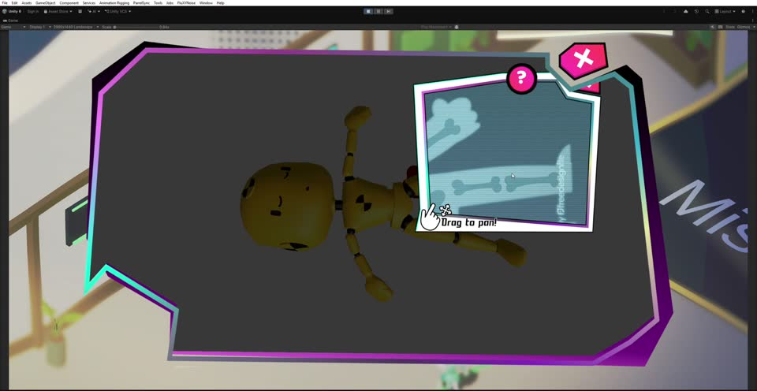
X-rayDrag to pan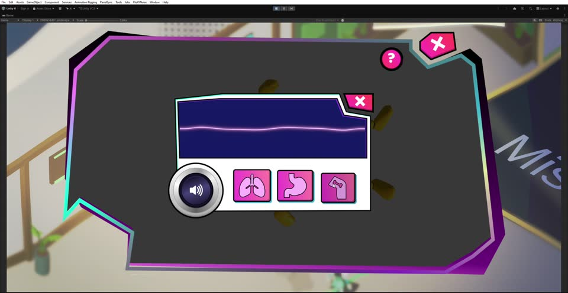
StethoscopeListen at the lung, the stomach and the bone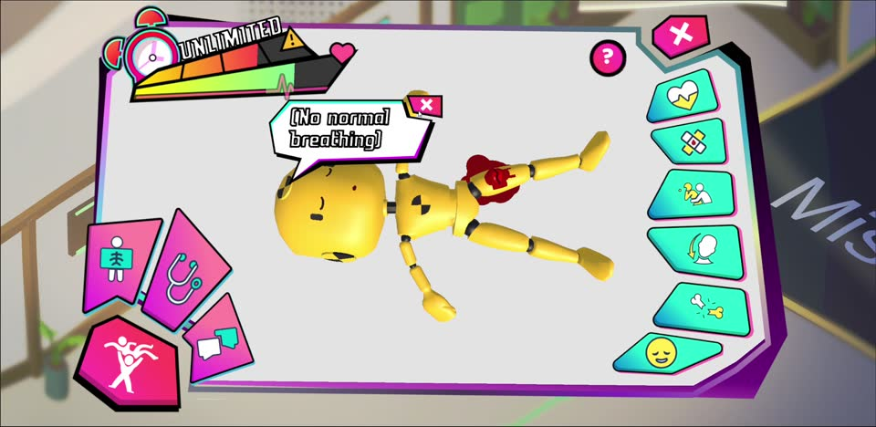
DialogueAsk the victim and read the answerTreatment minigames
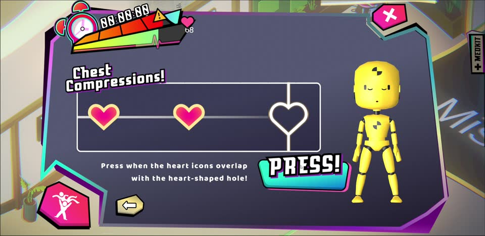
Chest CompressionsPress when the heart icons overlap with the heart-shaped hole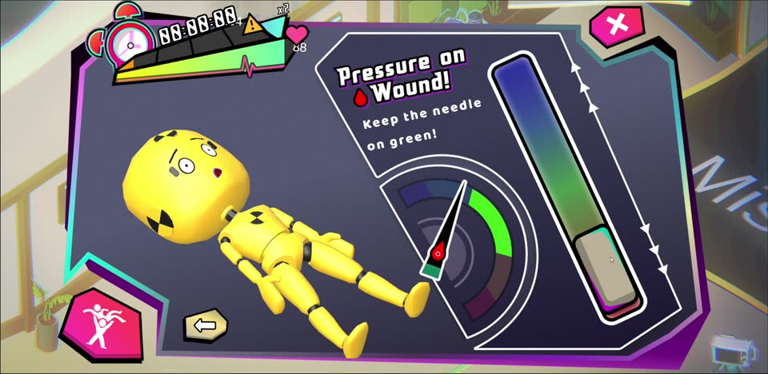
Pressure on WoundKeep the needle on green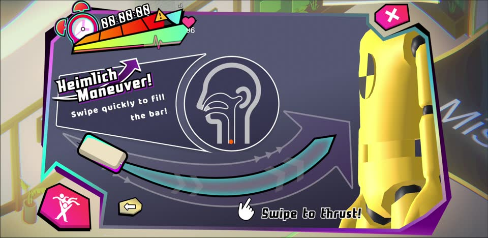
Heimlich ManeuverSwipe quickly to fill the bar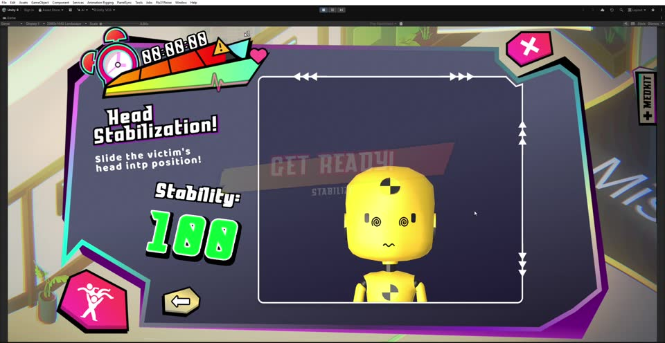
Head StabilizationSlide the victim’s head into position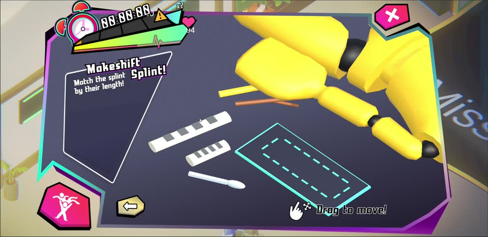
Makeshift SplintMatch the splint by their length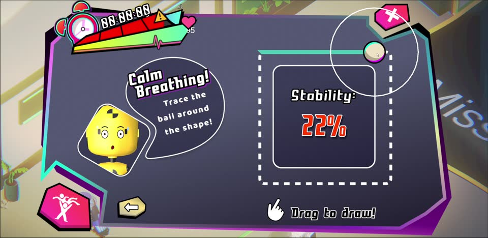
Calm BreathingTrace the ball around the shapeHow this relates to calming an agitated victim
Calm Breathing is a treatment minigame in the build. Whether the calm step before diagnosis reuses it, or is a new minigame by speech or by hand, is still to define.
The rules for diagnosis and the six treatments are on the Diagnosis and treatment page.
X-ray
Diagnosis toolUnity buildRecorded 26 Nov 2026
| Field | Definition |
|---|---|
| Kind | Diagnosis tool |
| On screen | “Drag to pan.” |
| What the clip shows | An X-ray panel over the victim, dragged across the body to look at the bones underneath. |
| In the GDD | One of the diagnosis tools. See Diagnosis and treatment. |
| More | All minigames · Next: Stethoscope |
Stethoscope
Diagnosis toolUnity buildRecorded 26 Nov 2026
| Field | Definition |
|---|---|
| Kind | Diagnosis tool |
| What the player does | Listens at three places, each with its own button: the lung, the stomach and the bone. The sound wave on the screen changes with the place chosen. |
| What the clip shows | A sound wave on a small screen, with a speaker button and three buttons under it for the lung, the stomach and the bone. The wave changes with the one chosen. |
| In the GDD | One of the diagnosis tools. See Diagnosis and treatment. |
| More | All minigames · Previous: X-ray · Next: Dialogue |
Dialogue
Diagnosis toolUnity buildRecorded 26 Nov 2026
| Field | Definition |
|---|---|
| Kind | Diagnosis tool |
| What the player does | Presses the speech bubble button to ask the victim. The answer appears in a speech bubble over the victim. |
| What the clip shows | The speech bubble button is pressed on the victim panel, and a bubble appears over the victim reading “No normal breathing”. |
| In the GDD | One of the diagnosis tools. See Diagnosis and treatment. |
| More | All minigames · Previous: Stethoscope |
Chest Compressions
Treatment minigameUnity buildRecorded 26 Nov 2026
| Field | Definition |
|---|---|
| Kind | Treatment minigame |
| On screen | “Press when the heart icons overlap with the heart-shaped hole.” |
| What the clip shows | Hearts slide along a track towards a heart-shaped hole beside a Press button. |
| In the GDD | Called CPR. Its rules are on the Diagnosis and treatment page. |
| More | All minigames · Next: Pressure on Wound |
Pressure on Wound
Treatment minigameUnity buildRecorded 26 Nov 2026
| Field | Definition |
|---|---|
| Kind | Treatment minigame |
| On screen | “Keep the needle on green.” |
| What the clip shows | A needle on a curved gauge with a green zone, beside a vertical slider. |
| In the GDD | Called Pressure. Its rules are on the Diagnosis and treatment page. |
| More | All minigames · Previous: Chest Compressions · Next: Heimlich Maneuver |
Heimlich Maneuver
Treatment minigameUnity buildRecorded 26 Nov 2026
| Field | Definition |
|---|---|
| Kind | Treatment minigame |
| On screen | “Swipe quickly to fill the bar. Swipe to thrust.” |
| What the clip shows | A curved swipe track under a cross-section of a throat with something stuck in it. |
| In the GDD | Called Heimlich. Its rules are on the Diagnosis and treatment page. |
| More | All minigames · Previous: Pressure on Wound · Next: Head Stabilization |
Head Stabilization
Treatment minigameUnity buildRecorded 26 Nov 2026
| Field | Definition |
|---|---|
| Kind | Treatment minigame |
| On screen | “Slide the victim’s head into position.” |
| What the clip shows | The victim’s head between two vertical sliders, with a Stability number that climbs. |
| In the GDD | Called Stabilize. Its rules are on the Diagnosis and treatment page. |
| More | All minigames · Previous: Heimlich Maneuver · Next: Makeshift Splint |
Makeshift Splint
Treatment minigameUnity buildRecorded 26 Nov 2026
| Field | Definition |
|---|---|
| Kind | Treatment minigame |
| On screen | “Match the splint by their length. Drag to move.” |
| What the clip shows | Sticks and rulers of different lengths beside a dashed outline next to the victim’s limb. |
| In the GDD | Called Splint. Its rules are on the Diagnosis and treatment page. |
| More | All minigames · Previous: Head Stabilization · Next: Calm Breathing |
Calm Breathing
Treatment minigameUnity buildRecorded 26 Nov 2026
| Field | Definition |
|---|---|
| Kind | Treatment minigame |
| On screen | “Trace the ball around the shape. Drag to draw.” |
| What the clip shows | A ball that is traced around a dashed square while a Stability percentage rises to 100%. |
| In the GDD | Called Calm. Its rules are on the Diagnosis and treatment page. |
| Calming an agitated victim | Whether the calm step before diagnosis reuses this minigame is still to define. See Agitated victim. |
| More | All minigames · Previous: Makeshift Splint |
Unconscious victim
Victim typeDecided 25 Nov 2026Not yet in the GDD
| Field | Definition |
|---|---|
| What is decided | Only that this is one of the three types. Still to define. |
| Shown by | Cam’s highlight, which shows each victim’s type. |
| Looks and behaviour | Still to define |
| Sources | Agenda 25, 26 Nov |
Agitated victim
Victim typeDecided 25 Nov 2026Not yet in the GDD
| Field | Definition |
|---|---|
| What is decided | Has to be calmed before it can be diagnosed. |
| Calming | Red’s aura settles every agitated victim in its radius over a few seconds. Without Red, any droid calms one victim at a time through a minigame. |
| Can become agitated again | Yes, if an event happens around it. See Agitation meter and Victims as a trap. |
| Shown by | Cam’s highlight, which shows each victim’s type. |
| Looks and behaviour | Still to define |
| Sources | Agenda 25, 26 Nov |
Normal victim
Victim typeDecided 25 Nov 2026Not yet in the GDD
| Field | Definition |
|---|---|
| What is decided | Only that this is one of the three types. Still to define. |
| Shown by | Cam’s highlight, which shows each victim’s type. |
| Looks and behaviour | Still to define |
| Sources | Agenda 25, 26 Nov |
Read from the GDD on 23 Nov 2026 and from the lo-fi, with the Shop changes and example boons of 25 Nov 2026
All boons
Boons are small permanent trinkets that give the squad an edge in every mission. They are bought with pine nuts at the Shop, and take effect only while they are packed in the medkit.
Changed on 25 Nov 2026, not yet in the GDD
- 14 example boons were added, including two new groups, Rescue and Awareness, and boons of 5 and 6 cells. They are examples being considered and are not confirmed.
- Temporary items are removed, so the Shop sells boons only. The four shop items that were listed here are gone.
- A boon costs 100 pine nuts for each cell it takes up in the medkit. It used to cost 1 bobble for each cell.
- At later levels the Shop has a higher chance to sell boons of 5 cells and above.
- Bobbles are used for the skill tree only.
- Droid boons are removed. Anything about one droid now belongs to its skill tree, and every boon is for the whole squad.
| Boon | Type | Shape | Cells | Price | Effect | On sale from | From |
|---|---|---|---|---|---|---|---|
| Light Treads | QoL | 1 | 100 pine nuts | +5% movement speed for all droids | Checkpoint 1 | GDD 3.3.2 | |
| Quick Charge | QoL | 2 | 200 pine nuts | Ability bars recharge 10% faster | Checkpoint 1 | GDD 3.3.2 | |
| Clear Sight | QoL | 2 | 200 pine nuts | Smoke reduces visibility 25% less | Checkpoint 2 | GDD 3.3.2 | |
| Buddy System | QoL | 3 | 300 pine nuts | A droid that is switched out slowly recovers health | Checkpoint 2 | Example, 25 Nov | |
| Rush Boots | QoL | 4 | 400 pine nuts | All droids move much faster, but ability bars recharge slower | Checkpoint 2 | Example, 25 Nov | |
| Big Batteries | QoL | 5 | 500 pine nuts | Every droid’s ability bar is larger | Checkpoint 3 | Example, 25 Nov | |
| Command Link | QoL | 6 | 600 pine nuts | Switching droids gives the new droid a short speed burst and a partly refilled ability bar | Checkpoint 3 | Example, 25 Nov | |
| Steady Beat | Performance | 1 | 100 pine nuts | Wider “perfect” window in the CPR minigame | Checkpoint 1 | GDD 3.3.2 | |
| Firm Footing | Performance | 2 | 200 pine nuts | Steadier sliders in the Stabilize minigame | Checkpoint 2 | GDD 3.3.2 | |
| Second Try | Performance | 3 | 300 pine nuts | The first treatment minigame failed in a mission does not leave the condition worse | Checkpoint 2 | Example, 25 Nov | |
| Gentle Hands | Performance | 4 | 400 pine nuts | Larger green zone in the pressure application minigame | Checkpoint 3 | GDD 3.3.2 | |
| Soft Grip | Rescue | 1 | 100 pine nuts | Droids move a little faster while carrying a survivor | Checkpoint 1 | Example, 25 Nov | |
| Careful Carry | Rescue | 2 | 200 pine nuts | Carried survivors lose vitality slower, but droids move slower while carrying | Checkpoint 2 | Example, 25 Nov | |
| Steady Vitals | Rescue | 4 | 400 pine nuts | A survivor’s vitality falls slower once they have been diagnosed | Checkpoint 3 | Example, 25 Nov | |
| Second Wind | Rescue | 5 | 500 pine nuts | The first droid to go down gets back up once, at low health | Checkpoint 3 | Example, 25 Nov | |
| Golden Hour | Rescue | 6 | 600 pine nuts | Every survivor’s vitality falls slower for the first part of the mission | Checkpoint 3 | Example, 25 Nov | |
| Sharp Eyes | Awareness | 1 | 100 pine nuts | Survivors are tagged from a little further away | Checkpoint 1 | Example, 25 Nov | |
| Triage Tags | Awareness | 2 | 200 pine nuts | Tagged survivors show their vitality | Checkpoint 1 | Example, 25 Nov | |
| First Look | Awareness | 3 | 300 pine nuts | The mission starts with the nearest survivor already tagged | Checkpoint 2 | Example, 25 Nov | |
| Wide Sweep | Awareness | 4 | 400 pine nuts | Every droid tags survivors and hazards from much further away | Checkpoint 3 | Example, 25 Nov |
Buy and pack them in the Shop and Medkit lo-fi.
Still to define
- Which of the 14 example boons are kept, and whether Rescue and Awareness stay as groups.
- The numbers behind each effect, such as how much slower vitality falls or how much further droids tag.
- Whether the Shop’s stock is random at each visit, and which boons each checkpoint’s Shop can offer.
- Which boons are hidden in which levels.
- How many pine nuts each source pays: completing a stage, survivors rescued and hazards solved.
Light Treads
QoL1 cell100 pine nutsGDD example
| Field | Definition |
|---|---|
| Type | Quality of Life (QoL). Improves how all droids move and use their abilities. |
| Effect | +5% movement speed for all droids. The number is a placeholder for balancing. |
| Shape | 1 cell. It can be rotated 90° while packing. |
| Price | 100 pine nuts: 100 pine nuts for each cell it takes up in the medkit. |
| On sale from | Checkpoint 1 in the lo-fi. Placeholder stock. |
| Takes effect | Only while it is packed in the medkit. |
| Shared rules | How boons work, Buying at the Shop |
| Sources | GDD 3.3.2 Lo-fiAgenda 25 Nov |
Quick Charge
QoL2 cells200 pine nutsGDD example
| Field | Definition |
|---|---|
| Type | Quality of Life (QoL). Improves how all droids move and use their abilities. |
| Effect | Ability bars recharge 10% faster. The number is a placeholder for balancing. |
| Shape | 2 cells. It can be rotated 90° while packing. |
| Price | 200 pine nuts: 100 pine nuts for each cell it takes up in the medkit. |
| On sale from | Checkpoint 1 in the lo-fi. Placeholder stock. |
| Takes effect | Only while it is packed in the medkit. |
| Shared rules | How boons work, Buying at the Shop |
| Sources | GDD 3.3.2 Lo-fiAgenda 25 Nov |
Clear Sight
QoL2 cells200 pine nutsGDD example
| Field | Definition |
|---|---|
| Type | Quality of Life (QoL). Improves how all droids move and use their abilities. |
| Effect | Smoke reduces visibility 25% less. The number is a placeholder for balancing. |
| Shape | 2 cells. It can be rotated 90° while packing. |
| Price | 200 pine nuts: 100 pine nuts for each cell it takes up in the medkit. |
| On sale from | Checkpoint 2 in the lo-fi. Placeholder stock. |
| Takes effect | Only while it is packed in the medkit. |
| Related | Smoke |
| Shared rules | How boons work, Buying at the Shop |
| Sources | GDD 3.3.2 Lo-fiAgenda 25 Nov |
Buddy System
QoL3 cells300 pine nutsExample, not confirmed
| Field | Definition |
|---|---|
| Type | Quality of Life (QoL). Improves how all droids move and use their abilities. |
| Effect | A droid that is switched out slowly recovers health. How much is still to define. |
| Shape | 3 cells. It can be rotated 90° while packing. |
| Price | 300 pine nuts: 100 pine nuts for each cell it takes up in the medkit. |
| On sale from | Checkpoint 2 in the lo-fi. Placeholder stock. |
| Takes effect | Only while it is packed in the medkit. |
| Status | Example, not confirmed. Added on 25 Nov 2026 as an example of what a boon of this size could do. It is not in the GDD. |
| Related | Droids and switching |
| Shared rules | How boons work, Buying at the Shop |
| Sources | Lo-fiAgenda 25 Nov |
Rush Boots
QoL4 cells400 pine nutsExample, not confirmed
| Field | Definition |
|---|---|
| Type | Quality of Life (QoL). Improves how all droids move and use their abilities. |
| Effect | All droids move much faster, but ability bars recharge slower. How much is still to define. |
| Shape | 4 cells. It can be rotated 90° while packing. |
| Price | 400 pine nuts: 100 pine nuts for each cell it takes up in the medkit. |
| On sale from | Checkpoint 2 in the lo-fi. Placeholder stock. |
| Takes effect | Only while it is packed in the medkit. |
| Status | Example, not confirmed. Added on 25 Nov 2026 as an example of what a boon of this size could do. It is not in the GDD. |
| Related | Droids and switching |
| Shared rules | How boons work, Buying at the Shop |
| Sources | Lo-fiAgenda 25 Nov |
Big Batteries
QoL5 cells500 pine nutsExample, not confirmed
| Field | Definition |
|---|---|
| Type | Quality of Life (QoL). Improves how all droids move and use their abilities. |
| Effect | Every droid’s ability bar is larger. How much is still to define. |
| Shape | 5 cells. It can be rotated 90° while packing. |
| Price | 500 pine nuts: 100 pine nuts for each cell it takes up in the medkit. |
| On sale from | Checkpoint 3 in the lo-fi. Placeholder stock. At later levels the Shop has a higher chance to sell boons of this size. |
| Takes effect | Only while it is packed in the medkit. |
| Status | Example, not confirmed. Added on 25 Nov 2026 as an example of what a boon of this size could do. It is not in the GDD. |
| Related | Droids and switching |
| Shared rules | How boons work, Buying at the Shop |
| Sources | Lo-fiAgenda 25 Nov |
Command Link
QoL6 cells600 pine nutsExample, not confirmed
| Field | Definition |
|---|---|
| Type | Quality of Life (QoL). Improves how all droids move and use their abilities. |
| Effect | Switching droids gives the new droid a short speed burst and a partly refilled ability bar. How much is still to define. |
| Shape | 6 cells. It can be rotated 90° while packing. |
| Price | 600 pine nuts: 100 pine nuts for each cell it takes up in the medkit. |
| On sale from | Checkpoint 3 in the lo-fi. Placeholder stock. At later levels the Shop has a higher chance to sell boons of this size. |
| Takes effect | Only while it is packed in the medkit. |
| Status | Example, not confirmed. Added on 25 Nov 2026 as an example of what a boon of this size could do. It is not in the GDD. |
| Related | Droids and switching |
| Shared rules | How boons work, Buying at the Shop |
| Sources | Lo-fiAgenda 25 Nov |
Steady Beat
Performance1 cell100 pine nutsGDD example
| Field | Definition |
|---|---|
| Type | Performance. Makes a treatment minigame more forgiving. |
| Effect | Wider “perfect” window in the CPR minigame. |
| Shape | 1 cell. It can be rotated 90° while packing. |
| Price | 100 pine nuts: 100 pine nuts for each cell it takes up in the medkit. |
| On sale from | Checkpoint 1 in the lo-fi. Placeholder stock. |
| Takes effect | Only while it is packed in the medkit. |
| Related | Diagnosis and treatment |
| Shared rules | How boons work, Buying at the Shop |
| Sources | GDD 3.3.2 Lo-fiAgenda 25 Nov |
Firm Footing
Performance2 cells200 pine nutsGDD example
| Field | Definition |
|---|---|
| Type | Performance. Makes a treatment minigame more forgiving. |
| Effect | Steadier sliders in the Stabilize minigame. |
| Shape | 2 cells. It can be rotated 90° while packing. |
| Price | 200 pine nuts: 100 pine nuts for each cell it takes up in the medkit. |
| On sale from | Checkpoint 2 in the lo-fi. Placeholder stock. |
| Takes effect | Only while it is packed in the medkit. |
| Related | Diagnosis and treatment |
| Shared rules | How boons work, Buying at the Shop |
| Sources | GDD 3.3.2 Lo-fiAgenda 25 Nov |
Second Try
Performance3 cells300 pine nutsExample, not confirmed
| Field | Definition |
|---|---|
| Type | Performance. Makes a treatment minigame more forgiving. |
| Effect | The first treatment minigame failed in a mission does not leave the condition worse. How much is still to define. |
| Shape | 3 cells. It can be rotated 90° while packing. |
| Price | 300 pine nuts: 100 pine nuts for each cell it takes up in the medkit. |
| On sale from | Checkpoint 2 in the lo-fi. Placeholder stock. |
| Takes effect | Only while it is packed in the medkit. |
| Status | Example, not confirmed. Added on 25 Nov 2026 as an example of what a boon of this size could do. It is not in the GDD. |
| Related | Diagnosis and treatment |
| Shared rules | How boons work, Buying at the Shop |
| Sources | Lo-fiAgenda 25 Nov |
Gentle Hands
Performance4 cells400 pine nutsGDD example
| Field | Definition |
|---|---|
| Type | Performance. Makes a treatment minigame more forgiving. |
| Effect | Larger green zone in the pressure application minigame. |
| Shape | 4 cells. It can be rotated 90° while packing. |
| Price | 400 pine nuts: 100 pine nuts for each cell it takes up in the medkit. |
| On sale from | Checkpoint 3 in the lo-fi. Placeholder stock. |
| Takes effect | Only while it is packed in the medkit. |
| Related | Diagnosis and treatment |
| Shared rules | How boons work, Buying at the Shop |
| Sources | GDD 3.3.2 Lo-fiAgenda 25 Nov |
Soft Grip
Rescue1 cell100 pine nutsExample, not confirmed
| Field | Definition |
|---|---|
| Type | Rescue. Protects survivors and droids while a rescue is under way. This group is an example added on 25 Nov and is not in the GDD. |
| Effect | Droids move a little faster while carrying a survivor. How much is still to define. |
| Shape | 1 cell. It can be rotated 90° while packing. |
| Price | 100 pine nuts: 100 pine nuts for each cell it takes up in the medkit. |
| On sale from | Checkpoint 1 in the lo-fi. Placeholder stock. |
| Takes effect | Only while it is packed in the medkit. |
| Status | Example, not confirmed. Added on 25 Nov 2026 as an example of what a boon of this size could do. It is not in the GDD. |
| Related | Droid interactions in the level |
| Shared rules | How boons work, Buying at the Shop |
| Sources | Lo-fiAgenda 25 Nov |
Careful Carry
Rescue2 cells200 pine nutsExample, not confirmed
| Field | Definition |
|---|---|
| Type | Rescue. Protects survivors and droids while a rescue is under way. This group is an example added on 25 Nov and is not in the GDD. |
| Effect | Carried survivors lose vitality slower, but droids move slower while carrying. How much is still to define. |
| Shape | 2 cells. It can be rotated 90° while packing. |
| Price | 200 pine nuts: 100 pine nuts for each cell it takes up in the medkit. |
| On sale from | Checkpoint 2 in the lo-fi. Placeholder stock. |
| Takes effect | Only while it is packed in the medkit. |
| Status | Example, not confirmed. Added on 25 Nov 2026 as an example of what a boon of this size could do. It is not in the GDD. |
| Related | Droid interactions in the level |
| Shared rules | How boons work, Buying at the Shop |
| Sources | Lo-fiAgenda 25 Nov |
Steady Vitals
Rescue4 cells400 pine nutsExample, not confirmed
| Field | Definition |
|---|---|
| Type | Rescue. Protects survivors and droids while a rescue is under way. This group is an example added on 25 Nov and is not in the GDD. |
| Effect | A survivor’s vitality falls slower once they have been diagnosed. How much is still to define. |
| Shape | 4 cells. It can be rotated 90° while packing. |
| Price | 400 pine nuts: 100 pine nuts for each cell it takes up in the medkit. |
| On sale from | Checkpoint 3 in the lo-fi. Placeholder stock. |
| Takes effect | Only while it is packed in the medkit. |
| Status | Example, not confirmed. Added on 25 Nov 2026 as an example of what a boon of this size could do. It is not in the GDD. |
| Related | Diagnosis and treatment |
| Shared rules | How boons work, Buying at the Shop |
| Sources | Lo-fiAgenda 25 Nov |
Second Wind
Rescue5 cells500 pine nutsExample, not confirmed
| Field | Definition |
|---|---|
| Type | Rescue. Protects survivors and droids while a rescue is under way. This group is an example added on 25 Nov and is not in the GDD. |
| Effect | The first droid to go down gets back up once, at low health. How much is still to define. |
| Shape | 5 cells. It can be rotated 90° while packing. |
| Price | 500 pine nuts: 100 pine nuts for each cell it takes up in the medkit. |
| On sale from | Checkpoint 3 in the lo-fi. Placeholder stock. At later levels the Shop has a higher chance to sell boons of this size. |
| Takes effect | Only while it is packed in the medkit. |
| Status | Example, not confirmed. Added on 25 Nov 2026 as an example of what a boon of this size could do. It is not in the GDD. |
| Related | Droids and switching |
| Shared rules | How boons work, Buying at the Shop |
| Sources | Lo-fiAgenda 25 Nov |
Golden Hour
Rescue6 cells600 pine nutsExample, not confirmed
| Field | Definition |
|---|---|
| Type | Rescue. Protects survivors and droids while a rescue is under way. This group is an example added on 25 Nov and is not in the GDD. |
| Effect | Every survivor’s vitality falls slower for the first part of the mission. How much is still to define. |
| Shape | 6 cells. It can be rotated 90° while packing. |
| Price | 600 pine nuts: 100 pine nuts for each cell it takes up in the medkit. |
| On sale from | Checkpoint 3 in the lo-fi. Placeholder stock. At later levels the Shop has a higher chance to sell boons of this size. |
| Takes effect | Only while it is packed in the medkit. |
| Status | Example, not confirmed. Added on 25 Nov 2026 as an example of what a boon of this size could do. It is not in the GDD. |
| Related | Diagnosis and treatment |
| Shared rules | How boons work, Buying at the Shop |
| Sources | Lo-fiAgenda 25 Nov |
Sharp Eyes
Awareness1 cell100 pine nutsExample, not confirmed
| Field | Definition |
|---|---|
| Type | Awareness. Helps the squad find and read survivors and hazards sooner. This group is an example added on 25 Nov and is not in the GDD. |
| Effect | Survivors are tagged from a little further away. How much is still to define. |
| Shape | 1 cell. It can be rotated 90° while packing. |
| Price | 100 pine nuts: 100 pine nuts for each cell it takes up in the medkit. |
| On sale from | Checkpoint 1 in the lo-fi. Placeholder stock. |
| Takes effect | Only while it is packed in the medkit. |
| Status | Example, not confirmed. Added on 25 Nov 2026 as an example of what a boon of this size could do. It is not in the GDD. |
| Related | Droid interactions in the level |
| Shared rules | How boons work, Buying at the Shop |
| Sources | Lo-fiAgenda 25 Nov |
Triage Tags
Awareness2 cells200 pine nutsExample, not confirmed
| Field | Definition |
|---|---|
| Type | Awareness. Helps the squad find and read survivors and hazards sooner. This group is an example added on 25 Nov and is not in the GDD. |
| Effect | Tagged survivors show their vitality. How much is still to define. |
| Shape | 2 cells. It can be rotated 90° while packing. |
| Price | 200 pine nuts: 100 pine nuts for each cell it takes up in the medkit. |
| On sale from | Checkpoint 1 in the lo-fi. Placeholder stock. |
| Takes effect | Only while it is packed in the medkit. |
| Status | Example, not confirmed. Added on 25 Nov 2026 as an example of what a boon of this size could do. It is not in the GDD. |
| Related | Droid interactions in the level |
| Shared rules | How boons work, Buying at the Shop |
| Sources | Lo-fiAgenda 25 Nov |
First Look
Awareness3 cells300 pine nutsExample, not confirmed
| Field | Definition |
|---|---|
| Type | Awareness. Helps the squad find and read survivors and hazards sooner. This group is an example added on 25 Nov and is not in the GDD. |
| Effect | The mission starts with the nearest survivor already tagged. How much is still to define. |
| Shape | 3 cells. It can be rotated 90° while packing. |
| Price | 300 pine nuts: 100 pine nuts for each cell it takes up in the medkit. |
| On sale from | Checkpoint 2 in the lo-fi. Placeholder stock. |
| Takes effect | Only while it is packed in the medkit. |
| Status | Example, not confirmed. Added on 25 Nov 2026 as an example of what a boon of this size could do. It is not in the GDD. |
| Related | Droid interactions in the level |
| Shared rules | How boons work, Buying at the Shop |
| Sources | Lo-fiAgenda 25 Nov |
Wide Sweep
Awareness4 cells400 pine nutsExample, not confirmed
| Field | Definition |
|---|---|
| Type | Awareness. Helps the squad find and read survivors and hazards sooner. This group is an example added on 25 Nov and is not in the GDD. |
| Effect | Every droid tags survivors and hazards from much further away. How much is still to define. |
| Shape | 4 cells. It can be rotated 90° while packing. |
| Price | 400 pine nuts: 100 pine nuts for each cell it takes up in the medkit. |
| On sale from | Checkpoint 3 in the lo-fi. Placeholder stock. |
| Takes effect | Only while it is packed in the medkit. |
| Status | Example, not confirmed. Added on 25 Nov 2026 as an example of what a boon of this size could do. It is not in the GDD. |
| Related | Droid interactions in the level |
| Shared rules | How boons work, Buying at the Shop |
| Sources | Lo-fiAgenda 25 Nov |
How boons work
ReferenceGDD 3.3.2, 3.3.7
Boons are small permanent trinkets that give the player an edge across every mission.
| Rule | How it works |
|---|---|
| Groups in the GDD | QoL boons improve how all droids move and use their abilities. Performance boons make treatment minigames more forgiving. Droid boons were removed on 25 Nov, so every boon is for the whole squad. |
| Example groups | Rescue boons protect survivors and droids while a rescue is under way. Awareness boons help the squad find and read survivors and hazards sooner. Both were added as examples on 25 Nov and are not confirmed. |
| Boons and the skill tree | Every boon is for the whole squad. Anything about one droid belongs to that droid’s skill tree. |
| Takes effect | A boon the player owns does nothing until it is placed in the medkit. |
| Owned once | Each boon is owned only once, so it cannot be bought or found twice. It is permanent once owned. |
| Shape | Every boon has a fixed shape that decides how much space it takes in the medkit, and stronger boons have larger shapes. The GDD’s QoL and Performance boons are simple rectangles. Some example boons use odd shapes, which the GDD does not describe for these groups. |
| Size | The boons listed run from 1 cell to 6 cells. All 20 take 61 cells, and the medkit has 20, so a full medkit forces a choice. |
| How a boon improves an ability | Abilities use bars that drain and recharge, so a boon improves one in one of three ways: recharge speed, drain rate or bar capacity. |
| Found in levels | Some boons are hidden in mission levels. A boon picked up during a mission joins the inventory when the mission ends, and each hidden boon can only be found once. |
| After a failed mission | Boons are kept, including one picked up during the mission that failed. |
| Sources | GDD 3.3.2, 3.3.7, 2.5.5 Agenda 25 Nov |
Packing, rotating and the locked cells are on the Medkit rules page.
Buying at the Shop
ReferenceGDD 3.3.1, 3.3.5Changed 25 Nov
There is one Shop, and it sells boons for pine nuts.
| Rule | How it works |
|---|---|
| When it opens | At every checkpoint, including when the player is sent back to one after a failed run. It first opens after stage 3. |
| Price | 100 pine nuts for each cell a boon takes up in the medkit, so boons cost from 100 pine nuts to 600 pine nuts. Boons the player already owns are shown as owned and cannot be bought again. |
| Stock | At later levels the Shop has a higher chance to sell boons of 5 cells and above. The example boons of that size are Big Batteries, Command Link, Second Wind, Golden Hour, and the lo-fi puts them on sale from checkpoint 3. Whether the stock is random at each visit is still open. |
| Where purchases go | Straight to the inventory. |
| Earning pine nuts | From completing a stage, from survivors rescued and from hazards solved. Replaying a stage pays again, and what replays pay should be tracked. Unspent pine nuts carry over to the next checkpoint and are not lost when a run fails. |
| Bobbles | Every star earned on a completed stage is worth 1 bobble. Bobbles are used for the skill tree only. |
| Sources | GDD 3.3.1, 3.3.5 Agenda 25 Nov |
The full rules and the playable Shop are on the Shop page.
Read from the GDD, Figma and the mission sheet on 23 Nov 2026
All droids
The Patchbots
Six droids on their way to becoming a fully recognized first responder team. Pick one to meet them.
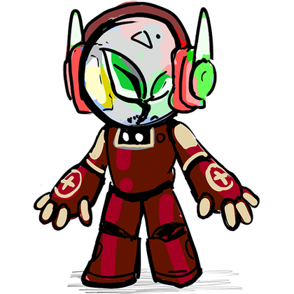
RedThe charismatic leader of the PatchbotsCalming aura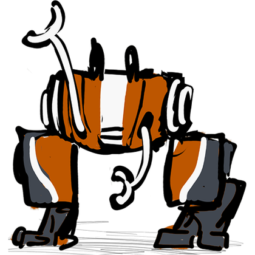
CrabThe dependable life(buoy) of the partyGrip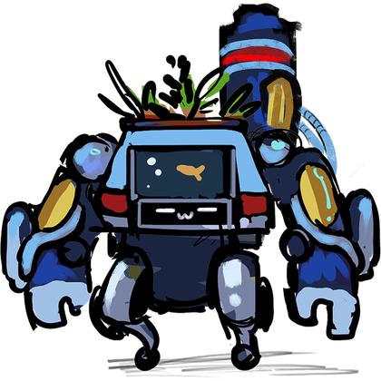
FishCool, level-headed and shyWater stream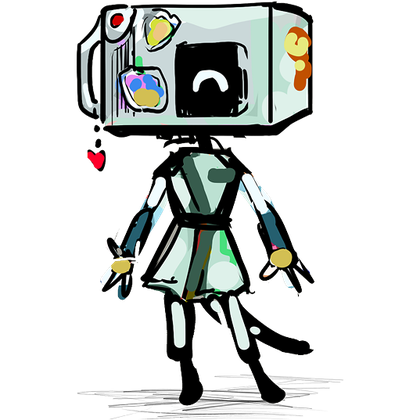
CamThe lovable star of the showHighlight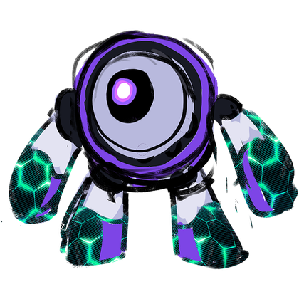
OrbA dreamer, with their round head often in the cloudsCharge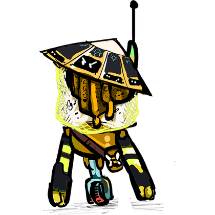
BeeThe no-nonsense go-getter of the groupHerdYou are the player. You have the ability to swap between and control each of the Patchbots, and the responsibility to help them achieve their goal of becoming a fully recognized first responder team. They don’t know you exist, but they trust you to make their dreams come true.
The game has six playable droids, each with one ability. All six are defined: Fish’s and Bee’s in the GDD, and Red’s, Cam’s, Crab’s and Orb’s by the decisions of 26 Nov 2026.
Decided on 26 Nov 2026, not yet in the GDD
- Red has a calming aura that settles agitated victims around it.
- Cam sees clearer in low visibility, and its highlight shows victims with their type, interactables and key items. On 26 Nov anything beyond a wall was shown in infrared. In the playable lo-fi that is moved to the Infrared pulse upgrade, which is not confirmed.
- Crab grips light and medium objects: light ones are carried and medium ones are dragged.
- Orb makes an aimed charge that destroys heavy obstacles. Anything else in the way is knocked aside, and each destroyed obstacle counts as property damage.
- Skill tree candidates are noted for Crab and Orb on their Skill tree tabs.
- Victims now come in three types, with a hidden agitation meter. See Victims.
| Droid | Ability | Activation | Skill tree | In Bypass Firewall |
|---|---|---|---|---|
| Red | A calming aura. Agitated victims inside a radius around Red settle over a few seconds, and can then be diagnosed. | Tap to toggle on or off | To be added | |
| Crab | Grips a light or medium object next to it. A light object is carried and a medium object is dragged behind, in any direction. Gripping again sets it down. | Tap to grip, tap again to let go | To be added | |
| Fish | A stream of water. Fish aims it and sprays to cool a fire until it is out. Stated on 27 Nov 2026: the twin water cannons are dropped, and Fish matches its answer to the kind of fire. | Press and hold to spray | To be added | Yes |
| Cam | A highlight. Victims, interactables and key items around Cam light up. A highlighted victim shows its type. It shows only what is in Cam’s line of sight: seeing beyond a wall in infrared is moved to the Infrared pulse upgrade in the playable lo-fi, which is not confirmed. | Tap to toggle on or off | To be added | Yes |
| Orb | An aimed charge. Orb winds up, then charges down a straight lane and destroys the first heavy obstacle it hits, leaving nothing behind. Anything else in the way is pushed or knocked aside. | Press and hold to aim and wind up, release to charge | To be added | |
| Bee | A swarm in a radius around Bee that pushes past and disperses crowds. Played as Herd: people inside the swarm walk away from Bee, so the player steers a crowd by where Bee stands. | Tap to toggle on or off | To be added | Yes |
Abilities run on a bar that drains while the ability is in use and recharges when it isn’t, so there are no fixed cooldowns. Drain and recharge rates are still to be balanced. The player brings up to 4 of the 6 droids into a mission and switches between them on the spot: see Party and switching.
Where the sources differ
- Red’s, Cam’s, Crab’s and Orb’s abilities. The GDD lists all four as to be defined. They were decided on 26 Nov 2026.
- Cam in Figma. The boards for Bypass Firewall show an earlier version, in which its ability tags the crowd and everything else in range.
- Fish’s ability. Figma calls it Splash Cannons, and the GDD describes two water cannons that also push back crowds. On 27 Nov 2026 the twin water cannons were dropped for a single water stream. The pages for Bypass Firewall and the boon still describe the cannons, as their sources do.
Still to define in the GDD
- Red’s, Cam’s, Crab’s and Orb’s abilities, as decided on 26 Nov 2026.
- Drain and recharge rates for every ability bar.
- The skill tree of each droid, and how skill points are earned from a stage.
- Droid backstories in the GDD. Section 5.2 has a heading for them and no text yet. The stories shown here come from the FigJam board, where Cam’s, Fish’s and Orb’s are still drafts.
Red
DroidAbility defined
Red
The charismatic leader of the Patchbots
Before the teamA failed medic droid prototype, reassigned to storeroom duty
Calming aura
A calming aura. Agitated victims inside a radius around Red settle over a few seconds, and can then be diagnosed.
- Ability bar
- Drains while the aura is on.
- Activation
- Tap to toggle on or off
The charismatic leader of the Patchbots, Red motivates their team through uplifting music and inspiring words.
Red’s design was based on an old medic droid blueprint, but they were marked as a failed prototype due to their unpredictable empathy simulator. They were quickly reassigned to storeroom duty in a first responder HQ, and is well-liked among the staff there. However, Red always believed they were destined for greater things.
Naturally anxious at heart, Red uses music to soothe their wired nerves. They hate being alone, so they adopted a little sapling to nurture and befriend. They often speak or sing to the sapling to help themselves calm down.
Now, Red is on a journey to grow their confidence, spread their song, and blossom into the hero they know they were meant to be.
Story from the Characters & Lore section of the InnovSpur FigJam board, read on 26 Nov 2026. Picture from the game’s character sprites in the Unity project.
Details
| Field | Definition |
|---|---|
| Without Red | Any droid calms one victim at a time through a minigame. The form of the minigame is still to define. |
| What it acts on | The hidden agitation meter of each agitated victim. A calm victim becomes agitated again if an event happens around them. |
| Status | Decided on 26 Nov 2026, not yet in the GDD, which still has this ability as to be defined. |
| Still to define | The radius of the aura, how long a victim takes to settle and how fast the bar drains. Which events make a calm victim agitated again. |
| Skill tree | A linear chain of 5 upgrades on the Calming aura: Wider aura, Cradle carry, Steadying aura, Tranquilizer, Reviving pulse. They are candidates, not confirmed. See the . |
| Shared rules | Party and switching, What every droid can do, Skill tree rules |
| Sources | GDD 3.4.1, 3.3 |
Red’s upgrades
A linear chain. Each upgrade enhances the Calming aura and includes the ones before it.
- Calming auraBasic ability
A calming aura. Agitated victims inside a radius around Red settle over a few seconds, and can then be diagnosed.
- Wider auraPassive
The aura reaches further, so it settles more victims at once.
SituationSpread out: agitated victims too far apart for the basic aura to reach from one spot.
StatusSuggested on 26 Nov. Not confirmed.
- Cradle carryPassive
Red can keep the aura on while carrying, where other droids have their ability blocked. It is the same aura: it still settles the agitated victims around Red, and it also cradles the carried victim. They float beside Red, so Red moves at walking pace even with someone who cannot walk, bumps and rough ground no longer jolt them, and an event does not make them struggle. The bar drains as usual.
SituationCarry out: four victims to take to the ambulance, with rubble across the straight way.
StatusPicked on 26 Nov to replace Focus. Not confirmed.
- Steadying auraPassive
Calm victims inside the aura are not made agitated again by an event.
SituationAftershocks: events that come every few seconds.
StatusSuggested on 26 Nov. Not confirmed.
- TranquilizerAimed
Red aims and fires a tranquilizer dart: hold to aim, release to fire. A super agitated victim who is hit slows down, stops and is calm. An ordinary agitated victim who is hit is calm at once. Either stays calm through events. Aiming has an assist: it starts on the nearest super agitated victim in sight and locks on when the aim is close to one. It is a shot, not part of the aura, and each dart uses some of the bar.
SituationRampage: a super agitated victim running about, crashing into things and injuring themselves.
StatusStated on 26 Nov as a tranquilizer. Not confirmed.
- Reviving pulsePassive
When Red interacts with a victim who is unconscious and not breathing, a burst of the aura restarts them, so the first attempt works for sure. It is used automatically, with no button. A normal droid draws from a bag of 50 marbles with 3 good ones, with a 1 second cooldown between attempts.
SituationCardiac arrest: a victim who is not breathing, with a countdown.
StatusSuggested on 26 Nov, made automatic on 27 Nov. Not confirmed.
Notes and open points
Super agitated victims were stated on 26 Nov: they run about hitting things and injuring themselves, and a tranquilizer is what works on them, not the aura. What makes a victim super agitated, how much a hit hurts and how they are stopped without the skill are still to define. The situations are suggestions that go with the upgrades, and none is confirmed. Focus was dropped on 26 Nov because the Tranquilizer did its job better. Cradle carry builds on the base rules for carrying a survivor, which are on the What every droid can do page. The Tranquilizer is a separate shot, which assumes an upgrade may do more than change the aura.
| Field | Definition |
|---|---|
| Skills | Candidates are listed above. None is confirmed as a skill yet. |
| Shape | Decided on 26 Nov, for now: the tree is linear for the active skill. Each upgrade enhances the droid’s base ability, one after another. |
| Direction | Decided on 25 Nov: hazards evolve in the later levels, and the skill tree is built around answering their new forms. |
| Bought with | Bobbles, which are used for the skill tree only. Whether they replace skill points is still open. |
| How it works | Skill points permanently upgrade the droid and can unlock abilities. See Skill tree rules. |
A test room for Red’s Calming aura. Calm the agitated victims, then diagnose everyone. Events keep happening, and each one makes calm victims agitated again. This is a flat sketch to try the rules and the numbers, not the game’s look.
Click the room, then move with the arrow keys or WASD. Every action has a button under the room, marked with its key. Press F for the aura, and hold E next to a calm victim to diagnose.
Numbers still to define
What this room follows
- Red: tap to switch the aura on or off. Every agitated victim inside its radius settles over a few seconds, several at once.
- The ability bar drains while the aura is on. An empty bar switches it off.
- A victim can only be diagnosed once calm. Diagnosis is a short hold here, standing in for the diagnosis minigames.
- Each agitated victim has a hidden meter. The player never sees it, and reads it from how much the victim shakes.
- When an event happens, every calm victim who is not diagnosed yet becomes agitated again. Which events count is still to define, so this room uses a timer and a button. Whether a diagnosed victim can become agitated again is also still to define, so here they stay as they are.
- An event interrupts a droid. If an event happens while a droid is in the middle of the calm minigame or a diagnosis, that progress is set back. Stated on 27 Nov as “reset or reduce”. How much is still to choose, so there is a slider for it: 50% here, and 100% is a full reset.
- Another droid: has no aura. It calms one victim at a time through a minigame. The form of the minigame is still to define, so here it is a longer hold next to the victim.
- Super agitated victim: runs about the room and crashes into the walls and the furniture. Every hit injures them, shown by the bar over their head, and at zero they collapse. Red’s aura does not hold them. Any droid can catch one by getting next to them and holding E, which stops them and calms them through the minigame. Stated on 26 Nov. What makes a victim super agitated, how much a hit hurts and how they are stopped without a skill are still to define, so those parts are stand-ins.
- Unconscious victim who is not breathing: has to be revived before anything else, and for a normal droid that is a dice check. It works like a bag of 50 marbles, 3 of them good. Each interaction is one attempt and draws a marble, with a 1 second cooldown. A bad marble is not put back, so the chance creeps up with every miss and the bag cannot run dry: with 47 bad marbles, the 48th attempt at the latest works. Hold E to keep trying. Stated on 27 Nov. Three good marbles was confirmed on 27 Nov. The number has a slider. Red with no Reviving pulse counts as a normal droid here, which is my reading.
- A victim with a countdown gets worse if they are not helped in time. It is counted, and does not end the room.
- Carrying, in the “Carry out” situation: the base rules decided on 26 Nov, for every droid. Tap C or the “Carry” button next to a victim who is diagnosed to pick them up, and again to put them down. A victim who can walk is walked out at near full speed; one who cannot walk or is unconscious is a slow full carry. Everyone’s vitality keeps dropping until they reach the ambulance. Bumping into something, or crossing the rubble, jolts the victim and costs vitality. An agitated victim cannot be carried, and trying makes them more agitated. An event makes a victim who was agitated before struggle, so they have to be put down and calmed again. The ability is blocked while carrying. Every number is a placeholder, and so are the rubble and what an event does to a carried victim.
- Every situation can be solved by any droid, and by Red with no upgrade. It only takes longer: one victim at a time through the calm minigame, catching a runner by hand, reviving by repeated attempts, carrying by hand.
- The situations are suggestions made to give each skill tree upgrade something to solve. None is confirmed.
The controls under the room use the same layout for every droid: the move stick on the left, the base ability in the large button on the right with the ability bar as a ring around it, and the skill tree’s actions in the three slots around it. Hold an aimed button and drag away from it to steer. A drag on the room also moves the droid.
Crab
DroidAbility defined
Crab
The dependable life(buoy) of the party
Before the teamA former anchor droid, who kept construction workers steady in the storm
Grip
Grips a light or medium object next to it. A light object is carried and a medium object is dragged behind, in any direction. Gripping again sets it down.
- Ability bar
- Drains while Crab is holding an object.
- Activation
- Tap to grip, tap again to let go
The dependable life(buoy) of the party, Crab’s infectious whimsy and unsinkable determination reaches audiences far and wide.
Crab was once an anchor droid, braving the disastrous climate phenomena next to hardened construction workers, keeping them steady so they don’t get swept off their feet. Then, at the end of every shift, he would practice his stand up comedy routine to them, and be showered with a round of encouraging applause.
However, a job where everyone had to be kept in place meant that Crab never got the opportunity to explore the world on his own two feet. For once, he’d like to be the one swept up in a wild adventure instead.
Now, Crab travels with his newfound circus of friends to do what he does best: keep people safe from harm, while lifting their spirits with a good joke or two.
Story from the Characters & Lore section of the InnovSpur FigJam board, read on 26 Nov 2026. Picture from the game’s character sprites in the Unity project.
Details
| Field | Definition |
|---|---|
| Carry or drag | The object’s weight decides: light objects are carried, medium objects are dragged. Crab cannot grip heavy or fixed objects. |
| Without Crab | Other droids carry light objects and push medium ones, as every droid can. |
| Status | Decided on 26 Nov 2026, not yet in the GDD, which still has this ability as to be defined. |
| Still to define | How fast the bar drains, and how much slower Crab moves while dragging. |
| Skill tree | A linear chain of 3 upgrades on the Grip: Tow line, Stack and haul, Lift and toss. They are candidates, not confirmed. See the . |
| Shared rules | Party and switching, What every droid can do, Skill tree rules |
| Sources | GDD 3.4.1, 3.3 |
Crab’s upgrades
Three candidates on the Grip. On the playable lo-fi they sit in one linear order, which is a placeholder.
- GripBasic ability
Grips a light or medium object next to it. A light object is carried and a medium object is dragged behind, in any direction. Gripping again sets it down.
- Tow lineAimed
Crab aims and fires a hook on a line, and the object it hits is hooked and reeled in, with Crab’s hands free. Stated on 27 Nov: it functions almost the same as Red’s Tranquilizer, so it is held to aim, has an aim assist, and Crab can move while aiming.
SituationOut of reach: a first aid bag lies across broken floor.
StatusSet aside on 26 Nov. Not confirmed.
- Stack and haulPassive
Pick up as many as three objects at once. Each one slows Crab and drains the bar faster. Asked for on 27 Nov: it works with the Tow line, so the line can be fired again while Crab holds fewer than three, and what it reels in joins the stack.
SituationSupply run: three boxes to bring to the survivor.
StatusSet aside on 26 Nov. Not confirmed.
- Lift and tossAimed
Crab aims and throws what it holds a short distance. Light objects fly further than medium ones. Stated on 27 Nov: it is aimed the same way as the Tow line and Red’s Tranquilizer, so it is held to aim, has an aim assist, and Crab can move while aiming. An object taken with the Tow line can be tossed too.
SituationAcross the gap: the survivor is across broken floor and needs the bag.
StatusSet aside on 26 Nov. Not confirmed.
Notes and open points
Every situation can also be solved by another droid, only more slowly. The situations, the broken floor in two of them and the survivor needing supplies are suggestions, not confirmed. The order of the three is a placeholder until the tree is designed.
| Field | Definition |
|---|---|
| Skills | Candidates are listed above. None is confirmed as a skill yet. |
| Shape | Decided on 26 Nov, for now: the tree is linear for the active skill. Each upgrade enhances the droid’s base ability, one after another. |
| Direction | Decided on 25 Nov: hazards evolve in the later levels, and the skill tree is built around answering their new forms. |
| Bought with | Bobbles, which are used for the skill tree only. Whether they replace skill points is still open. |
| How it works | Skill points permanently upgrade the droid and can unlock abilities. See Skill tree rules. |
A test room for Crab’s Grip, with four situations: a blocked doorway to clear, and three where the survivor needs supplies brought to them. This is a flat sketch to try the rules and the numbers, not the game’s look or physics.
Click the room, then move with the arrow keys or WASD. Press the Grip button next to an object to grip it, and press it again to let go.
Numbers still to define
What this room follows
- Crab: tap to grip the nearest light or medium object, and tap again to set it down. Light is carried at full speed. Medium is dragged in any direction, more slowly.
- Another droid: can carry light objects, and can only push medium objects by walking into them.
- The bar drains while holding and recharges after letting go. If it runs out, the object is dropped.
- Heavy and fixed objects cannot be gripped by either.
- Skills from the skill tree panel only change what Crab can do. They are candidates, not confirmed.
- In three of the situations the survivor needs supplies, which have to be brought within reach of them. A droid cannot cross broken floor, but an object can be pulled or thrown over it.
- Every situation can be solved by another droid, and by Crab with no upgrade. It only takes longer: the long way round, or more trips.
- The situations, the broken floor and the survivor needing supplies are suggestions made to give each upgrade something to solve. None is confirmed.
The controls under the room use the same layout for every droid: the move stick on the left, the base ability in the large button on the right with the ability bar as a ring around it, and the skill tree’s actions in the three slots around it. Hold an aimed button and drag away from it to steer. A drag on the room also moves the droid.
Fish
DroidAbility definedIn Bypass Firewall
Fish
Cool, level-headed and shy
Before the teamA water droid made for tending plants Draft
Water stream
A stream of water. Fish aims it and sprays to cool a fire until it is out. Stated on 27 Nov 2026: the twin water cannons are dropped, and Fish matches its answer to the kind of fire.
- Ability bar
- Drains while spraying.
- Activation
- Press and hold to spray
Don’t let his larger stature fool you: Fish is as gentle as they come. They’re a water droid made for the purposes of tending plants, moving heavy pots with plenty of water for the plants to drink up.
An audience of plants is silent and non-judgmental. Fish has finally built the confidence to reach out to people.
The board’s text for Fish is still a draft, so only its finished lines are shown.
Story from the Characters & Lore section of the InnovSpur FigJam board, read on 26 Nov 2026. Picture from the game’s character sprites in the Unity project.
Details
| Field | Definition |
|---|---|
| In Bypass Firewall |
The boards and the sheet were written for the Splash Cannons. On 27 Nov 2026 the cannons were dropped and Fish now sprays a water stream. Whether the stream moves a crowd is not defined. |
| Kinds of fire | An ordinary fire is cooled by water until it is out. Water makes an oil fire flare up and spread. An electrical fire relights until its breaker is off, and a gas fire relights until its valve is closed. |
| Without Fish | Another droid uses the fire extinguisher, the lid, the breaker, the valve or the hydrant. Every situation can be solved that way, only more slowly. |
| Status | Stated on 27 Nov 2026, not yet in the GDD, which still describes two water cannons that also push back crowds. |
| Still to define | How far the stream reaches, how fast it cools a fire and drains the bar, and how fast the bar recharges. Whether the stream moves a crowd, as the cannons did. Whether Smother and Starve stay separate or merge. |
| Related | Fire, Stove fire, Escaping crowd |
| Skill tree | A linear chain of 3 upgrades on the Water stream: Smother, Starve, Deluge. They are candidates, not confirmed. See the . |
| Shared rules | Party and switching, What every droid can do, Skill tree rules |
| Sources | GDD 3.4.1, 3.3FigmaSheet |
Fish’s upgrades
A linear chain, described on 27 Nov. Fire hazards evolve beyond ordinary fire, and Fish matches its answer to the kind of fire. A fire needs heat, air and fuel, and each upgrade removes one of them or answers a bigger fire. Each includes the ones before it.
- Water streamBasic ability
A stream of water. Fish aims it and sprays to cool a fire until it is out. Stated on 27 Nov 2026: the twin water cannons are dropped, and Fish matches its answer to the kind of fire.
- SmotherToggle
Removes air. Switches the stream from water to foam. Foam puts out an oil fire, which water only makes flare up and spread. Foam drains the bar faster than water.
SituationKitchen pan: a pan of oil is burning, and the lid is across the room.
StatusDescribed on 27 Nov. Not confirmed.
- StarveAimed
Removes fuel. Fish aims and shoots a foam bubble that encases one fire. While it is encased the fire cannot spread, is safe to pass and weakens. The bubble pops after a few seconds, and a fire whose breaker is on or whose valve is open relights. It is aimed the same way as Red’s Tranquilizer.
SituationServer room and Leaking pipe: an electrical fire or a gas fire fills the doorway, and its breaker or valve is on the other side.
StatusDescribed on 27 Nov. Not confirmed.
- DelugeAimed
For big fires such as a forest fire. Fish charges and aims a wide fan, then releases a wave of water. Every ordinary fire in the fan goes out and the ground stays wet, so it cannot relight. It empties the bar. Its downside: a victim in the fan is pushed back and injured.
SituationFire front: a big fire from wall to wall, where a spot that is put out relights from the spot next to it, and a victim stands close by.
StatusDescribed on 27 Nov. Not confirmed.
Notes and open points
The twin water cannons were dropped on 27 Nov. The evolved fires in the playable lo-fi are oil, electrical and gas. Read the fire, a passive that showed which side to remove, was a step between Starve and Deluge and was removed on 27 Nov. The Smoking pile situation and the smouldering pile went with it. A metal or chemical fire was suggested and is left out, because foam is the wrong answer to it in real life. Every situation can also be solved by another droid and by Fish with no upgrade, only more slowly: with the extinguisher, the lid, the breaker, the valve or the hydrant. Open points: whether Smother and Starve stay separate steps or merge, since both are foam; what an injury does to a victim; that the basic stream is harmless to victims and only the Deluge pushes them. The situations, the items and every number are placeholders.
| Field | Definition |
|---|---|
| Skills | Candidates are listed above. None is confirmed as a skill yet. |
| Shape | Decided on 26 Nov, for now: the tree is linear for the active skill. Each upgrade enhances the droid’s base ability, one after another. |
| Direction | Decided on 25 Nov: hazards evolve in the later levels, and the skill tree is built around answering their new forms. |
| Bought with | Bobbles, which are used for the skill tree only. Whether they replace skill points is still open. |
| How it works | Skill points permanently upgrade the droid and can unlock abilities. See Skill tree rules. |
A test room for Fish’s water stream, with five situations. This is a flat sketch to try the rules and the numbers, not the game’s look or physics.
Click the room, then move with the arrow keys or WASD. Hold Q to spray.
Numbers still to define
What this room follows
- Fish: hold to spray a stream of water the way Fish faces. The stream runs while the button is held and drains the bar. Fish can keep moving while it sprays, only slower.
- Aiming works almost the same as Red’s tranquilizer. An assist aims at the nearest fire in reach and locks on when the aim is close to one, shown in green. It can be steered with I J K L, the mouse or a drag from the button.
- A burning fire is too hot to pass, and a wall stops the stream.
- Ordinary fire: water cools it until it is out. Left alone, it spreads.
- Oil fire: water makes it flare up and spread. It is put out by covering it with the lid, or with foam.
- Electrical fire: while its breaker is on, spraying it stuns the droid. Once the breaker is off it is an ordinary fire.
- Gas fire: it can be cooled, but while the valve is open it relights a few seconds later. Closing the valve ends it.
- One context button: the Interact button reads what it will do for whatever is in reach, and that thing gets a white outline. Next to the extinguisher or the lid it reads “Pick up”. Next to a breaker, a valve or the hydrant it reads “Switch off”, “Close valve” or “Turn on”. Holding an item next to a fire it reads “Hold: use”. The held item shows in a chip above the button, and a tap on the chip (or X) drops it. The extinguisher works on an ordinary fire, and the lid covers an oil fire.
- Another droid: has no stream. It carries the extinguisher or the lid to the fire, or goes to the breaker, the valve or the hydrant. Fish can do all of this too.
- Every situation can be solved by any droid, and by Fish with no upgrade. It only takes longer.
- Skills from the skill tree panel only change what Fish can do. They are candidates, not confirmed.
- The situations, the items in them and every number are placeholders. What an injury does to a victim is still to define, so this room only counts it.
The controls under the room use the same layout for every droid: the move stick on the left, the base ability in the large button on the right with the ability bar as a ring around it, and the skill tree’s actions in the three slots around it. Hold an aimed button and drag away from it to steer. A drag on the room also moves the droid.
Cam
DroidAbility definedIn Bypass Firewall
Cam
The lovable star of the show
Before the teamAn X-ray camera, kept in the medical room for most of their life Draft
Highlight
A highlight. Victims, interactables and key items around Cam light up. A highlighted victim shows its type. It shows only what is in Cam’s line of sight: seeing beyond a wall in infrared is moved to the Infrared pulse upgrade in the playable lo-fi, which is not confirmed.
- Ability bar
- Drains while the highlight is on.
- Activation
- Tap to toggle on or off
The lovable star of the show, Cam is a reliable friendly face that would never leave anybody behind.
Relegated to the medical room for a majority of their life, Cam is an X-ray camera. After the disaster at the first responder HQ, Cam took the chance to jump into action, and promptly proved to be more than others said.
Cam is eager to leap into heroism, to see the wider world and to no longer be trapped in a box.
The board’s text for Cam is still a draft, so only its finished lines are shown.
Story from the Characters & Lore section of the InnovSpur FigJam board, read on 26 Nov 2026. Picture from the game’s character sprites in the Unity project.
Details
| Field | Definition |
|---|---|
| In Bypass Firewall |
|
| Clearer view | In low visibility Cam sees clearer than the other droids, but not fully clear. |
| Victim types | A highlighted victim shows whether it is unconscious, agitated or normal. See Victims. |
| Without Cam | Things are tagged the usual way, when they come into a droid’s view. Cam’s Tracker upgrade adds to this: what the highlight shows is tagged too. |
| Status | Decided on 26 Nov 2026, not yet in the GDD, which still has this ability as to be defined. The Figma boards for Bypass Firewall show an earlier version, in which the ability tags everything in range. |
| Still to define | The radius of the highlight, how fast the bar drains and how much clearer Cam sees. |
| Related | Escaping crowd |
| Skill tree | A linear chain of 4 upgrades on the Highlight: Clear lens, Tracker, Infrared pulse, Replay. They are candidates, not confirmed. See the . |
| Shared rules | Party and switching, What every droid can do, Skill tree rules |
| Sources | GDD 3.4.1, 3.3FigmaSheet |
Cam’s upgrades
A linear chain. Each upgrade enhances the Highlight and includes the ones before it.
- HighlightBasic ability
A highlight. Victims, interactables and key items around Cam light up. A highlighted victim shows its type. It shows only what is in Cam’s line of sight: seeing beyond a wall in infrared is moved to the Infrared pulse upgrade in the playable lo-fi, which is not confirmed.
- Clear lensPassive
The room Cam is in counts as explored: the fog of war over the whole room turns a lighter shade, spreading out from Cam as it steps in, so the room and what is in it can be seen better. It works room by room: a room Cam has not gone into keeps its full fog. A room stays lighter after Cam leaves it.
SituationSmoke-filled floor: victims spread out over several rooms.
StatusStated on 27 Nov. Not confirmed.
- TrackerPassive and active
Two parts that come together. A passive, Tag: what the highlight shows is tagged, so it stays on the map, with each victim’s type, after the highlight goes off. And the direction of tagged things, built as a ping: for a few seconds, arrows around Cam point to where each tagged thing was last seen, with what it is and how far. The ping uses some of the bar.
SituationSmoke-filled floor for the tagging: one sweep of the highlight marks a room. Back to the valve for the ping: fetch a key card on the far side of the floor and find the way back.
StatusStated on 27 Nov. The ping is a suggestion. Not confirmed.
- Infrared pulseActive
Sees things behind walls in infrared. A tap fires a pulse the way Cam is facing. It spreads out in a wide fan, narrow next to Cam and much wider with distance, so it needs little aiming. It passes through walls. Everything in the fan shows as a heat shape for a few seconds and is tagged. Each pulse uses some of the bar.
SituationWhich room?: two victims somewhere on a floor of closed rooms.
StatusStated on 27 Nov. The pulse is a suggestion. Not confirmed.
- ReplayToggle
While it is on, Cam plays back where tagged things moved over the last few seconds, as a ghost trail, and the bar drains.
SituationWanderer: a confused victim who was last seen at a tag and has walked off.
StatusPicked on 27 Nov. Not confirmed.
Notes and open points
Seeing beyond a wall in infrared was part of the basic highlight on 26 Nov. In the playable lo-fi it is moved to the Infrared pulse upgrade, so the basic highlight only shows what is in Cam’s line of sight. That move is not confirmed. Clear lens was described on 27 Nov as working on the room Cam is in, not on how far Cam sees, so Cam’s sight in smoke is the same with or without it. The situations, the wandering victim and the valve that needs a key card are suggestions that go with the upgrades.
| Field | Definition |
|---|---|
| Skills | Candidates are listed above. None is confirmed as a skill yet. |
| Shape | Decided on 26 Nov, for now: the tree is linear for the active skill. Each upgrade enhances the droid’s base ability, one after another. |
| Direction | Decided on 25 Nov: hazards evolve in the later levels, and the skill tree is built around answering their new forms. |
| Bought with | Bobbles, which are used for the skill tree only. Whether they replace skill points is still open. |
| How it works | Skill points permanently upgrade the droid and can unlock abilities. See Skill tree rules. |
A test floor for Cam’s Highlight, with fog of war and four situations. The floor is full of smoke and is larger than the view, which follows the droid. This is a flat sketch to try the rules and the numbers, not the game’s look.
Click the floor, then move with the arrow keys or WASD. Press F to switch the highlight on or off.
Numbers still to define
What this floor follows
- Fog of war: a droid sees only what is in its line of sight and near enough in the smoke. Walls block sight, doorways let it through. Places already seen stay on the map, dimmed. Places not seen yet stay dark.
- Cam sees a little further in the smoke than the other droids. The player’s view of the floor is the same size for every droid.
- Press F to switch the highlight on or off. It highlights victims, interactables and key items around Cam that are in its line of sight, smoke or not, and shows each victim’s type.
- The ability bar drains while the highlight is on. An empty bar switches it off.
- Another droid: has no highlight. Things are tagged the usual way, when they come into its view, and stay on the map where they were last seen.
- A tag is a last-seen mark. If the thing has moved, the mark is cleared when the droid sees the empty spot.
- Skills from the skill tree panel only change what Cam can do. They are candidates, not confirmed.
- Every situation can be solved by any droid. Another droid has no highlight and sees less far, so it has to walk every room.
- Seeing beyond a wall in infrared was part of the basic highlight on 26 Nov. Here it is moved to the Infrared pulse upgrade, so the basic highlight only shows what is in Cam’s line of sight. That move is not confirmed.
- The situations, the wandering victim and the valve that needs a key card are suggestions made to give each upgrade something to solve. None is confirmed.
The controls under the room use the same layout for every droid: the move stick on the left, the base ability in the large button on the right with the ability bar as a ring around it, and the skill tree’s actions in the three slots around it. Hold an aimed button and drag away from it to steer. A drag on the room also moves the droid.
Orb
DroidAbility defined
Orb
A dreamer, with their round head often in the clouds
Before the teamA projector Draft
Charge
An aimed charge. Orb winds up, then charges down a straight lane and destroys the first heavy obstacle it hits, leaving nothing behind. Anything else in the way is pushed or knocked aside.
- Ability bar
- A charge uses up part of the bar.
- Activation
- Press and hold to aim and wind up, release to charge
Orb is a dreamer, who longs for the world and all of the goodness that can come of it.
They see the world for what it can be, despite the way that it is.
The board’s text for Orb is still a draft, so only its finished lines are shown.
Story from the Characters & Lore section of the InnovSpur FigJam board, read on 26 Nov 2026. Picture from the game’s character sprites in the Unity project.
Details
| Field | Definition |
|---|---|
| What it destroys | Heavy obstacles only, not fixed ones. Nothing is left behind. |
| Anything else it hits | Is pushed or knocked away, not destroyed. |
| Charging into a wall | Orb is stunned. |
| Property damage | Destroying an obstacle always counts as property damage. |
| Without Orb | Another droid can only push a heavy obstacle slowly and cannot carry it, so the player pushes it aside or takes another way around. |
| Status | Decided on 26 Nov 2026, not yet in the GDD, which still has this ability as to be defined. |
| Still to define | How far Orb charges, how long the wind-up is, how much of the bar a charge uses and how long a stun lasts. What being knocked away does to a victim or a crowd. |
| Skill tree | A linear chain of 4 upgrades on the Charge: Heavy hitter, Shield, Shield charge, Brace. They are candidates, not confirmed. See the . |
| Shared rules | Party and switching, What every droid can do, Skill tree rules |
| Sources | GDD 3.4.1, 3.3 |
Orb’s upgrades
A linear chain. Orb’s theme, stated on 27 Nov, is bulky, strong and shield. Each upgrade enhances the Charge, which is also called the dash, and includes the ones before it.
- ChargeBasic ability
An aimed charge. Orb winds up, then charges down a straight lane and destroys the first heavy obstacle it hits, leaving nothing behind. Anything else in the way is pushed or knocked aside.
- Heavy hitterPassive
Strong. The charge goes on through and destroys every heavy obstacle in its lane, not only the first.
SituationThree in a row: three heavy obstacles between Orb and the survivor.
StatusAgreed on 27 Nov. Not confirmed.
- ShieldToggle
Shield. A shield stands in front of Orb, the way it is facing, and blocks a hazard that comes from that side. The bar drains while it is up.
SituationHeat blast: a blast that blows through a doorway every few seconds.
StatusAgreed on 27 Nov. Not confirmed.
- Shield chargePassive
Shield and strong together. A charge with the shield up is not stunned by a wall, and it breaks a cracked wall, which opens a shortcut and counts as property damage.
SituationCracked wall: a cracked wall between Orb and the survivor.
StatusAgreed on 27 Nov. Not confirmed.
- BraceToggle
Bulky. Orb plants itself and cannot move. While it is braced under something that is giving way, it holds it up. The bar drains while it is braced.
SituationSagging beam: a beam across a doorway, with three people waiting behind it.
StatusAgreed on 27 Nov. Not confirmed.
Notes and open points
These four replace the earlier candidates (Charge-up meter, Ricochet, Carry heavy and Rolling charge), which are dropped. Body block, where running people stop against a braced or shielded Orb, was a fifth step and was dropped on 27 Nov as unneeded and overlapping Bee. The situations are suggestions that go with the upgrades: the heat blast, the cracked wall, the sagging beam, and a person holding on to a droid to be walked out. Every one can also be solved by another droid, only more slowly. Other suggestions given and not picked: Ground slam, Shove and Shielded carry.
| Field | Definition |
|---|---|
| Skills | Candidates are listed above. None is confirmed as a skill yet. |
| Shape | Decided on 26 Nov, for now: the tree is linear for the active skill. Each upgrade enhances the droid’s base ability, one after another. |
| Direction | Decided on 25 Nov: hazards evolve in the later levels, and the skill tree is built around answering their new forms. |
| Bought with | Bobbles, which are used for the skill tree only. Whether they replace skill points is still open. |
| How it works | Skill points permanently upgrade the droid and can unlock abilities. See Skill tree rules. |
A test room for Orb’s Charge, with five situations. This is a flat sketch to try the rules and the numbers, not the game’s look or physics.
Click the room, then move with the arrow keys or WASD. Hold Q to aim and wind up, then release to charge.
Numbers still to define
What this room follows
- Orb: hold to aim down a straight lane and wind up. Release once the wind-up is full to charge. Releasing early cancels it and uses no bar.
- Aiming works almost the same as Red’s tranquilizer. An assist aims at the nearest heavy obstacle in reach and locks on when the aim is close to one, shown in green. It can be steered with I J K L, the mouse or a drag from the button.
- Orb can keep moving while it winds up, only slower.
- The first heavy obstacle the charge hits is destroyed and leaves nothing. Orb stops there for a moment.
- Charging into a wall stuns Orb: it cannot move, aim or charge until the stun wears off.
- A fixed obstacle stops the charge and is not destroyed.
- Anything else in the lane, such as a chair or a bystander, is knocked aside and Orb keeps going.
- Each destroyed obstacle adds 1 to property damage. What being knocked aside does to a person is still to define, so this room only counts it.
- Another droid: has no charge, shield or brace.
- Every situation can be solved by any droid. It only takes longer: the long way around, waiting for a gap, or walking people round one at a time.
- Skills from the skill tree panel only change what Orb can do. They are candidates, not confirmed.
- The situations are suggestions made to give each upgrade something to solve: the heat blast, the cracked wall, the sagging beam with people waiting behind it, and a person holding on to a droid to be walked out. None is confirmed.
The controls under the room use the same layout for every droid: the move stick on the left, the base ability in the large button on the right with the ability bar as a ring around it, and the skill tree’s actions in the three slots around it. Hold an aimed button and drag away from it to steer. A drag on the room also moves the droid.
Bee
DroidAbility definedIn Bypass Firewall
Bee
The no-nonsense go-getter of the group
Before the teamA portable apiary, built to shelter animals caught in climate disasters
Herd
A swarm in a radius around Bee that pushes past and disperses crowds. Played as Herd: people inside the swarm walk away from Bee, so the player steers a crowd by where Bee stands.
- Ability bar
- Drains while active. Recharges faster if the bar was not fully emptied, and slower if it was.
- Activation
- Tap to toggle on or off
The no-nonsense go-getter of the group, Bee makes sure the Patchbots are always on track towards their shared dream.
Bee is a portable apiary. They were part of a line of droids designed to evacuate and temporarily shelter animals that get caught within climate disasters. However, Bee ended up forming an unusual connection with the colony, and now they’re sticking together like honey through thick and thin.
Bee is an avatar of justice, especially in matters of trade. Despite being more stand-offish in nature, they strongly believe in community living and symbiotic relationships between all species living together in harmony.
Now, Bee carries their hive of friends everywhere the team goes, saving lives no matter how big or small, while spreading their pragmatic philosophy to the world.
Story from the Characters & Lore section of the InnovSpur FigJam board, read on 26 Nov 2026. Picture from the game’s character sprites in the Unity project.
Details
| Field | Definition |
|---|---|
| In Bypass Firewall |
|
| Herd | People inside the swarm’s radius walk away from Bee. The crowd goes where the player pushes it, by where Bee stands. |
| Without Bee | A droid can squeeze through a crowd slowly. The Figma boards name a honk that every droid has, as a mini version of Bee’s crowd control. How the honk works is still to define. |
| Status | The swarm, its toggle and its bar are in the GDD. Herd was picked on 26 Nov 2026 as the way the swarm moves a crowd, and is not yet in the GDD. |
| Still to define | The radius of the swarm, how fast people walk away, how fast the bar drains and its two recharge speeds. Whether a dispersed crowd stays away, and whether the swarm affects single bystanders and victims. |
| Related | Escaping crowd, Moving a crowd |
| Skill tree | A linear chain of 3 upgrades on the Herd: Bright swarm, Drop hive, Lead. They are candidates, not confirmed. See the . |
| Shared rules | Party and switching, What every droid can do, Skill tree rules |
| Sources | GDD 3.4.1, 3.3FigmaSheet |
Bee’s upgrades
Three candidates on Herd. One is a passive that answers a crowd in smoke, and two give the player something new to do. On the playable lo-fi they sit in one linear order, which is a placeholder.
- HerdBasic ability
A swarm in a radius around Bee that pushes past and disperses crowds. Played as Herd: people inside the swarm walk away from Bee, so the player steers a crowd by where Bee stands.
- Bright swarmPassive
The swarm glows, so people in low visibility follow it.
SituationA crowd in smoke that cannot see where to go.
StatusLiked on 26 Nov. Not confirmed.
- Drop hiveActive
Plants a hive at a spot. Stated on 27 Nov: the hive has a swarm of its own, not shared with the default swarm around Bee, and it is mainly used to keep stampeding people away. It keeps herding at its spot until it is recalled, and it drains the bar while it stands.
SituationStampede: people run for the exit by themselves, straight through a danger, while a calm group in the corner also has to be moved out. Unsafe exit: an unsafe way out close to the crowd, which a hive planted in front of it keeps people away from.
StatusPicked to try on 26 Nov. Not confirmed.
- LeadAimed
Switches the swarm from Herd to Lead. The swarm pushes people from behind in the direction the player chooses, aimed apart from where Bee is walking or facing. It only works on people who can walk. Around someone who cannot walk, the bees circle instead. The swarm does not find the exit, so it cannot be used to cheat a mission by letting Bee look for the way out. It escorts a few people at a time.
SituationDead end: people packed into a dead-end passage, where pushing from the mouth only sends them further in.
StatusPicked to try on 26 Nov. Not confirmed.
Notes and open points
Swarm wall was removed on 27 Nov: it did the same job as Drop hive, which is now used for both the stampede and the unsafe exit. Steady swarm and Sort the crowd were removed on 27 Nov. Steady swarm settled a panicked crowd, which overlaps Red’s Calming aura, and Sort the crowd showed who was injured, which overlaps Cam’s Highlight. Their Panicked and Injured mixed in situations went with them. On 26 Nov the passives were found to change too little in play by themselves, which is why the three actions were added. The situations were rebuilt on 27 Nov so each upgrade has its own: In smoke, Stampede, Unsafe exit and Dead end, beside the first Calm room. They are suggestions that go with the candidates, and every one can also be solved by another droid, only more slowly. None is confirmed. The order of the three is a placeholder until the tree is designed.
| Field | Definition |
|---|---|
| Skills | Candidates are listed above. None is confirmed as a skill yet. |
| Shape | Decided on 26 Nov, for now: the tree is linear for the active skill. Each upgrade enhances the droid’s base ability, one after another. |
| Direction | Decided on 25 Nov: hazards evolve in the later levels, and the skill tree is built around answering their new forms. |
| Bought with | Bobbles, which are used for the skill tree only. Whether they replace skill points is still open. |
| How it works | Skill points permanently upgrade the droid and can unlock abilities. See Skill tree rules. |
A test room for Bee’s swarm, played as Herd. A crowd stands in the middle of the room. Move everyone through the doorway to the exit. This is a flat sketch to try the rules and the numbers, not the game’s look or its crowd behaviour.
Click the room, then move with the arrow keys or WASD. Press the Swarm button to switch the swarm on or off.
Numbers still to define
What this room follows
- Bee: tap to switch the swarm on or off. People inside its radius walk away from Bee, so the crowd is steered by where Bee stands. Get behind the crowd to push it towards the exit.
- People who can see lean towards the way out as they walk away, and keep walking for a moment after leaving the swarm. How a crowd behaves is not defined, so this is a stand-in.
- The ability bar drains while the swarm is on. It recharges faster if the bar was not fully emptied, and slower if it was. This is the GDD’s rule.
- A droid can squeeze through a crowd, but only slowly.
- Another droid: has no swarm. It has the honk, a short pulse: the people right next to it step back and walk on for a moment, so a crowd can be moved a few people at a time. The honk is named in the Figma boards as a mini version of Bee’s ability. How it works is still to define, so this is a stand-in.
- Every situation can be solved by any droid, and by Bee with no upgrade. It only takes much longer. One thing makes that true in smoke, a stand-in: a person the droid touches takes hold and follows it out, one at a time.
- Crowd in smoke: the whole room is in smoke. Without Bright swarm the swarm’s radius shrinks to a very small ring around Bee, for Herd and for Lead. People inside it stumble off roughly away, and cannot see the way out. The faint dotted ring shows the swarm’s reach in clear air.
- Stampede: fourteen people run for the exit by themselves, one after another, straight through a danger they do not see. Anyone who runs through it counts as hurt. A calm group of five waits in the corner and has to be moved out as well.
- Drop hive: the hive has a swarm of its own, apart from the swarm around Bee. It herds at the spot where it was planted for as long as it stands, so Bee keeps its own swarm and is free to use it somewhere else. It is mainly for keeping a stampede away from a spot, and it also keeps people away from an unsafe exit it is planted in front of. A planted hive drains the bar.
- Unsafe exit: a second way out sits close to the crowd and leads into danger. People lean towards the nearest way out, so most of them head for the unsafe one. Anyone who leaves through it counts as hurt. A bench stands beside it: any droid can push it across the opening by walking into it, and then nobody can leave that way.
- Dead end: ten people are packed into a dead-end passage. Herding from its mouth only pushes them further in, so a droid has to squeeze past them to the far end and push from there.
- Every situation here is a suggestion made to give a skill candidate something to solve. None is confirmed, and neither is how a crowd behaves.
- Skills from the skill tree panel only change what Bee can do. Drop hive and Lead add a new action each. They are candidates, not confirmed.
The controls under the room use the same layout for every droid: the move stick on the left, the base ability in the large button on the right with the ability bar as a ring around it, and the skill tree’s actions in the three slots around it. Hold an aimed button and drag away from it to steer. A drag on the room also moves the droid.
Party and switching
ReferenceGDD 2.1.3, 3.4.2
Droids have no AI. The player controls one droid at a time and swaps between them instantly.
| Rule | How it works |
|---|---|
| Drafting | From the campaign map the player selects a stage, and a popup appears where they choose up to 4 droids to bring as their party. |
| Switching | During the mission the HUD lists the party, and tapping another droid swaps it in. There is no switch cooldown. |
| When it is blocked | During treatment minigames and while carrying a survivor. |
| Position | The new droid appears where the current droid is standing. Droids are never spread across the map. |
| Abilities | Switching turns off any active ability. Each droid keeps its own ability bar, which keeps recharging while that droid is out of play. |
| Health and effects | Each droid has its own health bar. Burning, slipping and stun effects stay with the droid that suffered them, and a burning droid keeps burning after it is switched out, until its burn timer runs out. |
| Droid down | When the droid being controlled reaches zero health, the game switches automatically to the next droid in the party. This continues until every droid in the party is down. |
| Why it matters | The skill is choosing the right droid for the moment, such as Fish for a spreading fire or Bee to move a crowd. The choice is made twice: when building the party and again in the field. |
The full text is on the Droid rules page.
Squad run
Playable lo-fiProposed on 27 Nov 2026
A floor of five rooms, made from a seed. The seed picks four of the six droids at random, lays the rooms out differently every time, and blocks each doorway with something one of the six droids is best at. The party may or may not include that droid. Switch droids to get through all four doorways and reach the survivor. This is a flat sketch to try the idea, not the game’s look or physics.
Click the room, then move with the arrow keys or WASD. Keys 1 to 4, or the party column on the right, switch droids. Q is the active droid’s ability, used the same way as in that droid’s own room.
Rules in this room
- The seed makes everything: which four droids are in the party, what blocks each doorway, the layout of the floor, and the details of each blocker. The same seed always gives the same scenario.
- The layout: four strips are cut off the floor one after another, each from a random side and with a random depth. That gives five rooms of different sizes, and a way through that turns. Each doorway sits at a random spot on its wall.
- The party is the column on the right of the room, where a droid is picked. Each button shows that droid’s ability bar.
- Switching is instant and the new droid stands where the last one stood, as in the GDD. Switching turns off an ability that was on. Each droid keeps its own ability bar, which refills while it is not in use.
- Each droid works as it does in its own room, with that room’s numbers.
- Fish: three fires burn in the doorway. Hold Q to spray. The stream is aimed: an assist points it at the nearest fire, and a drag from the button, the mouse or I J K L steers it. It stops at the first fire it reaches and cools it. A fire that is not put out fully grows back.
- Orb: a heavy crate fills the doorway. Hold Q to aim and wind up, which takes a second, then release to charge. Orb can keep moving, slower, while it winds up. The charge destroys the first heavy obstacle in its lane, which counts as property damage. Charging into a wall stuns Orb.
- Crab: two crates fill the doorway. Press the Grip button or Space next to one to grip it, drag it wherever it should go, and press again to let go. Dragging is slower than walking and drains the bar.
- Bee: a crowd stands in the doorway. Press Q for the swarm, and people inside it walk away from Bee and keep walking for a moment. Come at them from behind, and they walk on through the doorway and leave.
- Red: an agitated victim blocks the doorway. Press Q for the aura. A victim inside it settles over a few seconds, then steps aside.
- Cam: the room is full of smoke, where a droid only sees a short way, and the shutter needs a key card that lies somewhere in it. Cam sees a little further in smoke. Press Q for the highlight, which shows the card anywhere inside its ring.
- The party does not have to fit. The four droids and the four doorways are picked separately, so a doorway may be for a droid that was not brought. Every doorway can still be passed by any droid, the way “another droid” can in that droid’s own room, only more slowly: walk into the crates to push them at half speed, or into the heavy crate to push it slowly. Carry the extinguisher to the fire and hold E. Squeeze through the crowd slowly, or honk with E. Hold E next to the victim to calm them by hand. Search the smoke for the card. Orb’s charge also knocks crates and people aside.
- Crab is the same droid as in its own room: both run one piece of code. It has the same look, the same Grip, Aim line and Aim toss buttons, the same keys (Space grips, Q aims the line, F aims a toss, I J K L steer) and the same numbers. Its skill tree is the panel beside the room. The other five droids still use a copy of their basic ability and have no skill tree here yet.
- Asked for on 27 Nov 2026. What fills each doorway, the way the floor is cut up, the crowd leaving through the doorway and a victim who blocks a doorway are stand-ins. Asked for on 27 Nov and not built yet: every droid as a shared module with its skill tree, and doorways that chain like an escape room, for example a fire whose extinguisher is blocked by something Crab has to move.
What every droid can do
ReferenceGDD 3.1.4
Along with its own ability, every droid can do the following.
| Interaction | What it does |
|---|---|
| Tag | Survivors and hazards are tagged with a floating marker of their type once they come into the droid’s view. Tagging everything early lets the player plan, and counts towards the Thorough and Alert traits. Cam’s Tracker upgrade adds to this: what Cam’s highlight shows is tagged too. |
| Honk (proposed) | A weaker version of Bee’s ability that every droid has. NPCs in a small area around the droid move away from it. Players can clear crowds even without Bee in the party, and it counts towards the Purposeful trait. |
| Push | Moving into an obstacle pushes it, depending on its weight. |
| Carry | Droids pick up survivors to carry them to the ambulance, and pick up light obstacles and items. Droids can’t switch while carrying a survivor. The base rules for carrying a survivor are below. |
| Slide | On wet floors, a droid keeps moving in the direction it entered, faster but with less control. Hitting an obstacle while sliding can stun and damage it. |
Carrying a survivor: base rules for every droid. Decided on 26 Nov 2026, not yet in the GDD
Until now a survivor was simply carried. These rules are the base that a droid’s skill tree can then build on.
| Rule | What it means |
|---|---|
| How they are moved depends on the victim | A calm victim who can walk is walked out with support, at near full speed. A victim who cannot walk or is unconscious is a full carry, which is slow. |
| Carrying has a cost | The droid is slower, and the victim’s vitality keeps dropping the whole way. |
| A rough ride hurts | Bumping into obstacles, or passing through a hazard or a crowd while carrying, jolts the victim and costs vitality. |
| Agitated victims cannot be carried | An agitated victim has to be calm first. Trying to carry one makes them more agitated, and never fails the mission. |
| Putting down | A victim can be set down anywhere and picked up again. Their vitality only stops dropping at the ambulance or the triage tent. |
Still to define: every number (how much slower, how much a jolt costs), whether being walked out with support is a victim state of its own beside unconscious, agitated and normal, and how these rules sit with the Soft Grip and Careful Carry example boons, which also change carrying. Red’s playable lo-fi has these rules in its Carry out situation. The other droids’ lo-fis do not have them yet.
The Interact button and its variants are on the Level interactions page and under Interact button variants.
Skill tree rules
ReferenceGDD 3.4.3
The skill tree is where the player spends skill points to upgrade droids permanently and unlock abilities. Each droid’s own tree is on that droid’s Skill tree tab. Since 26 and 27 Nov 2026 every droid has a linear chain of candidate upgrades there, with a playable lo-fi. None is confirmed, and none is in the GDD yet.
Decided on 25 Nov 2026, not yet in the GDD
- Direction. Hazards evolve in the later levels, and the skill tree is built around that. The same hazard comes back in different forms that need different ways to solve it. Example: a fire that comes from an electrical source and a fire that comes from oil are solved differently.
- Bobbles. Bobbles are used for the skill tree only. Whether they replace skill points is still open.
- Never required. Every hazard can be solved with or without the matching droid ability or skill. See the five hazard design rules.
| Known so far | From the GDD |
|---|---|
| What it does | Skill points permanently upgrade droids and can unlock abilities. |
| Skill points | A maximum number is awarded once per stage, so the total is fixed and the player has to choose where to invest. |
| Where they come from | Campaign stages, and side quests, which award skill points like any other stage. They are only awarded for a completed attempt. |
| After a failed mission | The player keeps the skill points they already have. |
| Where it is used | At the HQ, between missions. |
| Not for sale | Skill points can only be earned by playing. Nothing bought with real money affects them. |
| Shape of a tree | Decided on 26 Nov, for now: a skill tree is linear for the active skill. Each upgrade enhances the droid’s base ability, one after another. Which of the candidates listed on the droid pages fit that, and in what order, is still to work out. |
| A normal droid can always solve it | Stated on 27 Nov: any situation an upgrade is made for must also be solvable by a normal droid, and by the droid itself with no upgrade, only far less efficiently. An upgrade makes a problem quicker, never possible. This goes with hazard rule 1, always solvable. Every situation in the playable lo-fis follows it. |
| How skills will be designed | Together with the level design, so that skills answer the hazards and challenges the levels actually contain. |
| Sources | GDD 2.1, 2.2.2, 2.5, 3.4.3, 6 |
To be added later
- The skill tree of each droid: which skills exist and what each one does.
- How skill points are earned from a stage, and how many a stage can give.
Read from the GDD on 23 Nov 2026 and the mission sheet on 25 Nov 2026, with the token decision of 25 Nov 2026
All cosmetics
Cosmetics change how the game looks and never how it plays. They come in two groups, HQ related and droid related, and are bought with tokens.
Decided on 25 Nov 2026, not yet in the GDD
- Tokens spawn randomly throughout levels.
- Tokens are used to buy cosmetics.
- This catalog lists cosmetics in two groups: HQ related and droid related.
| Group | What it covers | Cosmetics listed |
|---|---|---|
| HQ related | Decorations and themes for the HQ, including each droid’s personal corner. | None listed yet |
| Droid related | Skins that change a droid’s appearance. A skin belongs to one droid, and the droid keeps the same abilities, health and controls whichever skin it wears. | None listed yet |
Named in the mission sheet
| Name | What the sheet says | Where it fits |
|---|---|---|
| Medkit skin 1 | An unlock from Bypass Firewall. The sheet lists droid skins, medkit skins, HQ furniture and decor as the kinds of unlocks. | A medkit skin is neither HQ related nor droid related. Where it belongs is still open. |
| Catkoi Fountain | A trophy from Bypass Firewall. It appears in the HQ once earned, as decor or in a trophy case. | It is earned once from its level and is not bought, so it is listed under Items as a reward. |
Still to define
- The list of cosmetics in each group, and what each one costs in tokens.
- Where cosmetics are bought. The mission sheet has a Trader who can appear in the HQ.
- How many tokens a level spawns, and whether a replay spawns them again.
- Whether a cosmetic still has to be unlocked by a level before it can be bought, as the mission sheet’s notes say.
- Whether quizzes still give tokens. The sheet’s notes say tokens are earned from quizzes.
- How tokens sit beside the battle pass and the Supporter Bundle, which the GDD names as the way cosmetics are unlocked. The Monetization system page is still to be added.
How cosmetics work
ReferenceGDD 3.8Changed 25 Nov
| Rule | How it works |
|---|---|
| No advantage | Cosmetics change how the game looks and never how it plays. They give no advantage in a mission, so they sit outside boons and the skill tree. |
| Two groups | HQ related and droid related. |
| Bought with | Tokens. Decided on 25 Nov 2026, not yet in the GDD. |
| Ownership | A cosmetic is kept permanently once unlocked. It is not lost when a run fails. |
| Where they are changed | At the HQ. |
| Sources | GDD 3.8 Agenda 25 Nov |
The GDD’s own text is on the Cosmetic rules page.
Tokens
ReferenceDecided 25 Nov 2026Not yet in the GDD
Tokens are the currency for cosmetics.
| Rule | How it works |
|---|---|
| Where they come from | They spawn randomly throughout levels. |
| What they buy | Cosmetics: HQ related and droid related. |
| Sources | Agenda 25 Nov |
The three currencies
| Currency | Earned from | Spent on |
|---|---|---|
| Pine nuts | Completing a stage, survivors rescued and hazards solved | Boons, at the Shop |
| Bobbles | Completed stages, 1 for each star | The skill tree only |
| Tokens | Spawn randomly throughout levels | Cosmetics |
Where the mission sheet differs
The sheet’s notes say tokens are earned from quizzes, and that a level reward only unlocks the ability to trade for an item with the Trader. The sheet has not been updated for this decision.
Still to define
- How many tokens a level spawns, where they can appear, and whether a replay spawns them again.
- Whether tokens picked up in a mission are kept when the mission fails.
- What each cosmetic costs, and where it is bought.
- Tokens are not in the lo-fi yet.
HQ cosmetics
HQ relatedGDD 3.8
| Field | Definition |
|---|---|
| What it covers | Decorations and themes for the HQ, including each droid’s personal corner. |
| Cosmetics listed | None listed yet. The GDD says the full list of cosmetics will be added later. |
| Bought with | Tokens |
| Related | Catkoi Fountain, a trophy that appears in the HQ once earned. The Trader can appear in the HQ. |
| Shared rules | How cosmetics work |
| Sources | GDD 3.8 Agenda 25 Nov |
Droid cosmetics
Droid relatedGDD 3.8
| Field | Definition |
|---|---|
| What it covers | Skins that change a droid’s appearance. A skin belongs to one droid, and the droid keeps the same abilities, health and controls whichever skin it wears. |
| Cosmetics listed | None listed yet. The GDD says the full list of cosmetics will be added later. |
| Bought with | Tokens |
| Related | Droids |
| Shared rules | How cosmetics work |
| Sources | GDD 3.8 Agenda 25 Nov |